从入门到精通
腾讯云智能体平台 WorkBuddy 培训课程
WorkBuddy 是腾讯云推出的企业级 AI 智能体套件。本课程覆盖从基础上手、对话提效、职场实战，到进阶能力、合规安全，再到企业智能体治理的完整学习路径。
·章 节 导 航
- 1.1 AI 智能体发展历史
- 1.2 认识 WorkBuddy
- 1.3 安装、登录与功能纵览
- 1.4 小试牛刀
- 2.1 工作原理速览：看懂 LLM 怎么「想」
- 2.2 Prompt 心法：从会说人话到会问 AI
- 2.3 场景实战：高频工作示例
- 3.1 读：让 AI 帮你消化信息
- 3.2 写：让 AI 帮你生成内容
- 3.3 析：让 AI 帮你分析决策
- 4.1 技术概念速览
- 4.2 能力升级：让 AI 更专业
- 4.3 运行升级：让 AI 替您值守
- 4.4 资产升级：让能力越用越强
- 4.5 团队协作：多人协同工作
- 5.1 使用决策：什么该用、什么不该用
- 5.2 权限边界：给 AI 多大的操作权限
- 5.3 输出验证：AI 的回答能信多少
- 5.4 防线配置：五个入口一个不能松
- 6.1 为什么需要「升级」：个人提效 ≠ 组织提效
- 6.2 能力资产管理：Skill · 专家 · 连接器
- 6.3 三层递进与团队协作：专家 → 助理 → 项目
- 6.4 智能体运行与组织治理
建议按章节顺序学习，先完成基础操作，再进入进阶能力与企业智能体管理等专题内容。完成每节练习后，可在侧边栏勾选已完成小节，系统会自动同步学习进度。
从定位、安装、界面到第一次对话，帮你快速建立对 WorkBuddy 的整体认识，并顺利迈出上手第一步。
1.1AI 智能体发展历史
- AI 发展经历了哪三个阶段？各自有什么局限？
- LLM 在企业场景有哪四个短板？
- AI Agent 的四项突破是什么？它和传统 AI 有什么区别？
一、AI 的三次浪潮：从规则到智能
AI 走过了三个阶段。每个阶段的局限，恰好对应今天企业场景里 AI "不够用"的根源。
| 阶段 | 时间 | 代表技术 | 能力 | 局限 |
|---|---|---|---|---|
| 第一波 | 1950s–1980s | 专家系统（Expert System）/ 规则引擎（Rule Engine） | 按预设规则推理 | 只能处理已知规则，无法应对新场景 |
| 第二波 | 2010s | 深度神经网络（DNN / CNN） | 从数据中自主学习模式 | 单任务能力强，换领域即失效 |
| 第三波 | 2023–至今 | 大语言模型（LLM） | 理解与生成自然语言 | 会说，但不会做 |
第三波的大语言模型解决了"理解你"的问题，但留下了一个关键缺口——它只能回答，不能行动。
二、大模型的能力边界：「说得好」≠「干得了」
LLM 在写作、翻译、编程等任务上表现优异。但在企业场景中，以下四个问题是无法绕过的：
| 问题 | 企业场景表现 | 举例 |
|---|---|---|
| 不能动手 | 仅提供建议，无法操作系统 | 要求"删掉重复文件"→ 只能告诉你怎么删 |
| 不能连接 | 无法访问企业内部系统 | 要求"查报销记录"→ 无法连接数据库 |
| 不能记住 | 换一个对话窗口即丢失上下文 | 每次对话都需重新说明岗位、背景 |
| 不可控 | 无权限边界，无审计追溯 | 发送的数据流向不可控 |
上面四个短板，本质上是同一个问题：LLM 只能"说"，不能"做"。
三、AI Agent 登场：给大模型装上「手」和「脚」
AI Agent（智能体）是给 LLM 补齐执行能力的方案，不是新概念，而是 LLM 的自然延伸。
下面这张表对比了 Agent 相比传统 AI 多出来的核心能力——本质区别就一句话：LLM 只能"说"，Agent 能"动手"。
| 能力 | 说明 | 传统 AI 能否做到 |
|---|---|---|
| 自主规划 | 拿到模糊目标，自己拆解为可执行步骤 | 否，需使用者给出每一步 |
| 工具调用 | 操作文件、调 API、连接外部系统 | 否，只能文字回复 |
| 持续记忆 | 跨会话保持上下文，记住偏好和历史 | 否，仅单次对话记忆 |
| 权限管控 | 设定执行边界，关键操作需审批 | 否，无权限概念 |
Agent 执行流程：接收任务 → 规划步骤 → 调用工具 → 监控执行 → 交付成果。各环节分别对应：接收自然语言指令、拆解为可执行子任务、读写文件并调用系统、异常时自动重试、把结果归档到指定位置。
四、Agent 能力落地：企业场景对比
| 场景 | 普通 AI | Agent |
|---|---|---|
| 写周报 | 给模板，自己填 | 读日程和文档 → 出初稿 → 存到指定目录 |
| 查制度 | 告诉你去哪找 | 连接企业知识库 → 给出原文 + 来源链接 |
| 做报表 | 教 Excel 公式 | 读数据源 → 清洗分析 → 生成图表报告 → 导出 |
| 做调研 | 给搜索关键词 | 联网查多个来源 → 交叉核对 → 整理成带出处的报告 |
| 做 PPT | 给内容大纲 | 读文档 → 提炼要点 → 自动排版成可演示的 PPT |
一句话：Chatbot 给地图，Agent 带你走完全程。
核心要点回顾
- AI 走了三步：规则驱动 → 数据驱动 → 语言驱动，到 Agent 才补齐"执行"环节
- LLM 四个短板：不能动手、不能连接、不能记住、不可控
- Agent 四项突破：自主规划、工具调用、持续记忆、权限管控
接下来把能力落地——WorkBuddy 就是基于这套逻辑构建的企业 AI Agent 平台。
1.2认识 WorkBuddy
- 用一句话说清 WorkBuddy 是什么，它和 Chatbot 有什么区别？
- WorkBuddy 在工作中扮演什么角色？为什么说它更像同事而不是工具？
- 用你自己的工作场景举例，它能帮你干什么？
一、一句话定义
WorkBuddy 是腾讯做的一个 AI 工作台——你用自然语言告诉它要做什么，它自己拆步骤、找工具、动手执行，最后把成果交给你。
| 关键词 | 说明 |
|---|---|
| 全场景 | 覆盖个人工作、团队协作、企业治理，一个入口 |
| 智能体 | 不是只聊天——理解你要什么 → 规划怎么干 → 动手执行 → 交付结果 |
| 工作台 | 不是纯网页——桌面客户端为主，手机端和小程序补充，企业微信和元宝内可调用 |
二、四重身份：该怎么理解它
不要把它当成高级搜索框。它实际上扮演四种角色：
| 角色 | 常见误解 | 实际情况 |
|---|---|---|
| 企业 AI 智能体 | 又一个聊天机器人 | 知道你的部门、能查公司资料、真正干活 |
| 数字化员工 | 工具软件 | 像同事一样协作：接任务 → 独立完成 → 交付 |
| 自主任务执行者 | 需要一步步手把手教 | 复杂任务自己拆步骤，全程推进到闭环 |
| 工作效率引擎 | 替代人的 AI | 重复劳动交给它，你做只有你能做的决策 |
理解了四重身份，记住一点就行：你拍板，它干活。
三、它能干什么
| 能力 | 怎么理解 | 试试这么说 |
|---|---|---|
| 会聊天 | 日常说话的方式下任务 | 「帮我整理这 50 份简历，按匹配度排序」 |
| 会规划 | 自己拆目标、分步做 | 「分析这个 Excel 并生成季度趋势报告」 |
| 能处理各种文件 | Word、Excel、PPT、图片、PDF | 「把这份 Word 大纲转成 PPT」 |
| 能操作本地文件 | 读/写你授权的文件夹，批量处理 | 「把发票文件夹里的 PDF 转成图片」 |
| 能连企业系统 | 企微、邮箱、文档全打通 | 「把本周会议纪要同步到团队知识库」 |
| 能记住你 | 记住习惯、偏好、项目上下文 | 「按上周的模板生成本周周报」 |
四、个人版 vs 企业版
| 个人体验版 | 订阅用户 | 企业版 | |
|---|---|---|---|
| Token额度 | 基础额度，高频使用触发限频 | 额度更高，无频率限制，支持加量包 | 按坐席分配额度，支持企业加量包 |
| 大模型 | 多模型自由切换 | 全部模型可用，按场景智能分级调度 | 全部模型可用 + 企业统一模型配置 |
| 核心功能 | 基础对话、文件处理、多模态生成 | 解锁全量能力：专家市场、技能市场、连接器、自动化、远程控制 | 包含订阅版全部能力 |
| 企业专属 | — | — | 组织管理、企业知识库、安全审计、SSO登录、用量管控 |
- 体验版：零门槛免费试用，基础积分额度，高频使用会触发限频。
- 订阅用户：解锁全部模型与全量功能，积分额度更高、无频率限制，按场景智能调度最优模型。
- 企业版：团队统一管理，额外提供组织架构、企业知识库、安全审计等管控能力。
企业版独享组织管理、安全审计、企业知识库等功能。
这些能力落到日常工作里是什么样？拿三个场景对比：
| 你要做的事 | 传统方式 | 用 WorkBuddy |
|---|---|---|
| 写周报 | 打开 Word，回忆一周，手动整理 | 「帮我写本周周报」→ 自动汇总，初稿直接改 |
| 做报表 | 导出数据，Excel 拉公式，调格式 | 「分析销售趋势，输出图表」→ 一键出报告 |
| 理文件 | 手动打开、重命名、分类、归档 | 「把发票文件夹的 PDF 都转成图片」→ 批量处理 |
核心要点回顾
- WorkBuddy 是能干活的 AI 工作台——你说话，它办事
- 它是同事，不是工具——你交代，它执行，你拍板
自检：你能说清 WorkBuddy 和 Chatbot 的区别吗？能举出三个它能替你干的活吗？
常见问题 FAQ
ChatGPT 回答问题、给建议，不动手。WorkBuddy 读文件、改表格、连系统，交成果。Chatbot 是顾问，WorkBuddy 是同事。
你可以指定它访问哪些文件夹，不该碰的碰不到。可随时关掉授权。安全章节会详细展开。
不用记指令、不用学语法。日常说话的方式下任务即可。"帮我写周报""帮我把发票理一下"——会说话就能用。
1.3安装、登录与功能纵览
- 装好、登录，知道主界面六个区域各自干什么？
- 模型怎么选？推荐设置怎么调？
- Ask、Plan、Craft 三种模式有什么区别？什么时候用哪个？
- 能在 Ask 模式下完成第一次对话和追问
一、下载与安装
步骤：
- 打开浏览器，访问
https://www.workbuddy.cn/work/ - 选择 Mac 版或 Windows 版，下载安装包
- 双击安装包，同意协议，按提示完成安装
- 首次启动，选择微信扫码登录
微信登录即装即用，无需注册、无需填手机号。
二、认识主界面
首次登录需设置工作目录（建议新建专用文件夹）。该目录为 AI 的工作区——文件读取、结果存储均在此路径。设好目录、安装推荐技能包后进入主界面。
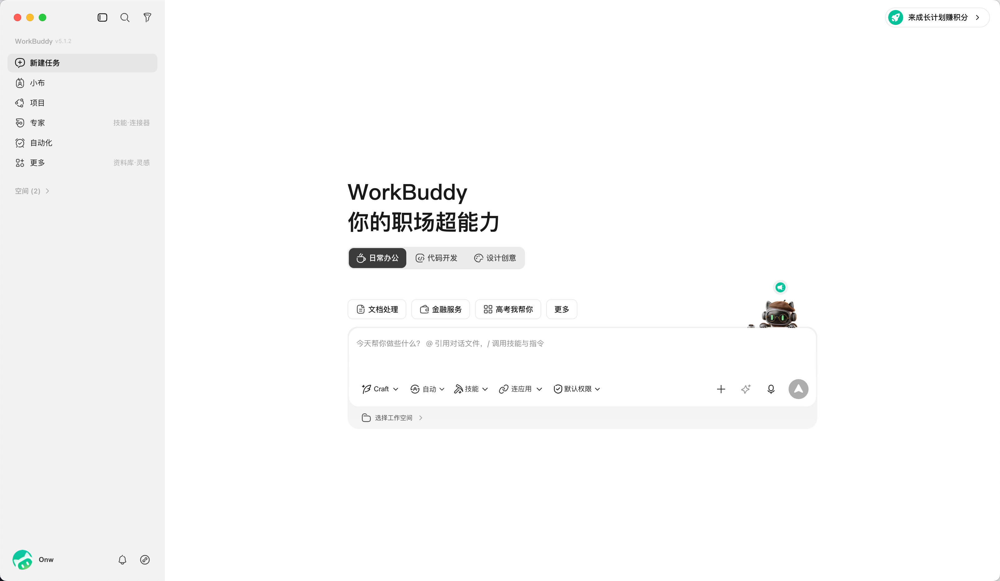
对照截图认识六个区域：
逐一说明：
- ① 功能导航栏 — 所有功能入口。「新建任务」为起点；「助理」管理远程控制；「项目」组织项目空间与团队协作；「专家」内含技能市场和连接器；「自动化」设定时任务；「更多」展开后包含：我的文件、腾讯文档、ima 知识库、乐享知识库、灵感。
- ② 任务列表 — 历史任务按时间排列，点击切换，右键可重命名或归档。
- ③ 对话区域 — 与 AI 交互的核心空间。顶部「日常办公」「代码开发」「设计创意」为场景切换；中部为场景卡片（如「文档处理」「金融服务」等），点击即用；底部输入框附工具栏，含模式切换、模型选择、技能、连应用、权限等开关。
- ④ 快捷模板 — 切换场景后展示对应卡片（如「文档处理」「文本改写」等），点击即可快速发起任务。不需要从零写指令。
- ⑤ 输入框 — 打字、贴截图、拖文件，均在此处。
Enter发送，Shift + Enter换行。输入框内提示：「今天帮你做些什么？@ 引用对话文件，/ 调用技能与指令」。 - ⑥ 底部工具栏 — 常用开关：工作模式（Craft / Plan / Ask）、模型选择（Auto）、技能、连应用、默认权限。
三、模型选择：用哪个"大脑"
⑥ 中「Auto」点开即为模型列表。WorkBuddy 内置多款主流模型，各有侧重。
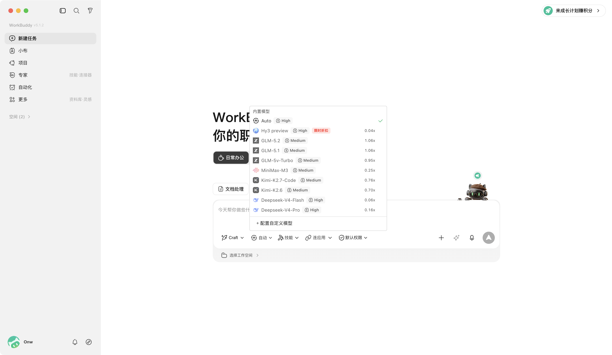
| 模型 | 出品方 | 优势 |
|---|---|---|
| Auto | 系统调度 | 根据任务复杂度、所需上下文长度、是否涉及多模态等维度，自动选用最适配的模型 |
| DeepSeek | 深度求索 | 综合能力强，推理快，日常首选。Pro 版能力更强，Flash 版更轻更快 |
| 混元 | 腾讯 | 中文理解最优，与腾讯文档、企微、腾讯会议配合最顺畅 |
| GLM | 智谱 AI | 中文长文本处理突出，支持文字+图片的多模态任务 |
| Kimi | 月之暗面 | 超大文档一口气读完并精准总结，海量材料时最好用 |
| MiniMax | 稀宇科技 | 轻量快速，简单问答响应极快，复杂任务弱于以上 |
Auto 匹配逻辑：系统根据当前任务的以下维度自动调度模型——任务类型（写作/分析/代码/翻译等）、输入内容的 Token 规模（短文本/长文档）、是否需要多模态处理（图文混合）、以及任务对响应速度与深度的权衡。用户无需手动判断，Auto 在后台完成模型选择。
按场景手动选模型：
| 你的情况 | 推荐 |
|---|---|
| 刚上手 | Auto |
| 日常写作、问答、分析 | DeepSeek |
| 大摞文件分析、长文本 | GLM 或 Kimi |
| 文字+图片同时处理 | GLM |
| 配合腾讯系产品 | 混元 |
| 简单问答，追求速度 | MiniMax 或 DeepSeek-Flash |
自定义模型：点击列表底部「配置自定义模型」，填入名称、API 地址和密钥。兼容 OpenAI 协议，海外模型也可接入。
新手阶段 Auto 默认即可。熟悉后再按任务类型手动切换。
四、推荐设置：30 秒调好
进入设置：左下角头像 → 设置。
| 设置项 | 路径 | 说明 |
|---|---|---|
| 技能自动更新 | 设置 → 通用 | Skills 新版本自动升级 |
| 锁屏远程 | 设置 → 通用 | 电脑不休眠，远程不中断 |
| 对话记忆 | 设置 → 通用 | 提取关键信息记住，下次自动关联 |
| 系统权限 | 设置 → 权限管理 | 文件读取、浏览器控制、辅助功能——全部开启 |
| 沙箱模式 | 设置 → 通用 | 隔离环境运行 AI 操作，防止误触系统文件。默认开启，保持 |
文件权限：
底部工具栏盾牌图标，点开两个选项。日常保持默认权限（仅操作工作目录内的文件）。需操作目录外文件时临时切完全访问权限，用完切回。
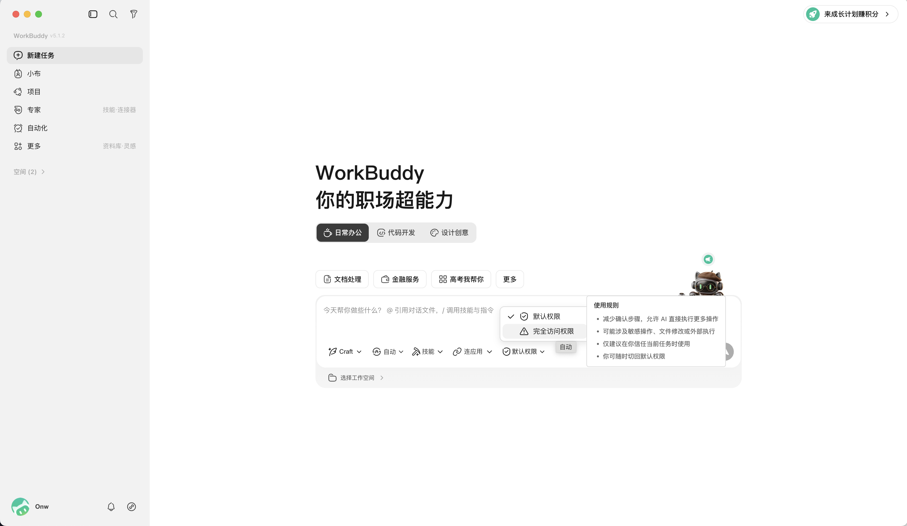
五、三种工作模式
| 模式 | 一句话 | AI 能做什么 | 适用场景 |
|---|---|---|---|
| Ask（问一问） | 只答不做 | 回答问题、分析、总结 | 只需答案时 |
| Plan（想一想） | 先出方案，确认后执行 | 出计划 → 等确认 → 执行 | 不确定步骤，怕跑偏 |
| Craft（做一做） | 直接干活 | 自主拆解 → 调用工具 → 交付 | 目标明确，心里有底 |
选模式口诀：
① AI 不需要动手？→ Ask
② 需要动手，但不确定每一步？→ Plan（先看方案再确认）
③ 流程清晰、风险可控？→ Craft（直接执行）
拿不准时退一档。系统默认 Craft，新手可先切 Ask 熟悉手感。
官方建议：首次使用优先 Ask。处理重要文件前先备份。
六、不止在电脑上用
| 端 | 区别 | 适用场景 |
|---|---|---|
| 桌面端 | 功能最全，操作本地文件，接入企业系统 | 批量处理、深度分析 |
| 移动端 App | 独立运行，支持语音和拍照 | 通勤、差旅，只有手机时 |
| 微信小程序 | 不用下载，扫码即用 | 临时查看进度、快速提问 |
移动端 App 和小程序均支持两种执行模式：
| 模式 | 工作方式 | 适用场景 |
|---|---|---|
| 云端工作 | 云端沙箱执行，不依赖电脑 | 通勤、差旅、周末 |
| 本机模式 | 远程操控电脑执行 | 需要本地文件、用到桌面端连接的系统 |
本机模式需手机端与电脑端使用同一微信账号。
移动端 App 权限：首次启动建议允许相机、麦克风、存储、通知——拍照提问、语音输入、上传文件均依赖这些权限。
此外，WorkBuddy 支持接入企业微信和元宝，在对应应用内直接发消息指挥。
日常以桌面端为主，手机 App 和小程序为移动场景补充。
七、第一次对话 ★
打开 WorkBuddy，选 Ask 模式。
- 输入：「帮我写一封简短的请假邮件，明天上午请假」→ 回车，查看回复
- 追问：「把语气改得更正式一些」→ 回车，对比两次结果
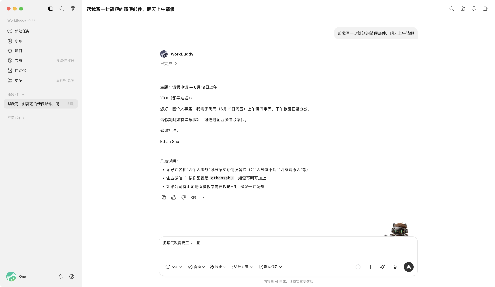
输入技巧：
Enter发送，Shift + Enter换行Ctrl+V/Cmd+V粘贴截图，AI 可识别图片内容- 文件直接拖入输入框
实战挑战（5 分钟）
打开 WorkBuddy，选 Ask 模式，用一个你工作中真实的写作需求试一次。试完后追问一轮——你发现追问前后的差距有多大？
核心要点回顾
- 装好、登录、熟悉界面——知道六个区域各自的功能
- Auto 默认即可，熟悉后按任务切换模型
- 五种设置 30 秒调好，默认权限日常够用
- Ask 安全、Plan 稳妥、Craft 高效——拿不准退一档
- 第一次对话和追问完成——已建立使用体感
1.4小试牛刀
- 三个高频快捷操作（@引文件、截图粘贴、/唤技能）怎么用？
- 任务产物在哪看、怎么分享？
- 在 Ask / Plan / Craft 各执行一次，建立实操体感
一、三个高频快捷操作
| 操作 | 方法 | 效果 |
|---|---|---|
| 引用文件 | @ 选文件，或拖文件进输入框 |
AI 直接读取文件内容 |
| 截图提问 | 截图后 Ctrl+V / Cmd+V 粘贴 |
AI 识别图片并回答 |
| 唤起技能 | 输入 / 选技能 |
快速切换能力，如处理 PDF、OCR、数据可视化 |
二、任务产物：在哪看、怎么处理
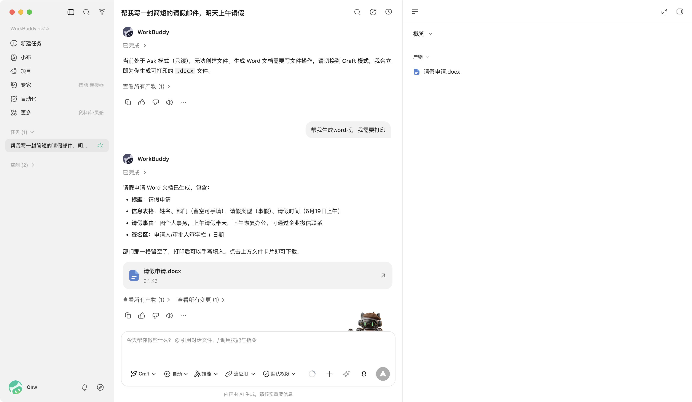
任务执行时，界面右侧会打开结果区，集中展示所有产出。
| 标签 | 内容 | 使用场景 |
|---|---|---|
| 产物 | 生成的文件和交付物列表 | 预览产出，确认结果 |
| 全部文件 | 当前工作空间的全部文件 | 浏览目录，确认文件位置 |
| 变更 | 本次任务的文件改动（diff 视图） | 代码或文档修改，确认改动 |
| 预览 | 网页或直接可查看的页面 | 生成的网页、报告页面 |
查看与分享操作：
- 点击「产物」→ 上方文件列表，下方预览
- 表格和文档可直接在区内预览，无需下载
- 分享：文件上右键选「分享」，或预览时点击右上角分享图标
产物不满意时继续追问，AI 在上一轮基础上持续优化。
实战挑战（10 分钟）
-
Ask 模式（3 分钟） 选一个你工作中的真实问题（不是「帮我写请假邮件」这种练手题），用 Ask 模式提问。看看回复质量——哪里好，哪里差？追问一轮试试
-
Plan 模式（3 分钟） 切换到 Plan 模式，输入一个你需要但不确定步骤的任务。审查 AI 出的方案——有没有遗漏？有没有多余？
-
Craft 模式（4 分钟） 切换到 Craft 模式，让 AI 在工作目录里新建一个文件。完成后打开「结果区 → 产物」查看
核心要点回顾
@引文件、截图粘贴、/换技能——三个操作 2 秒完成- 产物区统一管理所有产出，支持预览和分享
本章总结
| 小节 | 要点 |
|---|---|
| 1.1 AI 智能体发展历史 | AI 历经规则系统、机器学习、大模型三个阶段；Agent 给 LLM 补上「能动手」的执行能力 |
| 1.2 认识 WorkBuddy | WorkBuddy 是能干活的 AI 工作台——你说话、它办事；分个人版与企业版 |
| 1.3 安装、登录与功能纵览 | 装好登录、认识主界面六大区域、按需选模型、用对 Ask / Plan / Craft 三种模式 |
| 1.4 小试牛刀 | 掌握 @ 引文件、截图粘贴、/ 唤技能；产物区统一查看与分享 |
本章你已经认识了 WorkBuddy、装好了环境、跑通了三种模式；下一章，我们深入 LLM 的工作原理，学会把指令写得又准又好。
围绕提问方式、文件处理、写作生成、表格分析与联网研究五类高频场景，把 WorkBuddy 用得更准、更快、更稳。
2.1工作原理速览：看懂 LLM 怎么「想」
- 为什么说 LLM 本质是"预测下一个词"？这和输入质量有什么关系？
- Token、上下文窗口、温度、幻觉分别是什么？
- 三种模式底层的权限有什么差异？怎么选对模式？
一、术语说明：什么是 Prompt
在你继续往下读之前，先认识一个贯穿本章的关键词。
Prompt（提示词） = 你输入给 AI 的那段文字。在 WorkBuddy 里，就是你打在输入框里发给 AI 的内容。
说人话就是：你告诉 AI 要做什么的那句话。后面的「上下文」「Token」「温度」都是围绕「怎么让这句 Prompt 更精准」展开的。
二、一个关键认知：LLM 不是「理解」，是「预测」
大语言模型本质上做的事只有一件：拿到你给的 Prompt，猜接下去该输出什么词。
你输入：「今天天气真」
模型预测下一个 token 的概率：
不错 ████████ 38%
好 ██████ 27%
热 ███ 14%
...
这意味着：
- 你给的上下文越多、越具体 → 概率分布越集中 → 答案越精准
- 你给的上下文越模糊 → 概率分布越发散 → 答案靠运气
用一个类比理解：
| 你说的话 | 结果范围 | 效果 |
|---|---|---|
| 「做个菜」 | 中餐？西餐？荤？素？ | 什么都可能端上来 |
| 「做一道素菜」 | 缩小到素食 | 可能是炒青菜、凉拌黄瓜… |
| 「用青椒和土豆做家常菜，微辣，两人份」 | 精确到具体菜谱 | 青椒土豆丝，辣度和量刚好 |
结论：模糊的输入，输出的不确定性就大——你可能运气好撞上一个好答案，但靠运气不如靠指令。精准的输入，输出的可控性就强。
三、Token：LLM 的「最小处理单位」
Token 可以理解为 AI "嚼"文字的最小一口。"人工智能"四个字，AI 不是一个个字读的，而是一两字一口地嚼——[人工]一口，[智能]一口，两口就嚼完了。不同模型的"嚼法"不一样，所以同样一段文字，不同模型算出来的 Token 数会有差异。
通用参考规则：
- 中文：约 1-2 个汉字 = 1 Token（取决于分词器）
- 英文：约 0.75 个词 = 1 Token
- 代码：1 个符号/关键字可能 = 1 Token
| 示例 | Token 拆分 | Token 数 |
|---|---|---|
| 「人工智能」 | [人工] [智能] | 2 |
| 「WorkBuddy 是 AI 助手」 | [Work][Bud][dy][是][AI][助手] | 6 |
分词规则直接影响模型对语义的理解效果。中文因存在多音字、词组组合特性，分词规则比英文更细致。不同模型（如 BERT、GPT）的分词逻辑存在差异。
为什么要关心 Token？
- LLM 有上下文窗口上限（输入 + 输出总 Token 数有限）
- 上传一个 50 页 PDF 可能消耗数万 Token → 剩下的聊天空间就少了
- 对策：文件太大时分批处理，长对话太久时开新会话
四、上下文窗口与记忆机制：LLM 的「短期记忆」
LLM 没有真正「记住」历史对话，而是把整个对话历史一直带在上下文窗口里。但 WorkBuddy 有额外的记忆系统来增强长期记忆能力。
（一）上下文窗口（短期记忆）
第 1 轮：[用户: 我是某公司 HR] → LLM 看到 1 条
第 5 轮：[用户:...] [AI:...] × 5 → LLM 看到全部 5 轮
第 N 轮：窗口塞满 → 最早的信息被截断（"我是 HR"可能已看不见）
上下文窗口的限制：
- 窗口大小有限（各模型的上下文窗口上限不同，主流模型通常为数十万 Token 级别，部分模型支持百万级超长上下文）
- 窗口塞满后，最早的信息会被截断
- 超长对话会导致早期关键信息被稀释
（二）WorkBuddy 记忆系统（长期记忆）
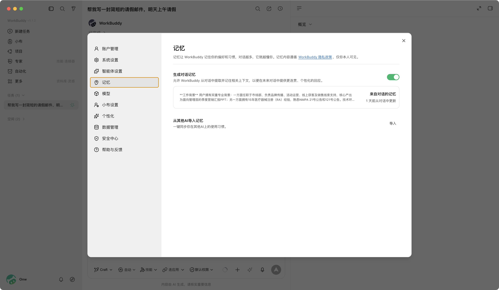
WorkBuddy 有三层记忆架构，让 AI 真正「记住」你：
| 记忆层级 | 存储位置 | 作用域 | 内容类型 |
|---|---|---|---|
| 云端记忆 | 服务端 | 跨设备 | 用户画像、历史对话索引 |
| 本地记忆 | 用户主目录下的配置文件夹 | 跨项目 | 长期偏好设置、使用习惯、工具使用记录 |
| 工作空间记忆 | 当前项目的工作区目录内 | 当前项目 | 每日工作日志、项目笔记 |
记忆功能默认开启，系统每晚自动整理当日会话，从对话中提取事实信息、偏好习惯、人物关系等形成「记忆数据」。后续对话时，会将相关记忆作为背景信息注入。
对策：
- 新任务 → 开新会话，重置窗口
- 关键信息 → 通过「设置 → 记忆」管理，或对话中直接告诉 WorkBuddy「记住 XX」
- 长期使用 → 善用记忆系统，让 WorkBuddy 越来越懂你
五、温度：控制 LLM 的「创造力」
同一个 Prompt，两次可能得到不同答案。这是温度参数在起作用——这是 LLM 的通用机制，非 WorkBuddy 特有。
| 温度值 | 效果 | 比喻 |
|---|---|---|
| 低 | 稳定、保守、可预测 | 照本宣科的公务员 |
| 中 | 平衡创造性和可靠性 | 经验丰富的职场人 |
| 高 | 多变、有创意、不可控 | 天马行空的艺术家 |
Ask 模式默认中等温度；Craft 模式执行关键操作时可能自动降温度以减少出错。你通过「正式/简洁/友好」等语气指令，实质也是在间接影响输出的随机性。
六、幻觉：LLM 为什么会「一本正经地胡说」
幻觉（Hallucination）= LLM 编造了看起来合理但实际不存在的信息。
| 类型 | 示例 | 原因 |
|---|---|---|
| 事实性幻觉 | 编造一篇不存在的论文引用 | 概率预测碰到训练数据空白，最可能的词恰好是假的 |
| 逻辑性幻觉 | 「123 × 456 = 54321」 | LLM 不是计算器，在「猜」而不是「算」 |
| 来源性幻觉 | 给出打不开的链接 | 学了域名模式，不验证链接是否真实存在 |
对策：
- 联网搜索后必须点击链接验证
- 关键数据多来源交叉确认
- 不确定时追问「来源是什么？」
七、三种模式背后的本质
三种工作模式的底层差异，从架构视角看，在于权限级别和执行逻辑：
| 模式 | 权限级别 | 执行逻辑 |
|---|---|---|
| Ask | 只读，不操作文件 | 单次推理，无工具调用 |
| Plan | 只读 → 用户确认后解锁写入 | 五阶段工作流（见下方详解） |
| Craft | 全权限，可读写文件 | Agent 自主循环迭代 |
Plan 模式的五阶段工作流
Plan 模式的核心是将「规划」作为一等公民，解决传统 AI 直接执行导致的偏差和返工问题：
- 需求澄清：AI 通过 1-2 轮关键问题对齐需求边界（技术栈、功能范围、项目约束等）
- 方案生成：基于确认的需求生成完整方案（需求分析、技术方案、视觉设计、任务清单）
- 编辑确认：用户可调整方案，执行前纠偏，避免后期重构
- 方案执行：按任务清单逐步执行，实时反馈进度，支持暂停调整
- 方案归档：自动保存为 Markdown 文件到项目的计划文件夹中，可作为项目知识库复用
架构级改动用 Plan（先规划后执行），细节级调整用 Craft（快速响应）。两者可灵活切换，并非互斥关系。
模糊 vs 精准：三组对比
| 模糊指令 | 精准指令 | 差距在哪 |
|---|---|---|
| 「帮我写周报」 | 「我是销售部员工，本周完成3个客户拜访+1个签约(50万)。按『本周产出/数据/下周计划』三部分写。」 | 缺角色、缺数据、缺格式 |
| 「分析这个数据」 | 「附件是Q1-Q3销售数据，分析各月趋势、环比增长率、TOP3产品，输出表格+2条建议。」 | 缺范围、缺维度、缺输出要求 |
| 「做个 PPT」 | 「把这份 Word 大纲转成 PPT，蓝色商务风格，每页不超过5个要点，加公司 Logo。」 | 缺素材、缺风格、缺约束 |
核心要点回顾
- LLM 本质是预测下一个词 → 输入越精准，输出越可控
- Token 有限、上下文有窗口 → 文件大了分批，聊多了开新会话
- 温度控制创造力，幻觉需要验证 → 关键信息必须核实来源
- Ask 只答、Plan 先审、Craft 直接干 → 底层是权限开关的区别，选对事半功倍
实战挑战（5 分钟）
挑一条你最近发给 AI 的模糊指令，按「角色 + 背景 + 任务 + 格式」补全成精准指令，重新发一次，对比两次输出差在哪里。
2.2Prompt 心法：从会说人话到会问 AI
- Prompt 的结构是什么？怎么快速构建高质量提问？
- 怎么通过追问逐步逼近最佳答案？
- 怎么控制 AI 的输出语气，让它符合场景需求？
一、Prompt 结构：角色 + 背景 + 任务 + 格式
一个高效的 Prompt 应包含四个要素。结构化的指令能让 AI 更精准地理解你的需求，显著提升输出质量。
| 要素 | 含义 | 作用 | 重要性 |
|---|---|---|---|
| 角色 | 你是谁，在什么岗位/场景下 | 让 AI 代入你的视角，输出更贴合 | 高 |
| 背景 | 相关限制条件和上下文信息 | 让 AI 理解具体情况，避免泛泛而答 | 高 |
| 任务 | 你想要 AI 做什么（指令） | 明确任务方向，这是最关键的一步 | 高 |
| 格式 | 希望得到什么形式的输出 | 控制输出结构，便于直接使用 | 中 |
示例：撰写会议纪要
- 角色：我是产品部项目助理
- 背景：今天下午 2 点开了产品评审会，参会人员包括产品部张经理、研发部李工、测试部王工
- 任务：整理成会议纪要，重点记录讨论要点和决议事项
- 格式：按「会议基本信息→讨论要点→决议事项→待办跟进」结构输出，每个部分用 bullet point
组合后：「我是产品部项目助理。今天下午 2 点开了产品评审会，参会人员包括产品部张经理、研发部李工、测试部王工，讨论了 3 个需求的优先级排序。请帮我整理成会议纪要，按『会议基本信息→讨论要点→决议事项→待办跟进』的结构输出，每个部分用 bullet point。」
二、Prompt 优化三阶段
优化 Prompt 分三步走：
| 阶段 | 操作 | 说明 | 示例 |
|---|---|---|---|
| 第一阶段：搭骨架 | 明确角色 + 背景 + 任务 + 格式 | 保证 AI 理解不跑偏 | 「我是 HR，需要一份新员工入职培训计划，按周输出，用表格呈现。」 |
| 第二阶段：加约束 | 补充字数、风格、禁止事项、输出要求 | 缩小 AI 的发挥空间，提升精准度 | 「... 500 字以内，正式语气，不包含薪酬具体数字。」 |
| 第三阶段：给范例 | 提供一个参考样本或输出模板 | AI 模仿效果通常比描述更精准 | 「... 参考这个格式：第 1 周：入职手续（事项 A/B/C）」 |
三、追问五种策略
追问是提升 AI 输出质量最有效的手段，以下五种策略最常用：
| 策略 | 适用场景 | 追问示例 | 效果 |
|---|---|---|---|
| 要求细化 | 回答太笼统、缺细节 | 「第 2 点能否展开，给出具体执行步骤？」 | 补充细节和实操指引 |
| 换个角度 | 需要多视角、评估风险 | 「如果预算砍半，方案怎么调整？」 | 获得备选方案和风险评估 |
| 请求举例 | 理论太多、不好落地 | 「用我们行业的实际业务场景举个例子。」 | 理论落地，更易执行 |
| 质疑验证 | 需要判断可靠性、查漏 | 「这个方法有什么潜在风险？」 | 发现盲点，完善方案 |
| 格式转换 | 需要不同输出形式 | 「把刚才的内容整理成表格/PPT 大纲。」 | 直接产出可用格式 |
对话太长时开新窗口。AI 的上下文窗口有限制，对话越长，早期信息可能被截断。适时开新会话，重置窗口。但别忘了 WorkBuddy 的记忆系统可以跨会话保留你的偏好和习惯。
追问实战：四轮对话步步逼近（以"制定季度工作计划"为例）
| 轮次 | 提问 | 效果 |
|---|---|---|
| 第 1 轮 | 「我是市场部经理，需要制定 Q4 工作计划，团队 5 人，重点在品牌推广和活动策划。」 | 得到框架方案 |
| 第 2 轮 | 「第 2 点（品牌推广）细化到具体平台和月度节奏。」 | 补充执行细节 |
| 第 3 轮 | 「如果其中 1 人临时支持其他项目，人员如何调整？」 | 增加风险预案 |
| 第 4 轮 | 「整理成可直接向总监汇报的 PPT 大纲，每页用 bullet point。」 | 格式落地 |
四、语气控制：给 AI 注入「人设」
同一件事，语气不同，效果完全不同。语气指令是控制 AI 输出风格最直接的手段。
| 语气类型 | 适用对象 | 指令关键词 | 示例场景 |
|---|---|---|---|
| 正式商务 | 客户、领导、合作伙伴 | 「用正式、专业的语气」 | 给客户的方案邮件 |
| 友好亲切 | 同事、团队内部 | 「用轻松、友好的语气」 | 团队通知、内部沟通 |
| 简洁直接 | 紧急事务、快速同步 | 「用简洁、直接的语言」 | 项目进度同步、问题反馈 |
| 委婉礼貌 | 拒绝请求、提出建议 | 「用委婉、礼貌的方式」 | 拒绝需求、提出改进建议 |
同一件事，四种语气对比（通知团队周末支持项目）：
- 简洁直接：「各位，本周六需支持 XX 项目上线，请提前安排时间。」
- 友好亲切：「Hi 团队，这周六咱们一起保障 XX 项目上线，辛苦大家！中午订餐，晚上庆功～」
- 正式商务：「各位同事，兹通知本周六需全员支持 XX 项目上线，请提前协调个人安排并确认到岗时间。」
- 委婉礼貌：「不好意思周末打扰大家，XX 项目上线在即，需要各位支持。周六方便到岗的同事请回复确认，辛苦了。」
语气指令可以叠加。例如「用正式但不过于刻板的语气」或「用简洁但直接且不冒犯的语气」，能更精准地控制输出风格。
核心要点回顾
- Prompt 结构：角色 + 背景 + 任务 + 格式 → 结构化指令让 AI 精准理解
- 三分法优化路径：搭骨架（明确指令）→ 加约束（缩小发挥空间）→ 给范例（提升模仿效果）
- 追问策略：细化、换角度、要举例、质疑验证、格式转换 → 迭代逼近最佳答案
- 语气控制：正式商务 / 友好亲切 / 简洁直接 / 委婉礼貌 → 一句话切换输出风格
新任务先开新会话；长对话定期提醒 AI 关键信息；日常工作中养成记录习惯，方便周末汇总时快速生成周报。
核心技法速查
| 技法 | 一句话 | 使用时机 |
|---|---|---|
| 角色扮演 | 「你是一名资深 XX 专家」 | 需要专业视角时 |
| 苏格拉底追问 | 不停追问「为什么」层层深入 | 分析复杂问题根因 |
| 预演失败 | 「如果这个方案失败了，最可能的原因是什么？」 | 方案评审、风险评估 |
| 渐进提炼 | 先出框架 → 逐步细化每个模块 | 复杂方案写作 |
| 反向提示 | 「不要写成 XX 风格」「避免使用 XX 词汇」 | 控制输出方向 |
| 跨领域创新 | 「用 XX 行业的思路解决 YY 问题」 | 创意策划 |
所谓"激励式表达"会影响 AI 的措辞选择和分析深度。虽然 AI 没有情绪，但给高质量要求的暗示（如"请深思熟虑后给出专业建议"）能提升输出质量。
五个必须避开的坑
| 坑 | 表现 | 正确做法 |
|---|---|---|
| 坑1：指望一次成功 | 写一个长 Prompt 等完美答案 | 先用短 Prompt 跑出框架，再追问迭代 |
| 坑2：盲目信任 | 直接使用未核实的搜索结果 | 关键数据点击原链确认，多方交叉验证 |
| 坑3：模式选错 | 用 Ask 模式要求 AI 生成文件 | 需要操作文件时切 Craft 或 Plan |
| 坑4：上下文超载 | 一个会话聊几十轮不换 | 新任务开新会话，长任务定期提醒关键信息 |
| 坑5：指令太抽象 | 「帮我做得好一点」「更专业些」 | 给具体标准：「控制在 200 字」「用表格呈现」 |
实战挑战（5 分钟）
选一段你常用的提问，套用「搭骨架 → 加约束 → 给范例」三步优化一遍，再追问一轮，看看输出质量提升了多少。
2.3场景实战：高频工作示例
- 四个典型场景（文档处理、内容写作、数据分析、联网搜索）各自怎么套公式写指令？
- 怎么把学到的 Prompt 心法举一反三用到更多场景？
- 为什么搜索后要验证？怎么验证？
一、文档处理
上传文件后，用自然语言告诉 AI 要做什么。以下场景覆盖多个行业岗位：
| 场景 | 岗位 | 指令示例 |
|---|---|---|
| 合同审阅 | 法务 | 「上传这份采购合同，提取甲乙双方权利义务，标注不对称条款和潜在风险」 |
| 简历筛选 | HR | 「上传这 20 份简历 PDF，提取每人的工作经验年限和核心技能，按岗位匹配度排序」 |
| 财报分析 | 财务 | 「上传这份年度财务报表，分析毛利率变化趋势，列出同比变动超 10% 的项目」 |
| 论文精读 | 教师/研究员 | 「用 500 字总结这篇论文的创新点和实验结论，指出研究局限性」 |
完整案例：
- 上传一份技术方案 PDF
- 输入：「总结核心架构、主要功能和实施计划，列出 3 个风险点」
- 查看结果，追问：「把实施计划细化到月，加甘特图」
二、内容写作
写作指令公式：文档类型 + 目的 + 关键信息 + 语气要求 + 篇幅约束
| 场景 | 岗位 | 指令示例 |
|---|---|---|
| 招聘 JD | HR | 「帮我写一份高级 Java 工程师的招聘 JD，要求 5 年以上经验，熟悉微服务架构，附福利说明，500 字，语气专业但不刻板」 |
| 活动方案 | 市场/运营 | 「写一份 Q3 线上线下联动推广方案，预算 20 万，目标拉新 5 万，包含渠道策略和时间排期表」 |
| 公文通知 | 行政/政府 | 「起草一份关于公司年度消防演练的通知，时间下周三下午 3 点，全员参与，语气正式规范」 |
| 客户邮件 | 销售 | 「帮我写一封给客户的跟进邮件，对方上次看了报价后 7 天未回复，语气委婉，不超过 200 字」 |
| 年终总结 | 管理层 | 「我是区域销售总监，帮我写年度工作总结，包含业绩回顾、团队建设、市场分析和明年规划四大板块」 |
三、数据分析
上传 Excel / CSV 文件后，按「数据范围 + 分析目标 + 输出要求」的结构下指令：
| 场景 | 岗位 | 指令写法 |
|---|---|---|
| 费用分析 | 财务 | 「分析各部门 Q1 差旅费，对比预算偏差率，标出超预算 20% 以上的部门，输出预警表格」 |
| 考勤统计 | HR | 「统计 3 月全勤人数、迟到次数分布和加班 TOP10，生成带图表的数据简报」 |
| 业绩分析 | 销售 | 「按区域分组统计季度销售额，计算环比增长率，用柱状图对比，标注 TOP3 和末 3 位」 |
| 用户分析 | 运营 | 「分析用户注册数据，按渠道拆解转化率，找出转化最高的 3 个渠道并给优化建议」 |
完整链路：
- 上传数据文件（确保第一行是表头）
- 输入分析指令 → AI 处理（10-30 秒）
- 查看结果 → 如需调整，追问「换成饼图」「按区域再分一组」
- 满意后下载图表和报告
四、联网搜索
指令公式：搜索主题 + 信息范围 + 时间限定 + 输出格式
| 场景 | 岗位 | 指令要点 |
|---|---|---|
| 供应链调研 | 采购/制造业 | 「搜索 2026 年芯片供应链的产能状况和主要供应商，整理成评估报告，标注来源」 |
| 政策研究 | 法务/政府事务 | 「搜索 2025-2026 年数据安全相关法规更新，按时间线整理，标注影响范围和合规建议」 |
| 行业分析 | 金融/投资 | 「搜索 2026 年 AI 医疗行业的融资事件、头部公司和市场规模，整理成结构化报告」 |
| 竞品调研 | 产品/战略 | 「搜索主要竞品近 3 个月的功能更新和定价变化，按时间倒序整理成对比表格」 |
三步闭环：搜 → 验 → 整
- 搜：明确要求联网搜索，给出时间范围和信息维度
- 验：点击来源链接确认信息准确，多个来源交叉验证
- 整：要求 AI 按指定格式整理（表格 / 报告 / PPT 大纲），标注每条来源
AI 可能给出不存在的链接，发布前务必点击验证。关键数据建议多方交叉确认。
核心要点回顾
- 四个典型场景各有指令公式：文档（上传+指令）、写作（类型+目的+信息+语气）、数据（范围+目标+输出）、搜索（主题+时间+格式），这套思路可迁移到更多场景
- 搜 → 验 → 整三步闭环，联网搜索必须核实来源
- 追问迭代 + 语气控制，比一次写长 Prompt 更高效
实战挑战（5 分钟）
从文档、写作、数据、搜索四类场景中挑一个你本周真实的任务，套用对应的指令公式写一条 Prompt 并执行，记录哪里还需要追问补充。
本章总结
| 小节 | 要点 |
|---|---|
| 2.1 工作原理速览 | 看懂 LLM 怎么「想」——它基于概率续写、有上下文窗口与知识边界，理解机制才能用好它 |
| 2.2 Prompt 心法 | 从「会说人话」到「会问 AI」——用 Prompt 四要素把需求说清楚，让 AI 一次到位 |
| 2.3 场景实战 | 文档、写作、数据、搜索四类高频场景，各套一个指令公式快速上手 |
本章你已经看懂了 LLM 怎么「想」、学会用 Prompt 四要素套场景公式；下一章，我们用「读·写·析」三个完整工作流带你沉浸式实战——每个工作流都是这里公式的组合应用。
从日常办公、长文档处理到演示材料制作与研究助手，把 WorkBuddy 真正落到高频工作任务中，形成可复用的实战方法。
前两章完成了认知构建与对话技法，本章将所学能力落地到「读·写·析」三个通用工作流中，覆盖各行业岗位的高频实战场景。
3.1读：让 AI 帮你消化信息
- 长文摘要有哪三种读法（速览/精读/定向）？怎么根据目的切换？
- 双文档和多文档对比怎么做？怎么快速定位差异和共识？
- 外文翻译三步法是什么？怎么在效率和质量之间找平衡？
一、长文读成摘要：三种读法自由切换
同样一份 50 页报告，不同目的用不同读法：
| 你的目的 | 读法 | Prompt 关键词 | 得到什么 |
|---|---|---|---|
| 先看结论再决定看不看 | 速览模式 | 「用 300 字总结要点」 | 1 分钟判断值不值得精读 |
| 要全面理解、归档留用 | 精读模式 | 「按章节提取，每章 3-5 个要点」 | 系统化笔记 |
| 只关心某个具体问题 | 定向模式 | 「只提取涉及预算和排期的内容」 | 直击要害，跳过无关内容 |
三种读法对比：
速览：「这是我明天要面试的候选人简历包，每人用一句话总结匹配度」 → 一屏看完。精读：「把产品需求文档按模块提取要点，每模块3-5条」 → 系统笔记。定向：「这份100页的技术文档里，只找出和性能指标相关的段落」 → 精准定位。
一个翻车例子：小王让 AI 总结一份 50 页的行业报告，直接说"总结一下"。AI 给了 300 字摘要——但全是正确的废话，因为没告诉 AI 他关心什么。后来他改说"只提取和预算相关的内容"，这回精准了。同一个文件，两种结果——差别在指令。
二、选对读法的判断逻辑
不是每份文档都要精读——关键是先判断你的目的。你只需要判断「值不值得看」？→ 速览。你需要全面理解、留档备用？→ 精读。你只关心某一个具体问题？→ 定向。
| 场景 | 文档举例 | 选哪种读法 | 为什么 |
|---|---|---|---|
| 老板转发了一篇行业文章让你看看 | 公众号文章 | 速览 | 老板可能只需要你回一句「核心观点是…」 |
| 接手新项目，前任留了一堆交接文档 | 项目文档 | 精读 | 需要系统梳理项目现状、风险、待办 |
| 供应商发来200页技术白皮书，你只关心兼容性 | 技术文档 | 定向 | 只提取「兼容性要求」相关段落即可 |
提示：同样的文档，读法不同，Prompt 不同，结果天差地别——先想清楚「我要从这份文档中得到什么」，再决定用哪种读法。
三、两版文档找差异：别再逐行肉眼对比
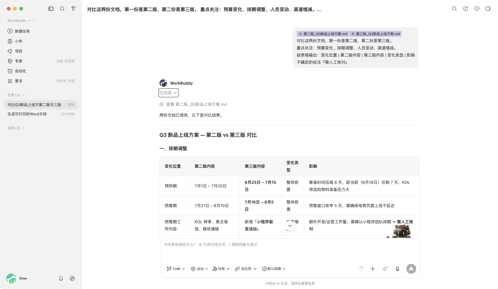
方案改了第三版、制度更新了、需求文档被产品经理改了——你需要快速知道「到底动了哪里」：
| 传统方式 | AI 辅助方式 |
|---|---|
| 打开两份文档，逐行肉眼对比 | 上传两个版本 → 一句话 → 结构化对比表 |
| 10 页文档约需 20 分钟 | 约 30 秒 |
| 容易漏看微小改动 | 不遗漏，但关键差异需人工复核 |
对比 Prompt 的写法：
"对比这两份文档，第一份是第二版，第二份是第三版。
重点关注：预算变化、排期调整、人员变动、渠道增减。
按表格输出：变化位置 | 第二版内容 | 第三版内容 | 变化类型 | 影响
不确定的标注『需人工核对』"
提示：文档对比的关键是锁定你在意的维度——不需要逐字比对，找准差异就行。
四、多文档对比实战：三份报告一张表看穿
三家咨询公司都发了同一领域的报告，你需要形成自己的判断：
| 对比维度 | 报告A | 报告B | 报告C | 你的判断 |
|---|---|---|---|---|
| 市场规模预测 | 500亿 | 650亿 | 480亿 | 注意：数据不一致，需核入口径 |
| 增长驱动因素 | 政策推动 | 技术突破 | 需求拉动 | 看法不同，但三点都值得关注 |
| 头部玩家 | A/B/C三家 | 三家一致 | 三家一致 | 共识，可采信 |
| 最大风险 | 监管收紧 | 人才短缺 | 成本上升 | 各有侧重，综合参考 |
Prompt：「上传了三份报告，请按『共识结论/分歧点/数据冲突』三类整理成对比表，冲突数据标注『需核实』」
提示：多文档对比的最大价值是「发现分歧」——三家都说的你可以信，只有一家说的要慎重。
五、外文文档直接读：专业翻译三步法
海外同事发来英文报告、需要回复外商邮件、要翻译产品说明书——这是越来越多人的日常：
| 步骤 | 做什么 | Prompt 示例 |
|---|---|---|
| ① 快译 | 快速看懂大意 | 「翻译成中文，不用追求文采」 |
| ② 精修 | 指定术语和风格 | 「甲方统一译 Party A，保持正式商务风格」 |
| ③ 校对 | 关键信息回原文确认 | 「金额、日期、人名这些必须核对原文」 |
翻译底线与翻车预防：
| 翻车场景 | 表现 | 对策 |
|---|---|---|
| 一词多义 | "Party A shall bear the cost" → 翻成「甲方应承担熊的费用」 | 提供术语表：「Party A→甲方，bear→承担」 |
| 文化差异 | 中文「辛苦了」直译 → 英文语境下听起来像居高临下 | 指定目标读者文化背景 |
| 格式破坏 | 原文编号 1.1→1.2→1.3，译后变成 1→2→3 | 加格式约束：「保留原文标题层级和编号结构」 |
翻译底线：
- 不确定的专业术语 → 保留原文 + 标注「待人工确认」
- 正式对外文件 → AI 译初稿 + 人工校对终稿
提示：翻译 Prompt 不只是「翻成XX语言」，还要加三道保险：术语表 + 目标读者 + 格式保持。
六、批量文件处理：一句话搞定重复劳动
WorkBuddy 区别于普通 AI 的地方——能直接操作本地文件，批量执行。这是行政、运营等岗位最高频的提效场景：
| 场景 | 岗位 | 指令示例 |
|---|---|---|
| 格式转换 | 行政 | 「把发票文件夹里的所有 PDF 转成图片」 |
| 批量重命名 | 运营 | 「按『日期-项目名-版本号』格式重命名这 50 个文件」 |
| 文件归类 | 所有人 | 「把下载文件夹里的文件按类型分到不同子文件夹」 |
| 合并拆分 | 文职 | 「把客户文件夹里所有 Word 合并成一个 PDF」 |
这些重复劳动每次省 5-20 分钟，一年下来是上百个小时。
删除类操作建议先说「先列出要删除的文件让我确认，不要直接删」，防止误删重要文件。
七、跨文档检索问答：让 AI 围绕你的文档回答问题
通过 WorkBuddy 左侧「资料库」入口，可以连接多种数据源，让 AI 基于你的文档直接回答问题，无需逐份打开搜索：
支持的资料库类型：
| 类型 | 说明 | 适用场景 |
|---|---|---|
| 我的文件 | 本地电脑上的文件和文件夹 | 当前项目文档、临时上传的参考资料 |
| 腾讯文档 | 在线协作文档（与腾讯文档打通） | 团队协作中的共享文档、在线表格 |
| ima 知识库 | 个人 / 团队 / 订阅的知识库（微信扫码授权） | 长期积累的行业资料、制度文件、历史方案 |
| 乐享知识库 | 企业内部知识管理平台 | 企业级制度、流程规范、培训材料 |
提示：使用方式：在左侧导航栏点击「资料库」→ 选择对应类型 → 添加文件或授权 → 在对话中引用。不同类型的连接方式略有差异，但核心操作一致——把资料喂给 AI，让它围绕这些内容回答问题。
典型场景：
| 场景 | 推荐使用 | 指令示例 |
|---|---|---|
| 合同查询 | 我的文件（上传合同） | 「这些采购合同中，违约条款涉及赔偿上限的有哪些？」 |
| 制度检索 | ima 知识库 或 乐享知识库 | 「公司最新版差旅制度中，海外出差的住宿标准是多少？」 |
| 方案追溯 | 我的文件（工作空间项目文件夹） | 「这个项目的方案历次调整中，排期变化是什么？」 |
| 团队文档查询 | 腾讯文档 | 「这份在线协作的项目计划中，里程碑节点有哪些？」 |
核心要点回顾
- 三种读法对应三种目的：速览（判断是否值得看）→ 精读（系统归档）→ 定向（精准定位），读法选对，效率差 10 倍
- 文档对比的核心是指定关注维度：不指定维度 = 50条无意义变化；指定维度 = 精准命中关键差异
- 翻译三步法：快译（看懂大意）→ 精修（统一术语）→ 校对（关键信息核实），AI 出初稿，人工兜底线
- 批量处理与知识库问答：格式转换、文件归类等重复劳动一句话完成；资料库支持多种数据源，指定文件夹即可实现跨文档检索问答
实战挑战（5 分钟）
找一份你工作中最头疼的长文档，用今天学的三种读法分别试一遍。想想看：哪一种读法让你最快拿到想要的信息？如果换一种读法，结果差在哪里？
3.2写：让 AI 帮你生成内容
- 「写」的关键心法是什么？为什么给 AI 一个结构模板比描述内容重要？
- 邮件、汇报、PPT 三个场景各自怎么写？
- 一稿多用怎么做到？同一批素材怎么产出多种形态？
一、关键心法：「写」的本质是给 AI 一个「结构模板」
回顾第二章的 Prompt 四要素，到了「写」的场景，格式变成了主角：
写 Prompt（写作场景）= Prompt 四要素 + 输出结构模板
其中「结构模板」按文档类型选择：
· 内容型文档 → 固定结构（如「开头 → 正文 → 结尾」）
· 数据型文档 → 维度列表（如「分析各区域表现、环比变化、Top3」）
不同类型的内容，套不同的结构模板：
| 内容类型 | 标准结构模板 | 变种 |
|---|---|---|
| 邮件 | 称呼 → 背景 → 正文 → 行动请求 → 结尾 | 通知型/请求型/感谢型各有侧重 |
| 汇报 | 成果概述 → 数据亮点 → 问题反思 → 下步计划 | 日报/周报/月报只有粒度差异 |
| 公文 | 标题 → 主送 → 正文（背景+方案+要求）→ 落款 | 通知/请示/纪要各有固定格式 |
提示：写东西的时候，给结构比给内容重要。比如不说"帮我写周报"，而是说"按成果-数据-问题-计划四块来写"。
二、邮件：最常用的场景，最容易被忽略的五要素
| 要素 | 如果不说清楚 | 后果 |
|---|---|---|
| 收件人身份 | 「帮我写个邮件」 | 不知道给领导还是给客户 → 语气全错 |
| 邮件目的 | 「帮我回一下」 | 是通知？是请求？是感谢？→ 内容乱套 |
| 核心信息 | 没说具体时间、金额、事由 | AI 只能靠猜 → 需要反复修改 |
| 语气要求 | 没交代 | 可能太冷硬、可能太随便 |
| 篇幅限制 | 没限制 | 可能冗长啰嗦 |
邮件 Prompt 怎么写：
写给[收件人]的[邮件类型]，目的是[核心目的]。
关键信息：[具体内容，含时间、数据、背景]。
语气[正式/友好/简洁]，控制在[X]字以内。
一封合格的邮件 = 五要素填满的 Prompt。少一个，AI 就多一份自由发挥的空间，你就多一次修改的成本。
三、汇报：从零散想法到可交付的文档
很多人写汇报的问题是「手里有一堆碎片信息，不知道怎么串起来」：
你的素材（碎片） AI 的加工（结构化） 输出（可交付）
───────────────── ──────────────────── ──────────────
本周做了A、B、C → 按「成果→数据→问题→计划」 → 一份周报
这个月完成了X目标 → 按「目标达成率→亮点→反思」 → 一份月报
每天做了1、2、3 → 按「完成项→明日计划」 → 一份日报
汇报 Prompt 的关键：告诉 AI "按这个结构组织起来"，比"帮我写"管用
"我是[岗位]，汇报对象是[上级]。
我做了：[列出事项，越具体越好]
数据：[有什么数据就写什么]
请按照『完成成果→数据亮点→遇到的问题→下阶段计划』的结构
整理成[周报/月报]，突出[核心亮点]，控制在[X]字。"
提示：汇报就是按模板填空——你提供碎片素材 + 指定模板 = AI 帮你填空。
四、PPT：从需求到成品的多步骤生成
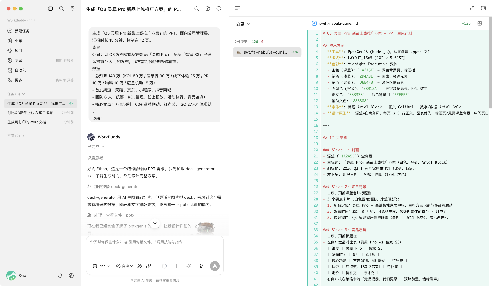
PPT 生成通常需要多个步骤，推荐在 Plan 模式下操作，让 AI 先制定方案再执行：
标准操作流程（来自官方文档和社区验证）：
第一步：准备工作空间 → 第二步：选择 PPT 功能（或加载 pptx 技能）
→ 第三步：输入需求（主题、受众、时长、数据、风格）
→ 第四步：AI 生成大纲 → 第五步：审查修正大纲
→ 第六步：生成完整页面内容 → 第七步：导出 .pptx 或 .html
AI 生成的 .pptx 排版可能不够精美，但大纲质量很高。推荐拿到大纲后复制到 PowerPoint，用「设计灵感」一键排版，效果最好。
五、PPT 前期需求怎么给：正反对比
PPT 生成的质量 80% 取决于第一步「需求结构化」给得够不够：
| 维度 | 反例：说不清楚 | 正例：说清楚 | 为什么差了 |
|---|---|---|---|
| 受众 | 「做个汇报PPT」 | 「面向公司管理层，15分钟汇报」 | 管理层要结论先行，给团队讲要详细说明 |
| 数据 | 「数据都在表里」 | 「Q1营收500万(+15%)，成本380万，毛利率24%」 | AI 不知道哪些数据重要，只能随机挑 |
| 逻辑 | — | 「按『结论先行→数据支撑→问题分析→下季度计划』」 | 没指定逻辑 = AI 随机选一种 |
| 风格 | — | 「商务简洁风，深蓝+白色，每页不超过5行正文」 | 没指定 = 可能生成花哨的模板 |
PPT 需求怎么描述：
"生成[主题]的PPT，面向[受众]，汇报时长[X]分钟，控制在[Y]页。
背景：[一句话背景]
数据：[关键数据点]
逻辑：按[结构]组织
风格：[配色+布局要求]
缺失数据标注『待补充』。"
提示：PPT 的第一步不是让 AI 写，是先让「你自己想清楚要什么」——需求越结构化，生成越精准。
六、内容创作：覆盖自媒体全场景
运营和市场岗位的高频需求——公众号推文、短视频脚本、产品海报文案：
| 内容类型 | 关键要素 | Prompt 示例 |
|---|---|---|
| 公众号推文 | 选题角度 + 目标读者 + 字数 | 「根据这份行业数据报告，写一篇面向职场新人的公众号推文，标题有吸引力，3个小标题+导语，1000字，结尾引导关注」 |
| 短视频脚本 | 时长 + 风格 + 核心信息 | 「写一个60秒的短视频脚本，介绍新功能上线，轻松幽默风格，包含开场钩子+3个亮点+结尾引导转发」 |
提示：内容创作的核心是记住第二章的 Prompt 心法：角色（你是什么号）+ 背景（给谁看）+ 任务（传达什么）+ 格式（公众号/脚本/海报），四要素填满。
七、一稿多用：同一批素材，产出三种形态
一份素材可以让 AI 同时生成多种交付物，不用每种都从头写 Prompt：
原始素材：一份完整的工作总结 + 数据
│
├──→ Prompt A：邮件版（150字，老板快速同步）
├──→ Prompt B：周报版（完整四模块，团队存档）
└──→ Prompt C：PPT 大纲版（5页，周例会汇报用）
| 交付形态 | Prompt 差异点 | 适用场景 |
|---|---|---|
| 邮件版 | 「150字，只写三个关键结论和下周重点」 | 周五下午快速同步老板 |
| 周报版 | 「按『成果→数据→问题→计划』四模块完整展开」 | 团队存档、季度回顾 |
| PPT版 | 「生成5页大纲，每页一个要点」 | 周例会汇报 |
提示：一份素材，三段 Prompt，三种产出——不必每种都从零开始。
核心要点回顾
- 「写」的底层心法：给结构比给内容重要——内容 + 结构模板 = 可交付文档
- 多场景覆盖：邮件五要素、汇报四模块、PPT七步流水线、自媒体内容创作——各自有对应的 Prompt 模板
- 一稿多用：同一批素材，改 Prompt 的结构要求和篇幅约束，就能产出邮件/周报/PPT等多种形态
实战挑战（5 分钟）
选一个你经常要写的文档类型（邮件/周报/PPT），先用你平时的写法让 AI 生成一版，再套用本节的结构模板重写一版。对比两版，差距在哪？
3.3析：让 AI 帮你分析决策
- 数据分析有哪四类操作？图表怎么选？
- 行业研究「搜→读→整」三步闭环怎么做？
- 方案对比怎么做？研究成果怎么沉淀才能下次复用？
一、数据分析：从「有什么数据」到「能得出什么结论」
| 传统方式 | AI 方式 | |
|---|---|---|
| 流程 | Excel函数 → 数据透视表 → 手工做图 → 写结论 | 上传数据 → 一句话 → 统计结果 + 图表 + 分析建议 |
| 门槛 | 需要会公式和图表工具 | 不需要你会写公式 |
| 分析类型 | Prompt 模板 | 得到什么 |
|---|---|---|
| 基础统计 | 「计算A列总和、平均值、最大值」 | 汇总数据 |
| 分组对比 | 「按B列分组，统计各组数值和占比」 | 分类洞察 |
| 趋势判断 | 「分析月度数据的变化趋势，找出拐点」 | 趋势结论 |
| 查找异常值 | 「找出明显偏高或偏低的记录」 | 数据质量检查 |
数据分析黄金 Prompt：
分析[数据文件]，想了解[关键问题]。
具体分析：[维度1]的[统计方式]、[维度2]的[统计方式]...
输出：[表格/图表/报告]，如需图表说明类型。
提示：数据分析 Prompt = 你告诉 AI 「要算什么、怎么分组、怎么展示」——不需要你会写公式。
二、图表选型指南：什么数据配什么图
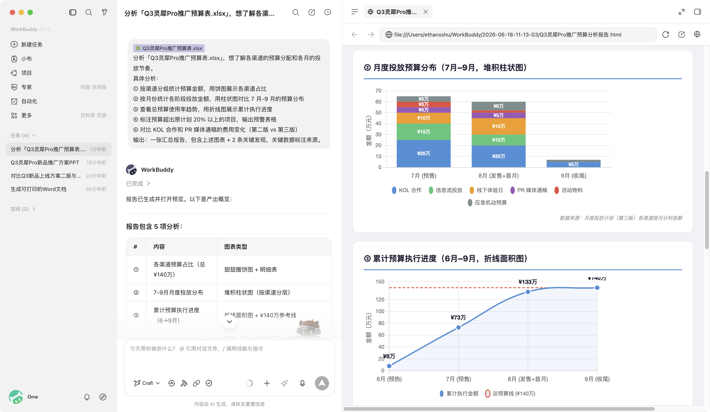
| 你要展示什么 | 用什么图 | Prompt 示例 |
|---|---|---|
| 比大小（各部门完成情况对比） | 柱状图 | 「用柱状图对比各部门Q1指标完成情况」 |
| 看趋势（近12个月数据变化） | 折线图 | 「用折线图展示月度数据变化趋势」 |
| 看占比（各分类占比分布） | 饼图 | 「用饼图展示各类别占比」 |
| 看流程（审批流程 / 项目阶段） | 流程图/时间轴 | 「生成项目各阶段的时间轴图」 |
选错的后果：
- 用饼图展示12个月的趋势 → 完全看不懂
- 用柱状图展示20个部门的占比 → 又挤又乱
提示：先想清楚「我想让观众看懂什么」，再告诉 AI 用什么图——选错图 = 数据白分析。
三、行业研究：搜→读→整三步闭环
研究一个行业或公司，标准流程：
① 搜（联网搜索收集素材）
→ "联网搜索[行业]2026年市场规模、竞争格局、政策动向"
② 读（逐份消化关键信息）
→ 每份报告用「精读模式」→ 提取关键数据和核心观点
③ 整（整合多来源形成判断）
→ 多来源对比 → 标记共识/分歧 → 形成综合结论
多来源整合 Prompt：
"基于以上三份报告，请整合分析：
① 共同结论（三份都提到的）
② 差异化观点（各自独特的判断）
③ 数据冲突（同一指标不同来源的数字不同）
④ 综合判断（标注是『事实』还是『推测』）
对不确定的信息标注『需人工核对』。"
实战案例：领导突然说「帮我了解下XX行业」
| 步骤 | 实际操作 | 耗时 | AI 产出 |
|---|---|---|---|
| ① 搜 | 「联网搜索XX的最新动态：规模、主要玩家、近期大事、政策动向，整理成表格标注来源」 | 30秒 | 一张结构化汇总表 |
| ② 读 | 点击来源验证1-2个关键数据 → 追问：「最关键的两个趋势是什么？各用一句话」 | 2分钟 | 两个核心判断 + 来源 |
| ③ 整 | 「基于以上信息，写一份400字的汇报要点：先给结论，再展开趋势，最后建议我们可以关注什么」 | 30秒 | 可直接向领导汇报的要点 |
提示：做研究关键是流程——有了「搜→读→整」三步法，约 3 分钟就能出一份经过验证的汇报要点。
四、方案对比：帮你在 A、B、C 中做出选择
工作中最常见的决策困难：到底选方案 A 还是方案 B？
| 对比维度 | 传统方式 | AI 辅助方式 |
|---|---|---|
| 信息整理 | 手动列 Pros/Cons | 输入方案要点 → AI 整理为结构化对比表 |
| 优劣分析 | 凭直觉和经验 | AI 按指定维度（成本/时间/风险）逐一分析 |
| 决策建议 | 主观判断 | AI 给出加权建议 + 标注不确定因素 |
方案对比 Prompt 结构：
"对比以下两个方案：
方案A：[要点]
方案B：[要点]
从以下维度分析：
① [维度1]：哪个更优？为什么？
② [维度2]：哪个更优？为什么？
...
最后给出建议，并标注你的建议依据和不确定因素。"
提示：AI 帮你整理对比信息，帮你按维度分析优劣，但最终决策是你自己的 —— AI 是参谋，不是决策者。
五、成果沉淀：研究做完了，别让它用完就丢
最常见的浪费：花两小时研究了一个行业，产出一份报告。下次领导再问同一个领域，还得重新查。反例是一次性消耗——研究完汇报完就没了；正例是顺手整理一份「常备素材」，下次直接调取。
让 AI 帮你把研究成果沉淀为三类「常备素材」：
| 存下来的东西 | 什么时候用 | 让 AI 怎么帮你存 |
|---|---|---|
| 行业速查表 | 领导突然问「XX行业现在什么情况」 | 「把这份报告的关键数据整理成一页速查表，含规模、增速、TOP3玩家」 |
| 竞品档案 | 做竞品分析、方案对比时 | 「提取报告中所有竞品信息，按公司整理成独立条目，标注来源」 |
| 汇报素材库 | 下次写汇报需要引用数据时 | 「把报告中的要点和关键数据摘出来，每条附来源，方便以后直接引用」 |
提示：让 AI 多花 2 分钟整理，你下次省 2 小时重查。成果是可以反复用的资产。
六、全章避坑指南：读写析最常见的五个坑
| 常见错误 | 表现 | 规避方法 |
|---|---|---|
| 读：不验证直接信 | AI 摘要写的数值和原文不符（如「预算500万」原文是「不超过500万」） | 关键数据（金额/日期/人名）必须回原文核对 |
| 读：不指定关注维度 | 对比两版方案，AI 列了50条变化，你只想看排期调整 | 对比前先说「重点关注：排期变化、人员变动」 |
| 写：不给结构模板 | 「帮我写个方案」→ AI 给的和你想要的差十万八千里 | 写之前先告诉AI你要的结构（四模块/五要素/七步流水线） |
| 析：不标注不确定 | 三份报告数据冲突，AI 帮你选了其中一个但没标注 | 追问：「数据冲突的地方标出来，不要替我选」 |
| 全场景：一次给太多 | 「帮我分析数据+写周报+做PPT+发邮件」 | 一个任务一个对话，拆开执行 |
核心要点回顾
- 数据分析四问：汇总 → 对比 → 趋势 → 异常值，告诉 AI 「算什么、怎么分组、怎么展示」
- 行业研究三步走：搜（收集）→ 读（消化）→ 整（形成判断），三步闭环约3分钟出汇报要点
- 方案对比：AI 帮你整理和分析，但最终决策靠自己
- 成果沉淀：顺手整理速查表 + 竞品档案 + 素材库，让每次研究都变成可复用资产
实战挑战（5 分钟）
找一份你手头的数据表，让 AI 做一次分析。完成后逐项核实：数字有没有来源？逻辑有没有跳跃？结论适不适合你当前的场景？至少找出一个需要修正的地方。
本章总结
| 工作流 | 覆盖场景 | 核心心法 |
|---|---|---|
| 读 | 消化信息、找差异、做翻译、批量处理 | 关键数据回原文核对，不验证不轻信 |
| 写 | 邮件、汇报、PPT、内容创作 | 给结构比给内容重要，按模板填空 |
| 析 | 数据分析、行业研究、方案对比、成果沉淀 | AI 是参谋不是决策者，成果可反复复用 |
「读·写·析」三个通用工作流，覆盖日常办公中信息输入、加工、输出的完整闭环。结合前两章的认知基础与 Prompt 技法，形成从理解到对话再到实战的完整学习路径。
本章你已经跑通了「读·写·析」三大办公工作流；下一章，我们解锁专家、技能、自动化等进阶能力，让 AI 从单次帮手升级为持续在线的工作伙伴。
以下 Prompt 来自官方文档和社区实战验证，按岗位分类，复制后填入具体信息即可使用。 注意 ：Prompt 实际效果可能因模型版本、文件格式、任务复杂度等因素有所差异，建议先小规模测试后再用于重要场景。 提示 （使用建议）：复制 Prompt 后，建议根据实际材料补充三类信息：
- 输入材料 ：文件名、表格字段、资料来源
- 输出格式 ：表格、清单、报告、邮件、PPT 大纲
- 校验要求 ：不确定信息标注「需人工确认」，关键数据标注来源
HR / 人事
简历筛选｜读 + 析
根据「岗位JD.docx」中的要求，分析「候选人简历」文件夹内所有 PDF 简历。
提取每人工作经验年限和核心技能，按匹配度从高到低排序。
输出《候选人匹配度评分表》，包含排名、分数、核心亮点、关键提醒。
无法从简历中确认的信息标注「未明确」，不要自行补全。
制度文件知识库｜读
请基于工作空间中的制度文件回答以下问题：
- 最新的差旅报销标准是什么？请定位到具体条款，提取金额和票据要求。
- 找出所有提到「试用期延长」的文件，返回匹配段落及所在文件名和章节。
如不同文件之间存在冲突，请标注冲突来源，不要直接替我判断哪个版本有效。
新员工入职培训计划｜写
我是 HR 专员。请制定一份为期一周的新员工入职培训计划。
包含：公司介绍、制度讲解、系统操作、团队融入、岗位技能 5 个模块。
按天排布，每天 3-4 项内容，用表格呈现，标注每项的负责人和所需时长。
行政 / 文职
会议纪要整理｜读 + 写
把这份会议录音转写稿整理成「会后执行清单」：
- 会议主题
- 已确认结论
- 行动项清单（每项含负责人、截止时间）
- 待确认事项
- 风险提醒
对负责人或截止时间未明确的标注「会议中未明确」。
批量文件处理｜读 + 析
把「下载」文件夹里所有 PDF 按文件名中的日期分类，
生成「2026-01」「2026-02」等子文件夹。
请先输出拟分类清单，包含：原文件名、识别出的日期、目标文件夹、不确定原因。
不要立即移动文件，待我确认后再执行。完成后输出整理报告，说明每个文件夹的文件数量和总大小。
发票报销整理｜读 + 析
读取「报销单据」文件夹内的发票图片或 PDF，尽可能提取每张票据的金额、日期、开票方、发票类型和用途说明。
如果无法识别，请标注「需人工补录」，不要自行猜测。
生成报销汇总表，按部门分类统计，并列出疑似不合规项、原因和需人工复核事项。
财务 / 会计
费用分析与预警｜析
分析「Q1 各部门差旅费.xlsx」：
- 请先读取表头并确认字段含义；如缺少预算、实际支出、月份、部门等字段，请先列出缺失字段，不要自行假设
- 对比各月预算与实际支出偏差率
- 标出超预算 20% 以上的条目并红色高亮
- 按部门汇总 TOP5 高支出项目
- 输出一份包含图表和专业注释的月度费用分析报告
- 关键金额和异常判断请标注数据来源，疑似问题列入「需人工复核」清单
应收账款对账｜析
比对「应收账款.xlsx」与「银行流水.xlsx」两个表格。
请先读取两个表的表头，确认「客户名称」「金额」「日期/流水号」等匹配字段是否存在；字段名称不一致时先给出映射建议。
按确认后的字段匹配，标记已收款、未收款和金额不一致的记录，标红差异行。
输出对账差异报告，并列出无法匹配或需人工复核的记录。
法务 / 合规
合同审阅｜读 + 析
请审阅这份采购合同，按以下维度输出结构化摘要：
1. 合同双方 2. 合同标的 3. 金额与付款方式
4. 交付周期 5. 违约责任 6. 合同期限
7. 需要重点关注的风险条款（如不对等条款、模糊表述）
8. 原文未明确的信息标注「未提及」，不要自行推测
请区分「事实摘要」「风险提示」「需专业法务判断」三类内容。
输出表格形式，引用关键条款原文位置，最后补充「需人工确认事项」清单。
政策法规跟踪｜搜 + 读 + 析
联网搜索 2025-2026 年数据安全相关法规更新，按时间线整理：
- 法规名称与发布机构
- 核心影响条款
- 对企业合规的具体要求
- 生效/过渡期限
输出对比表格，标注每条法规的原始来源链接。
请优先引用官方发布渠道；无法确认来源可靠性的内容标注「需人工核验」。
运营 / 市场
用户反馈分析｜析
分析「用户评论.xlsx」中「评论内容」列。
请先确认是否存在「评论内容」字段；如字段名称不同，请给出字段映射建议。
统计高频关键词和情感倾向（正面/负面/中性），输出词频排名 TOP20、情感占比饼图、3 条核心洞察和改进建议。
对无法判断情感倾向的评论标注「需人工复核」。
竞品调研｜搜 + 读 + 析
帮我调研 XX 行业 TOP5 竞品，从公开渠道搜集信息，包含：
- 市场概况
- TOP5 产品对比（功能、定价、用户口碑）
- 机会与威胁分析
- 我们的可借鉴点
要求有数据支撑、结构清晰，约 1500 字，标注信息来源和发布时间。
无法确认来源可靠性的内容标注「需人工核验」。
公众号推文｜读 + 写
根据「Q1 用户增长数据报告.pdf」的核心发现，
写一篇面向 25-35 岁职场人的公众号推文：
- 标题有吸引力（提供 3 个备选）
- 导语 100 字切入痛点
- 正文 3 个小标题 + 数据支撑
- 结尾引导关注
控制在 1000-1200 字，轻松但不失专业。
关键数据必须来自原报告；原报告没有的数据不要编造。
销售 / 商务
客户跟进邮件｜写
帮我写一封客户跟进邮件：
- 对方上次看了报价后 7 天未回复
- 附上我们最近一个同行业成功案例的简要数据
- 询问是否需要安排一次 15 分钟的电话沟通
- 语气委婉、不超过 200 字
如没有真实案例数据，请标注「案例数据待补充」，不要编造。
销售业绩分析｜析
分析「Q2 销售数据.xlsx」：
- 请先读取表头并确认区域、销售额、目标值、时间等字段是否存在；缺失字段先列出，不要自行假设
- 按区域分组统计季度销售额和完成率
- 计算各区域环比增长率
- 用柱状图对比，标注 TOP3 和末 3 位
- 对末 3 位区域给出 2 条改善建议，并说明建议依据
管理层
年度总结汇报｜写 + 析
我是 XX 部门负责人。帮我撰写年度工作总结，汇报对象为总经理。
过去一年核心数据和事件：
[填入具体数据和事项]
请按以下结构组织：
1. 年度关键成果（用数据说话，每个成果一句话）
2. 核心指标达成率（对比年度目标，用表格呈现）
3. 问题与反思（2-3 条，如实陈述）
4. 明年战略方向（3 个关键词 + 对应举措）
5. 需要的资源和支持
语气正式且坦诚，控制在 2000 字以内。
对缺失数据标注「待补充」，不要夸大成果或编造指标。
方案对比决策｜析
对比以下 A/B 两套方案，从成本、周期、风险、可扩展性四个维度逐一分析：
方案A：[简要描述]
方案B：[简要描述]
输出结构化对比表，给出倾向性建议，并说明推荐依据、关键假设和不确定因素。
最终决策由人工确认。
通用（跨岗位）
周报｜写
帮我生成这周工作周报。本周完成：
1. [事项1]
2. [事项2]
3. [事项3]
按「完成成果→关键数据→遇到的问题→下周重点」四块组织，
突出量化成果，控制在 500 字以内，正式但不说废话。
没有数据支撑的成果不要夸大，标注为「定性成果」。
会议执行清单｜读 + 写
你现在是会议执行清单助手。把以下会议记录整理成「会后执行清单」：
[粘贴会议记录]
严格按以下结构输出：
- 会议主题
- 已确认结论
- 行动项（含负责人、截止时间，未明确的标注「未明确」）
- 待确认事项
- 风险提醒
不要大段复述原话，只保留对执行有用的信息。
深入专家、技能、智能助理、连接器、探索、自动化与资料库七类进阶能力，把通用对话升级为更强大的数字工作引擎。
4.1技术概念速览
读完这节，你能回答：
- MCP、Skill、RAG、专家模式各自解决了什么问题？
- 四个概念分别适合什么应用场景？
- 后续各节的功能怎么和对应的技术概念关联起来？
一、四个技术概念速查
| 概念 | 全称 | 一句话解释 | 解决什么问题 | 对应功能 |
|---|---|---|---|---|
| MCP | Model Context Protocol | AI 与外部系统通信的标准协议 | 大语言模型默认无法访问外部系统，需标准化协议桥接 | 连接器 |
| Skill | — | 给大模型配的操作手册与工具包 | 模型仅具备文本生成能力，需附加工具扩展执行范围 | 技能安装、自定义技能 |
| RAG | Retrieval-Augmented Generation | 先检索资料，再基于资料生成回答 | 模型训练数据存在时效和覆盖盲区，需外部知识补全 | 资料库 |
| 专家模式 | — | 通过 System Prompt 注入领域角色定义 | 通用模型缺少领域知识框架，回答缺乏行业纵深 | 专家切换、自定义专家 |
二、MCP — AI 与外部系统的通信协议
MCP 是 AI 连接外部服务的标准化协议。核心作用：AI 通过统一接口对接不同系统，无需为每个系统单独开发。
没有 MCP 时：
- 接入邮箱：需开发一套对接代码
- 接入文档系统：需再开发一套
- 每个系统独立开发，成本高、无法复用
使用 MCP 后：
- 所有外部系统遵循同一套标准
- AI 通过统一接口即可对接任意服务
在 WorkBuddy 中的实际应用：
- QQ 邮箱连接器、腾讯文档连接器、TAPD 连接器均基于 MCP 实现
- 通过「自定义连接器」可接入 MCP Hub 现成服务或编写 mcp.json 配置文件对接内部系统
提示：MCP 相当于 AI 与外部系统之间的「标准数据线」。
三、Skill — AI 的能力扩展包
Skill 是一份标准化操作手册（文件名 SKILL.md），可附带执行脚本。安装后，AI 自动发现并在合适场景下调用。
文件结构：
SKILL.md（必需）
├── YAML 头信息（名称、描述等）
└── Markdown 正文（操作步骤）
可选资源：
├── scripts/ 可执行脚本
├── references/ 参考文档
└── assets/ 模板、图片等资源
AI 调用 Skill 的四个步骤：
- 在技能市场安装 Skill，系统将其注册到工具列表
- 发出指令，AI 判断是否需要调用某 Skill
- AI 读取该 Skill 的操作手册，按步骤执行
- 调用技能脚本完成操作，返回结果
提示：Skill 装一次、永久可用，可从官方与社区的 SkillHub 技能市场按需安装。
四、RAG — 检索增强生成
RAG 改变了 AI 的回答机制：不凭训练记忆直接回答，而是先从资料库检索相关内容，再基于检索到的资料生成答案。
对比示意：
| 阶段 | 没有 RAG | 有 RAG |
|---|---|---|
| 提问 | 「公司年假怎么申请？」 | 「公司年假怎么申请？」 |
| AI 处理 | 凭训练记忆直接回答 | 先从资料库检索《员工手册》相关段落 |
| 回答质量 | 可能不准、可能过时、无出处 | 基于原文生成答案，标注来源 |
在 WorkBuddy 中的实际应用：
- 资料库目前支持的数据源（本地文件、腾讯文档、ima 知识库、乐享知识库）均基于 RAG 机制
- 对话中临时上传的文件仅在当前对话有效，关闭后不被新对话检索
提示：RAG 让 AI 从「凭记忆回答」变为「查资料后回答」——有据可查，有源可溯。
五、专家模式 — AI 的角色切换
专家模式通过替换 AI 底层的 System Prompt，使 AI 以特定领域的专业角色思考。
示例对比：
通用模式 System Prompt：
"你是一个有用的 AI 助手"
法务专家 System Prompt：
"你是一名资深法务顾问，10 年从业经验。回答时请：
① 引用相关法律条文
② 标注法条出处
③ 指出可能的法律风险
④ 使用规范的法律术语"
在 WorkBuddy 中的实际应用：
- 专家页面（左侧「专家」入口）支持「专家 | 专家团」两种模式
- 单专家模式：按精选场景或领域分类浏览，点击进入专家角色对话
- 专家团模式：由团长 Agent 拆解任务、分配团员并行执行、整合交付
- 支持创建自定义专家，用于垂直领域的专属顾问
核心要点回顾
- MCP = 连接外部系统的标准协议 → 连接器的基础
- Skill = AI 的操作手册 + 工具包 → 技能安装的基础
- RAG = 先查资料再回答 → 资料库的基础
- 专家模式 = 给 AI 换专业角色 → 专家切换的基础
实战挑战（5 分钟）
找一个你工作中经常遇到但 AI 回答不够专业的场景，试试切换到对应领域的专家。体验后想想：专家的回答比通用模式好在哪里？还差什么？
4.2能力升级：让 AI 更专业
读完这节，你能回答：
- 怎么根据任务类型选对升级路线？
- 怎么独立完成一个技能的安装和验证？
- 什么场景值得创建自定义专家或技能？怎么创建？
- 三条升级路线怎么组合使用？
一、认识三条升级路线
30 秒上手版：
- 左侧「专家」→ 搜关键词 → 点进去就是对应专家
- 左侧「专家」→「技能」标签 → 搜关键词 → 点安装
- 左侧「专家」→「连接器」标签 → 找到你的服务 → 扫码授权
| 痛点 | 具体表现 | 升级路线 | 入口 |
|---|---|---|---|
| 不够专业 | AI 回答像教科书，缺少行业深度 | 切换专家 | 左侧「专家」→「专家」标签 |
| 能力缺失 | 需要生成配图或处理文件，AI 无法执行 | 安装技能 | 左侧「专家」→「技能」标签 |
| 系统隔离 | 需要查邮件或读文档，AI 无法访问 | 配置连接器 | 左侧「专家」→「连接器」标签 |
二、路线一：切换专家
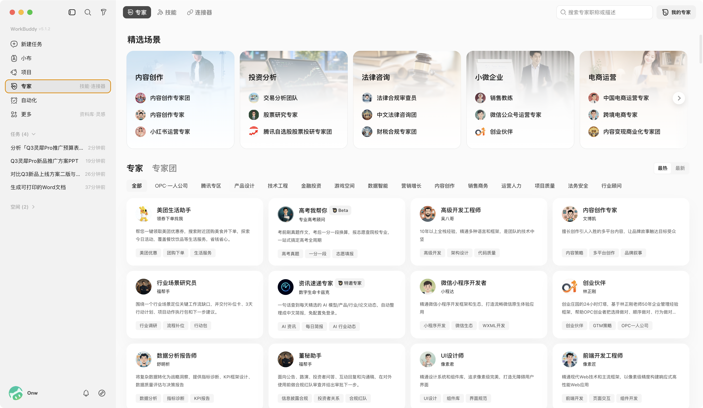
原理：系统将 AI 底层的 System Prompt 替换为专业指令集。
分类体系：
- 精选场景：按业务场景聚合推荐专家和专家团，如内容创作、投资分析、法律咨询、小微企业、电商运营、数据分析等
- 领域分类：覆盖 OPC-一人公司、腾讯专区、产品设计、技术工程、金融投资、游戏空间、数智智能、营销增长、内容创作、销售商务、运营人力、项目质量、法务安全、行业顾问等
- 专家类型：「专家」（单专家模式）和「专家团」（多 Agent 协同模式）
- 支持搜索和创建自定义专家
操作步骤：
- 左侧导航栏 →「专家」
- 通过精选场景或领域分类浏览，也可直接搜索
- 点击专家进入对话，用自然语言描述任务
何时切换专家：
| 判断信号 | 操作 |
|---|---|
| AI 回答缺乏行业术语和规范 | 切换到该行业的职能专家 |
| AI 回答难以直接在工作中使用 | 切换到对应职能专家 |
| 任务涉及法律法规、财务准则等专业领域 | 切换到对应资质专家 |
自定义专家
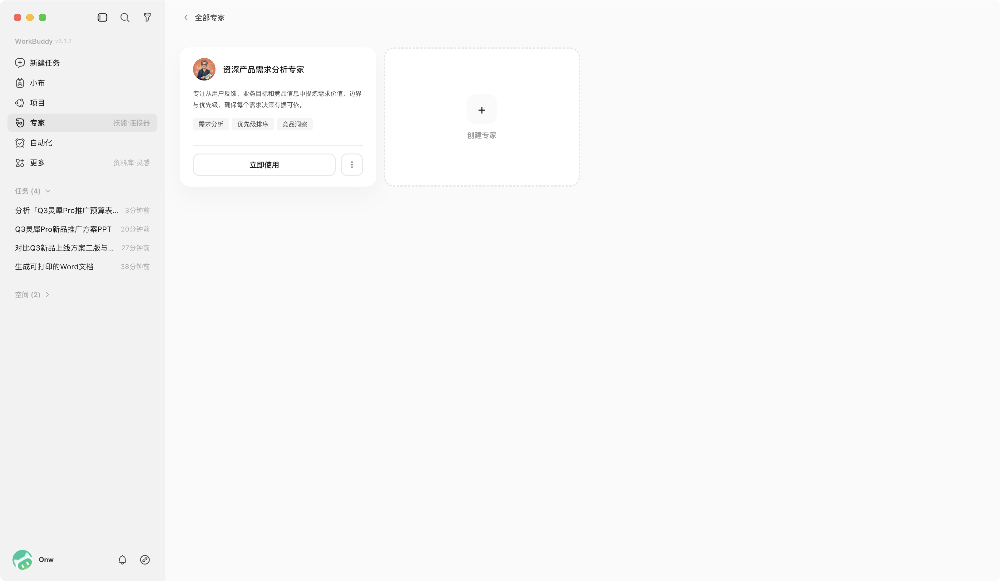
哪些场景值得创建：
| 场景特征 | 示例 |
|---|---|
| 垂直领域反复出现的工作 | 医疗器械注册、跨境电商税务、教育政策研究 |
| 小众专业领域缺少现成专家 | 地方性政策解读、特定细分行业的合规、冷门技术栈架构评审 |
| 个人专业经验希望体系化调用 | 积累的投资分析框架、谈判策略体系、特定疾病的诊疗思路 |
怎么创建：
通过「我的专家」→「创建专家」，系统自动调用 @expert-manager 并预填创建模板。按模板描述专家角色和擅长领域后，系统会根据内容推荐行业分类，核对确认后即可生成。
怎么写好：
- 角色要具体：「擅长会计」不如「擅长制造业成本核算和税务筹划」
- 经验有数字：「审计经验丰富」不如「服务过 5 家上市公司年报审计」
- 关键词要准：行业术语、法规编号、工具名称等尽量写进描述
示例：
帮我创建一个跨境电商税务专家，擅长欧美 VAT 注册申报、Transfer Pricing
合规和跨境股权架构设计。
我的经验是：有 8 年四大税务咨询经验，服务过 30 余家出海企业。
三、路线二：安装技能
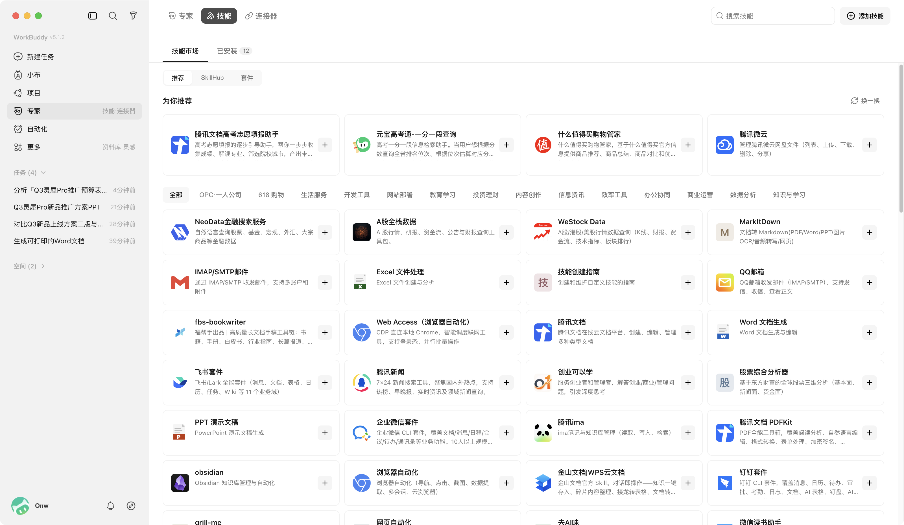
原理：每个技能对应一份操作手册和配套工具。安装后 AI 在对话中自动判断并调用。
常用技能速查：
| 技能名称 | 安装后 AI 新增的能力 |
|---|---|
| xlsx | 读、写、分析 Excel，生成图表，数据透视 |
| 合并、拆分 PDF，提取文字，格式转换 | |
| pptx | 根据文字内容自动排版生成 PPT |
| 联网搜索 | 实时检索互联网最新信息 |
| 图像生成 | 根据文字描述生成配图 |
技能安装 — 三种方式：
方式一：技能市场安装（推荐）
操作路径：左侧「专家」→ 顶部「技能」标签 → 搜索关键词 → 点击安装。
方式二：SkillHub 网页安装
访问 https://skillhub.tencent.com，找到所需技能 → 复制安装指令 → 粘贴到 WorkBuddy 对话框执行。SkillHub 持续收录大量技能，支持中文搜索。
方式三：场景智能推荐
在对话框描述需求，AI 自动推荐相关技能。
自定义技能 — 什么场景和怎么做
什么场景值得做成技能：
| 判断条件 | 示例 |
|---|---|
| 同一个流程反复执行 ≥ 3 次 | 每周汇总数据出报表、每次发版本前跑 checklist |
| 流程有固定输入和输出格式 | 输入原始数据 → 按固定模板输出分析报告 |
| 希望团队统一操作标准 | 新人入职引导、项目立项模板、合同审核流程 |
三种创建方式：
| 方式 | 操作 | 适合场景 |
|---|---|---|
| 查找技能 | 对话框描述需求，系统自动搜索并安装匹配技能 | 快速获取现成能力 |
| 上传技能 | 拖拽上传包含 SKILL.md 的文件夹或 .zip 包 | 已有写好的技能文件 |
| 创建技能 | 对话框调用 @skill-creator，描述需求自动生成 |
从零创建自定义技能 |
怎么写好一个技能描述：
以创建一个「会议纪要整理」技能为例，对比两种写法：
| 写法 | 效果 |
|---|---|
| 「帮我整理会议纪要」 | 系统不知道什么时候触发、怎么整理、输出什么 |
| 「当用户上传 .mp3 录音文件并说『整理纪要』时，按以下步骤处理：① 转写语音内容 ② 提取决议事项、待办任务和参会人发言要点 ③ 按『会议主题 / 决议 / 待办 / 备注』四块输出」 | 触发条件、处理步骤、输出格式都明确，系统可精准执行 |
写好一个技能描述，关键是三个要素：
- 触发条件要具体：什么情况、什么关键词触发
- 步骤要分步：每一步做什么、产出什么
- 输出要有格式：表格、分块、指定字段等
示例 — 周报技能：
创建时输入的指令：
创建一个技能：当用户说「汇总本周工作」时，从最近 5 天的对话记录中
提取已完成事项、关键数据和待推进事项，按以下三块输出：
① 本周成果（每项一行）
② 关键数据（如有）
③ 下周计划（每个待办一行）
创建完成后，使用时只需在对话中说「汇总本周工作」，技能自动按上述框架生成周报。
自己编写 SKILL.md 文件
如果对技能逻辑有更精细的控制需求，可以直接编写 SKILL.md 文件，然后通过「上传技能」导入。
一个最小的 SKILL.md 文件结构：
---
name: my-skill
description: 一句话描述这个技能做什么、何时触发
---
# 技能名称
简要说明这个技能的作用。
## 触发条件
当用户提到 XX 关键词或上传 XX 类型文件时触发。
## 执行步骤
1. 第一步：做什么
2. 第二步：做什么
3. 第三步：输出什么
## 示例
输入示例：XXX
期望输出：XXX
关键部分解释：
name：技能的唯一标识，建议英文小写加连字符description：决定 AI 在什么场景下调用该技能，写清楚触发条件- 正文中写清楚步骤和预期输出，越具体越好
建议：先通过「创建技能」生成一版，然后导出 SKILL.md 文件查看结构，在此基础上手动修改。
使用注意事项：
- 不用的技能及时卸载，避免工具列表过长
- 同类型技能只保留一个，避免 AI 判断混淆
- 新装技能先用小任务测试，确认效果后再用于正式任务
四、路线三：配置连接器
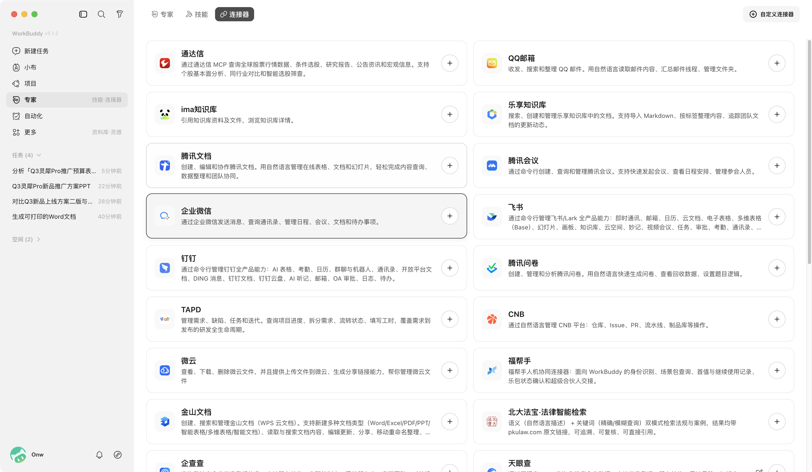
连接器的作用：让 AI 可以直接读取和操作外部系统数据。比如配置 QQ 邮箱后，AI 能帮您搜索和回复邮件；配置腾讯文档后，AI 能直接读写文档内容。
第一步：使用现成的连接器
连接器页面列举了已集成的服务，点击授权即可使用：
| 类别 | 代表连接器 |
|---|---|
| 腾讯生态 | QQ 邮箱、腾讯文档、腾讯会议、企业微信、腾讯乐享、TAPD 等 |
| 第三方平台 | 飞书、钉钉、金山文档、北大法宝等 |
这些连接器之所以扫码或登录就能用，是因为服务提供方已经搭建并维护了对应的 MCP Server。用户不需要关心 mcp.json 怎么写、Server 怎么部署——只需授权，WorkBuddy 就能通过提供方事先搭好的桥梁连接到目标系统。
第二步：没有现成的怎么办 — 自定义连接器
如果需要的系统不在列表中（如公司内部 OA、自建数据库），通过「自定义连接器」进入 MCP 服务管理进行配置。
理解一个关键概念：AI 不直接连外部系统。中间需要一个 MCP Server，它把外部系统的能力包装成一个个标准化的工具接口，AI 通过这些接口来操作系统。mcp.json 文件则记录了 MCP Server 的地址和认证方式，告诉 WorkBuddy 怎么连接它。
两种方式找 MCP Server：
| 方式 | 说明 | 举例 |
|---|---|---|
| 用别人写好的 | 去 MCP Hub（腾讯云 MCP 广场）找到需要的服务，复制安装指令，粘贴到 mcp.json 就行 | 想要连 MySQL 数据库，MCP Hub 上已有现成的 MySQL MCP Server |
| 自己建一个 | 公司内部系统没有现成的 MCP Server，需要自行开发一个，然后在「配置 MCP」中填写其地址和认证信息 | OA 审批系统、内部 CRM、自建数据平台 |
自建 MCP Server 需要准备好：
- 一个已运行的 MCP Server，提供访问地址
- 认证方式（API Key / OAuth 等）
- 明确开放哪些操作（不开放全部能力，按需给权限）
MCP Hub 地址：https://cloud.tencent.com/developer/mcp，收录大量 MCP 服务。
安全机制：
- 所有授权可随时撤销
- 删除文件等敏感操作需二次确认
- 授权遵循最小化原则
五、三条路线的选择参考
判断逻辑：
├── 专业深度不够 → 切换专家
├── 缺少具体能力 → 安装技能
└── 无法访问系统 → 配置连接器
组合示例：
法务专家 + PDF 技能 → 审合同
数据分析技能 + 腾讯文档连接器 → 自动出报表
六、单专家与专家团
什么时候用哪个：
| 你的任务 | 用单专家 | 用专家团 |
|---|---|---|
| 「审这份合同有什么风险」 | 单专家即可 | 没必要 |
| 「帮我做一份完整的商业计划书」 | 不够 | 用专家团 |
单专家是找一个专业角色咨询，专家团是启动一个由团长协调的多角色团队。
单专家：怎么用，以法务专家为例
- 在专家页面搜索「法律合规审查员」这类法务相关专家，进入对话
- 直接描述需要审查的内容，如果有文件直接上传
- 专家回复后可以追问：「这个条款如果对方不接受，有没有替代方案？」
- 满意后保存对话记录，下次类似场景可复用该专家
这个流程适用什么场景：合同条款咨询、政策合规确认、劳动法问题 —— 只有一个专业领域，不需要别的角色参与。
专家团：怎么用，以「内容分发」为例
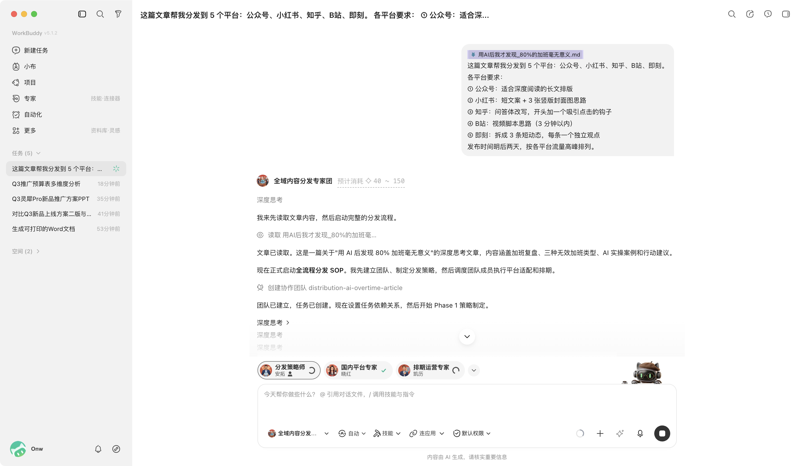
您是一个内容创作者，刚写完一篇干货文章，想让它在 5 个平台（公众号、小红书、知乎、B站、即刻）同步发布。每个平台文案风格、封面尺寸、最佳发布时间都不一样，一个个手动适配太费时间。
第一步：在专家团页面搜索「内容分发」相关的专家团，进入对话。
第二步：上传文章，描述目标：
这篇文章帮我分发到 5 个平台：公众号、小红书、知乎、B站、即刻。
各平台要求：
① 公众号：适合深度阅读的长文排版
② 小红书：短文案 + 3 张竖版封面图思路
③ 知乎：问答体改写，开头加一个吸引点击的钩子
④ B站：视频脚本思路（3 分钟以内）
⑤ 即刻：拆成 3 条短动态，每条一个独立观点
发布时间明后两天，按各平台流量高峰排列。
第三步：主理人调度团队——国内平台专家、海外平台专家分别适配各自平台的文案和格式，排期专家规划发布时间表，并行执行。
第四步：拿到分平台的内容包 + 排期表。可以追问：「小红书封面图的风格能不能换成极简设计？」
这个流程适用什么场景：一篇内容要发多个平台、多语言内容本地化分发、新品上市跨渠道宣发 —— 内容主已经做好，需要专家团帮你铺到对的平台、对的时间。
一次实操走下来，您学到的不是概念，是方法：
- 遇到单领域问题 → 搜对应专家 → 描述问题 → 追问直到满意
- 遇到跨领域项目 → 搜专家团 → 描述完整目标和约束 → 等团长整合 → 追问细节
- 判断不了的，先用单专家试一次，专家会告诉你「这个建议还需要 XX 领域的专业意见」，你就知道该用专家团了
OPC 一人一公司
OPC（One-Person Company）是把专家和专家团系统化使用的典型场景。核心理念：一个人做决策和创意，AI 专家团补位所有专业短板。
入门第一步：找对你的组合
| 您的身份 | 您最缺什么 | 推荐专家组合 |
|---|---|---|
| 独立开发者 | 产品、营销、法务 | 产品战略 → 技术架构 → 法律顾问 → 内容创作 |
| 自由职业者 | 商务、合同、财务 | 品牌策略 → 法律顾问 → 财务规划 |
| 小微创业者 | 各领域都涉及但不深 | 内容创作 → 财务规划 → SEO 策略 |
入门第二步：按周建立节奏
不是一次性找完所有专家，而是像真实团队一样排期：周一定方向（产品战略）→ 周三做执行（技术架构/内容创作）→ 周五做审查（法律/财务）。每周固定节奏，用熟了之后每个专家了解您的背景，无需每次从头解释。
入门第三步：从单场景跑通再扩展
先专注一个场景（比如只用内容创作专家做推广素材），跑通后确认「这个专家懂我的业务了」，再横向加入第二个场景（比如加入法律顾问审合同）。
别人已经跑通的案例：
| 案例 | 做法 | 效果 |
|---|---|---|
| 社群商业 OPC | 社群创始人一人+6个AI角色，覆盖产品、技术、运营、增长、内容、安全 | 每周25-30小时跑通完整社群商业 |
| 4小时工作制 OPC | IP创业者设5个AI员工：总指挥/撑伞部/内容部/分盟部/政委 | 日工作压缩到4小时，月成本≤3000 |
| 知识变现 OPC | 15篇笔记→一人公司专家团（资源盘点/利基定位/价值主张）→ 可执行方案 | 信息从「散落」变成「可落地的知识产品」 |
真实难度——这些坑已经有人替您踩过了：
| 常见坑 | 解法 |
|---|---|
| Skill 装太多反而混乱 | 每个业务线只留 1-2 个核心 Skill |
| 多 Agent 同时跑，结论互相矛盾 | 您做最终决策者，AI 提供选项和分析 |
| 头两个月伺候工具比手工还累 | 先跑通一个场景，再横向复制 |
| AI 输出有「AI 味」，改起来更花时间 | 分步给反馈：方向→初稿→具体修改意见→再改 |
前两周是磨合期，会累。跑顺之后才真正提效。
核心要点回顾
- 专家：解决专业深度不足。入口：左侧「专家」→「专家」标签。高频重复的专业工作可创建自定义专家沉淀
- 技能：解决能力缺失。入口：左侧「专家」→「技能」标签。重复 ≥3 次的流程值得固化自定义技能
- 连接器：解决系统隔离。入口：左侧「专家」→「连接器」标签
- OPC：专家和专家团的终极应用场景，人来决策、AI 补位专业短板
- 写好自定义的关键：角色具体、描述真实、使用关键词
实战挑战（5 分钟）
从日常工作中选一个你重复做过3次以上的流程，试着把它做成自定义技能。做完后想想：这个技能和直接写 Prompt 有什么区别？在什么情况下值得固化？
4.3运行升级：让 AI 替您值守
读完这节，你能回答：
- 怎么配置远程接入渠道并验证它能用？
- 怎么创建并启用一个定时自动化任务？
- 远程即时处理和定时自动执行分别适合什么场景？
一、远程控制：多种接入渠道
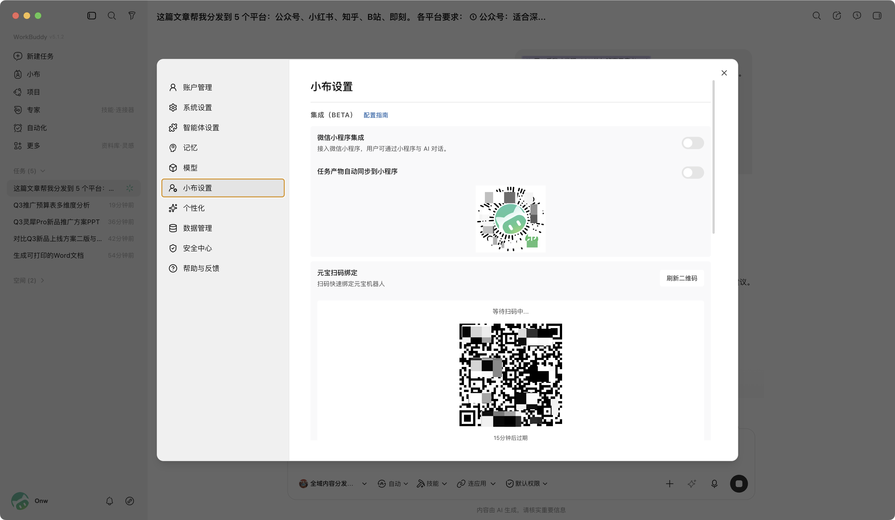
底层逻辑：手机端发指令 → AI 在云端或本地电脑执行 → 结果回传手机。
两种执行模式
先理解远程控制怎么"跑起来"：
| 模式 | 电脑要求 | 数据存放 | 适合 |
|---|---|---|---|
| 云端沙箱 | 无需电脑开机 | 云沙箱，任务结束清除 | 外出通勤、轻量任务（写文档、生成报告） |
| 本机远程 | 电脑需开机且 WorkBuddy 在线 | 数据留存本地 | 需操作本地文件、读取电脑资料 |
怎么选：人在外面、电脑不方便开机时用云端沙箱；需要读取电脑里的文件时用本机远程。
真实应用场景
场景一：通勤路上准备会议材料 云端模式
早上坐地铁，突然想到下午会议还差一份方案。掏出手机，打开 WorkBuddy 微信小程序，语音说：「基于上周的项目进度，生成一份 Q2 复盘 PPT，包含业绩概览、区域对比、问题分析三部分」。地铁到站时，AI 已生成初稿框架，到公司稍作调整即可使用。
场景二：外出巡检自动生成报告 云端模式
在工地、门店、展会巡检时，拍摄现场照片，上传到小程序说：「根据这些照片生成一份巡检报告，标注发现的问题」。AI 自动分析图片，生成报告的初稿，返程路上审核补充细节，到公司即可提交。
场景三：紧急远程调取电脑文件 本机模式
在外面见客户，对方临时要一份合同模板。手机微信上对 WorkBuddy 说：「把桌面上『标准合同模板 v3』发到我的微信」。前提是电脑在家开机且 WorkBuddy 在线，几分钟后文件出现在手机对话框，直接转发给客户。
场景四：会议中快速出纪要框架 云端模式
会议进行中，不方便在电脑上敲字。手机发送：「整理刚才讨论的要点，列出决议事项和待办任务」。AI 先给出结构化框架，会后补充细节即可定稿。
远程场景适合快速产出初稿、调取文件、搭建框架等任务，复杂内容的最终定稿仍需人工把关。
渠道全景对比
| 渠道 | 入口 | 配置方式 | 适用人群 |
|---|---|---|---|
| 微信小程序 | 微信小程序入口 | 微信授权登录 | 不想装 App 的用户 |
| 微信助理 | 桌面端设置页 | 手机微信扫码绑定 | 个人用户（最常用） |
| 元宝 | 元宝客户端 | 账号登录授权 | 腾讯元宝用户 |
| 企业微信机器人 | 企微管理后台 | 获取机器人凭证后填入桌面端 | 企业团队 |
| 企业微信客户端 | 企微管理后台配置后直接使用 | 配对机器人凭证 | 已在企微生态的团队 |
| 移动端 App | 应用市场 | 微信登录（需与桌面端同一账号） | iOS / Android 用户 |
| 飞书 / 钉钉 / QQ | 对应平台的集成入口 | 平台各自授权配置 | 对应平台企业用户 |
推荐优先配置：微信小程序、微信助理、元宝，体验最顺畅。
配置入口：桌面端左下角头像 → 设置 → 小步设置 → 配置对应渠道。
电脑防休眠设置：使用本机远程模式时，电脑需保持开机且 WorkBuddy 不休眠。macOS：系统设置 → 电池 → 睡眠设为「从不」；Windows：控制面板 → 电源选项 → 睡眠设为「从不」。关闭显示器不影响远程任务执行。
安全机制：远程指令经安全网关过滤；删除文件等高危操作需二次确认；云端沙箱各任务间互相隔离，数据不互访。
二、定时自动化
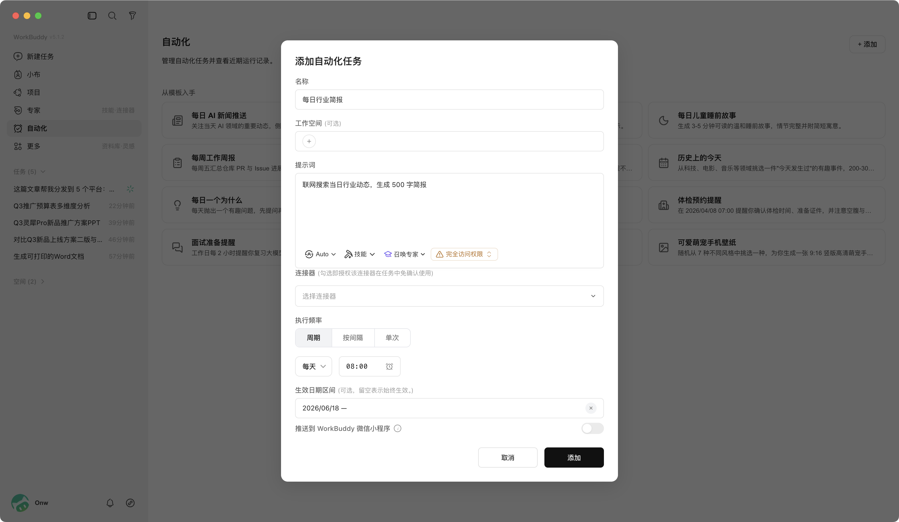
底层逻辑：设置触发规则 + 编写任务指令 → 系统按时自动执行 → 可选推送结果至 WorkBuddy 微信小程序。
真实应用场景
场景一：每日行业简报
每天早上到公司，一份当日行业动态简报已经在桌面上等您。在自动化中配置：「每个工作日 8:00，联网搜索当日行业动态，生成 500 字简报，保存到桌面/日报/文件夹」。人还在通勤路上，简报已经生成好了。
场景二：每周自动生成周报
每周一早上手动汇总数据、写周报，耗时且容易遗漏。配置为：「每周一 9:00，读取项目文件夹中上周的工作记录，汇总已完成事项、关键数据和待推进任务，按固定模板输出周报」。周一到公司，初稿已在桌上，仅需过一遍确认即可提交。
场景三：定期备份重要文件
日常工作中手工会忘记备份，数据丢失风险大。配置为：「每月 1 日 10:00，将桌面/项目/文件夹中的所有文档自动备份到指定备份目录」。设置一次，长期运行，不再担心遗漏备份。
自动化生成的是初稿和框架，最终内容仍需人工确认。建议先手动触发一次验证效果，确认输出符合预期后再开启定时。
需要配置哪些内容
| 配置项 | 说明 | 填写示例 |
|---|---|---|
| 名称（必填） | 区分不同任务 | 「每日行业简报」 |
| 工作空间（可选） | 任务执行的工作目录 | 桌面/日报/ |
| 提示词（必填） | 任务目标和输出要求 | 「汇总昨日行业新闻，500 字以内」 |
| 执行频率 | 周期 / 按间隔 / 单次 | 每天 9:00 |
| 生效日期区间（可选） | 任务起止日期，留空表示始终生效 | 2026-01-01 至 2026-12-31 |
| 技能 / 连接器 | 启用的技能及免确认调用的连接器 | 联网搜索 + QQ邮箱 |
| 推送到小程序（可选） | 完成后推送至 WorkBuddy 微信小程序 | 开启 |
注意事项：
- 首次创建后建议手动触发一次测试，验证输出是否符合预期，不满意则调整提示词后重试
- 同一时段避免配置过多任务，防止排队积压，建议错开 5-10 分钟
- 自动化依赖电脑在线，请确保电脑在任务触发时刻处于开机且 WorkBuddy 运行状态
三、远程与定时的组合策略
远程和定时不是二选一，而是互补的关系。理解了这种关系，您就能构建一套"人不在也能运转"的工作流。
各自擅长什么：
| 方式 | 擅长 | 不擅长 |
|---|---|---|
| 远程即时处理 | 突发需求、临时调取文件、灵感来了立刻执行 | 每日固定节奏的重复性任务 |
| 定时自动执行 | 固定周期的信息采集、报告生成、数据备份 | 需要你实时判断和调整的任务 |
场景决策指南：
| 工作场景 | 推荐方式 |
|---|---|
| 出差途中收到临时需求 | 远程即时处理 |
| 每日简报和周报 | 定时自动执行 |
| 周末临时调取数据 | 远程即时处理 |
| 月度备份和归档 | 定时自动执行 |
| 灵感迸发想做竞品分析 | 远程即时处理 |
| 每周五的客户数据汇总 | 定时自动执行 |
| 突发的工作群通知处理 | 远程即时处理 |
进阶玩法 — 两者串联：
远程和定时可以串联使用，形成更高效的工作流。例如：
下班前用手机发送指令：「今晚 22:00 自动汇总今天所有群聊中的待办事项，生成清单推送到微信小程序」。人在家里，到点收到整理好的待办清单。
这是"远程触发 + 定时执行"的组合：远程设定任务，到了指定时间自动跑。
有固定周期的、结果可预期的用定时；突发性的、需要灵活判断的用远程。
核心要点回顾
- 多种远程渠道覆盖个人和企业全场景，微信助理扫码即用
- 小程序和 App 支持云端沙箱（无需电脑开机）和本机远程双模式
- 电脑防休眠是所有本机远程模式的前提，使用前务必检查电源设置
- 定时自动化七个配置要素：名称、工作空间、提示词、执行频率、生效日期、技能/连接器、结果推送
实战挑战（5 分钟）
用手机配置一种远程渠道，然后离开电脑去做别的事。途中给 WorkBuddy 发一条指令，看看结果。想想：远程和定时分别适合你工作中的哪些场景？
4.4资产升级：让能力越用越强
读完这节，你能回答：
- 怎么在灵感模块里收藏模板并一键复刻？
- 怎么走完资料库「查找 → 引用 → 加工 → 存回」的完整流程？
- 个人经验怎么变成团队共享的资产？
一、使用社区模板快速启动
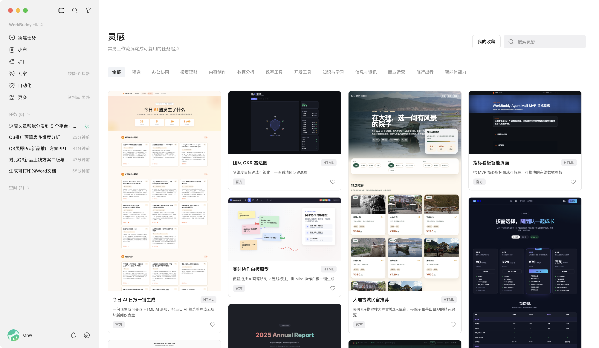
能帮你什么：灵感模块收录了社区验证过的任务模板，将复杂的提示词编写和技能组合打包为一键可用的方案，无需从零摸索。
模板能帮你做什么
场景一：不知道某个任务怎么写提示词
想做一份竞品分析报告，但不知道该让 AI 从哪些维度展开。在灵感模块搜索「竞品分析」，找到社区验证过的模板，一键加载预配好的提示词和关联技能（如联网搜索），直接开始对话。
场景二：想了解一个功能的最佳用法
刚装上 pptx 技能，不确定怎么描述需求才能生成满意的 PPT。搜索「PPT 生成」，找到对应的模板，不仅能看到案例预览，还能看到这个技能搭配了什么样的提示词最有效。
场景三：复杂任务不想每次从头描述要求
每次写周报都要重复交代"按本周成果、关键数据、下周计划三块输出，每项一行，附完成百分比"，很繁琐。收藏一个「周报生成」模板后，下次直接调用，框架和格式都在，只需告诉它本周做了什么。
模板提供什么
每个模板包含：
- 案例预览：模板实际产出的效果示例，帮您判断是否适用
- 关联技能：该任务需要安装哪些技能，一键加载
- 使用说明：功能介绍和操作指引
- 一键复刻：自动预填提示词和技能配置
提示：遇到新任务时先去灵感模块搜一搜，社群里可能已经有人踩过坑、调好了最佳方案。
二、资料库：建立知识取用闭环
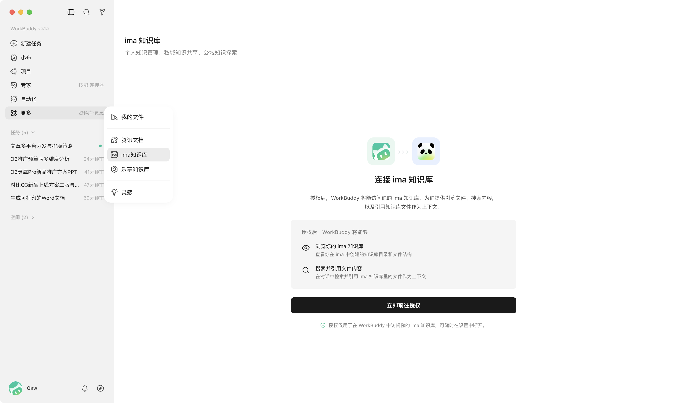
能帮你什么：让文档资料成为 AI 回答的依据。资料库接好后，AI 不再凭"感觉"回答，而是基于您指定的文档给出有据可循的结果。
真实应用场景
场景一：新人入职培训
将员工手册、操作规范、常见问题 FAQ 等文档接入资料库。新人提问：「请假流程是什么？」AI 从员工手册中检索相关内容，给出准确流程和注意事项，而不是给一个"可能是这样"的通用回答。
场景二：合同条款审查
将公司标准合同模板、行业法规文件接入资料库。上传一份待审合同，对 AI 说：「对比标准模板和最新法规，检查这份合同有哪些条款不符合要求。」AI 基于资料库中的模板和法规逐条比对。
场景三：历史项目复盘
将过去做过的项目总结、复盘报告接入资料库。做新项目时问 AI：「参考历史项目经验，这类项目的常见风险点和应对方案是什么？」AI 从历史文档中提取规律性结论。
支持的数据源
| 类型 | 适合存放 |
|---|---|
| 本地文件 | 电脑上的文件、文件夹 |
| 腾讯文档 | 在线协作文档 |
| ima 知识库 | 个人、团队或订阅知识库 |
| 乐享知识库 | 企业级知识管理平台 |
怎么用
操作流程：找文档 → 引用到对话 → AI 处理 → 产物存回。
使用时先在资料库中定位目标文档并添加到当前任务，文档内容即被注入对话上下文。然后在对话框输入指令，AI 基于引用文档回答。生成的产物可存回资料库，形成知识积累的闭环。
关键提示：
- 对话中临时上传的文件仅当前有效，长期反复使用的资料请接入资料库，而非每次重新上传
- 腾讯文档能打开的 Word、Excel、PPT、PDF 等本地文件也可直接引用
三、团队共享：个人经验转为组织资产
能帮你什么：一个人沉淀的方法，变成团队可复用的标准，不让经验跟着人走掉。
三个共享层级
个人层：从收藏到复刻
小王发现了一个「竞品分析」模板，一键复刻后生成了第一份分析报告。尝到甜头后，他又陆续收藏了「PPT 大纲」「会议纪要」「周报汇总」等模板。一个月后，写方案、出报告、做纪要都有了固定框架，不用每次从零开始。这一步的核心：先让自己尝到效率提升的甜头，才有力气带动团队。
团队层：统一输出标准
组里五人各自审合同，格式不统一、标准不一致。小李把自己反复调试好的合同审核提示词存为自定义技能，分享到团队。此后所有人审合同时加载同一套提示词，按相同的维度检查——条款完整性、法律风险、商务合理性——输出格式和判断标准完全统一。这一步的核心：把一个人的最优实践，变成团队的操作规范。
组织层：知识沉淀到资料库
客户退款 SOP 存在某同事的电脑里，他休年假时其他人翻半天找不到。把制度文件、产品手册、历史项目经验接入资料库后，任何人问 AI「客户退款流程是什么」，AI 都从资料库中的 SOP 文档检索出准确流程。老员工离职，知识留下来。这一步的核心：知识不再依附于个人，而是成为组织可检索的资产。
什么值得共享
| 内容 | 共享方式 | 效果 |
|---|---|---|
| 反复调试好的提示词 | 存为自定义技能或模板 | 团队无需每次从头写 |
| 行业法规、公司制度 | 接入资料库 | 全员检索同一份权威文档 |
| 历史项目经验和复盘 | 存回资料库 | 新项目可参考历史结论 |
| 新人培训 FAQ | 接入资料库 | 新人自助获取答案 |
从哪个层级开始
不需要一步到位做到组织层。建议从个人层起步：先积累几个常用的模板和技能，让自己的效率上去。当你感受到价值后，挑一个团队成员最头疼的重复场景，把解决方案分享出去。一个场景跑通了，再横向扩展。
提示：共享的价值在于每个优化是否被真正用起来，不在一次铺开多大。
核心要点回顾
- 灵感模块：浏览 → 做同款 → 不断积累，形成个人快速启动工具箱
- 资料库闭环：找文档 → 引用对话 → AI 加工 → 产物存回，形成知识循环
- 团队共享：个人经验 → 模板分享 → 资料库接入 → 组织沉淀，从个人层起步逐步向上
实战挑战（5 分钟）
去灵感模块找一个你能用的模板，跑一次任务。然后想想：你的工作中还有哪些反复从零开始的场景，值得存成模板？
4.5团队协作：多人协同工作
读完这节，你能回答：
- 怎么创建项目并邀请成员加入？
- 怎么在项目看板中创建和分配任务？
- 怎么用项目资产库共享文件？
- 四种权限角色有什么区别？各自适合什么场景？
一、项目功能解决什么问题
项目功能将任务管理、文件共享、AI 配置整合在同一工作空间。每个项目可以独立配置自己的指令、专家、技能和连接器，让不同项目的 AI 行为互不干扰。
对比一下：
| 传统方式的问题 | 项目功能的解决方案 |
|---|---|
| 任务通过微信群分配，进度不透明 | 计划和任务看板，状态一目了然 |
| 文件散落各人电脑，版本混乱 | 资产库统一存储，团队共享 |
| 不同项目用同一个 AI，回答互相串 | 项目独立配置指令、专家、技能，互不干扰 |
| 项目动态靠口头传达，信息滞后 | 消息中心自动推送变更通知 |
真实应用场景
场景一：新项目启动，快速搭好协作框架
产品经理发起一个新项目，邀请设计师、开发、测试三人加入。在计划和任务看板将需求分解、指派负责人、设截止时间。全队在一个空间里看到所有任务和进度，不用再去翻群聊记录。
场景二：不同项目配置不同的 AI 能力
同一个团队可能同时跑多个项目。项目 A 是 Java 后端开发，需要配技术架构专家和代码审查技能；项目 B 是产品设计，需要配 UX 专家和竞品分析技能。每个项目的 AI 配置独立，不会互相串扰，切换到哪个项目就用哪个项目的 AI。
场景三：团队共同用 AI，结论一致不走偏
开发问 AI「这个接口的报错怎么处理」，测试也问了同样的问题。在项目协作对话中，所有人共享同一个 AI 上下文，AI 基于项目文档和历史对话回答，结论统一。
场景四：项目收尾，一键沉淀所有产出
项目结束时，对话中生成的设计稿、测试报告、部署文档全部保存在项目资产库中。下一个类似项目启动时，直接复用资产库中的模板和经验，新人也能快速了解历史背景。
二、功能模块
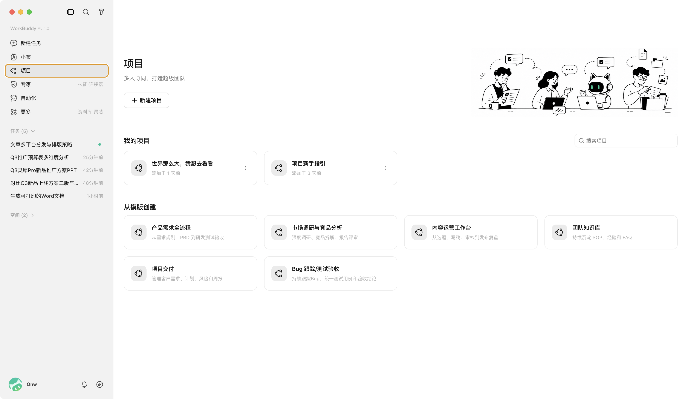
任务与协作：
| 模块 | 做什么 | 什么时候用 |
|---|---|---|
| 计划与任务 | 创建任务、分配负责人、跟踪进度 | 项目启动后分解任务，跟踪执行 |
| 动态 | 项目活动流，变更自动记录 | 了解项目近期发生了什么 |
| 资产库 | 统一存储文件、管理版本 | 项目文档沉淀和共享 |
AI 项目配置：每个项目可独立配置以下内容，切换项目即切换 AI 行为：
| 配置项 | 作用 |
|---|---|
| 指令 | 定义项目的 AI 角色和回答风格 |
| 专家 | 为项目指定专属专家 |
| 技能 | 为项目加载特定技能 |
| 连接器 | 为项目接入外部系统 |
| 自动化 | 为项目设置定时任务 |
三、怎么用
快速起步 — 借鉴模板
创建项目时可以从模板快速起步，系统预配了该场景下的 AI 配置和任务框架。您也可以参考这些模板的设计思路：
- 产品需求全流程
- 市场调研与竞品分析
- 内容运营工作台
- 团队知识库
- 项目交付
- Bug 跟踪 / 测试验收
选一个最接近的模板，指令、专家、技能、任务结构都预配好了，按实际需求微调即可，无需从零搭建。
一个项目的标准流程：
从模板创建或自定义创建 → 邀请成员加入，分配权限 → 根据项目类型调整 AI 配置（指令、专家、技能等）→ 在计划和任务看板分解工作、指派负责人 → 团队在项目中与 AI 协作，产出的文件存入资产库 → 项目结束，知识沉淀到下个项目复用
成员邀请怎么做：
每个项目会生成一个专属邀请链接。将链接分享给团队成员，对方点击即可加入项目，无需手动搜索账号。加入后根据分配的角色（管理员/成员/访客）自动获得对应权限，可直接看到全部任务看板、资产库和协作对话，无需额外同步。
此外，项目产出的报告、PPT、数据表等也可以直接生成二维码或链接分享到微信，接收方扫码即可在线预览，无需安装 WorkBuddy。
举个例子：
小张的团队接到任务：三天内做一份行业竞品分析报告。换作以前，他的流程是：建 Excel 分工 → 每人各自收集信息 → 汇总到一个 Word → 反复改格式和结论 → 发给领导。
这次他用「市场调研与竞品分析」模板创建项目，看看具体发生了什么：
① 创建项目，模板已预配好一切
小张选模板创建后，系统自动配好了：竞品分析专家（角色已配置）、联网搜索技能（已装载）、任务看板已拆为「确定竞品名单 → 产品功能对比 → 定价分析 → 输出报告」四列。他从零搭建的活全跳过了。
② 邀请成员，分派任务
小张邀请小李和小王加入项目。在任务看板中，小李负责"产品功能对比"，小王负责"定价分析"，截止日期两天后。所有人打开项目就能看到自己的任务，不用在群里追着问"你做到哪了"。
③ 团队并行与 AI 协作
小李在项目中问 AI：「对比 A/B/C 三家产品的核心功能，列差异表」。AI 基于项目中预配的竞品分析专家角色和联网搜索技能，给出结构化的对比表格。小王同时在做定价分析，两人的 AI 对话互不干扰，但产出的文件都在同一个项目的资产库里。
④ 产出沉淀，下次复用
第三天，三份分析在资产库中汇总，小张让 AI 整合成最终报告。项目结束后，这个项目的配置（专家 + 技能 + 任务结构）原封不动保留。下个季度再做竞品分析，直接复用这个项目模板，改个名字就能开工。
四、权限角色
项目支持四种角色，按权限从高到低：
| 角色 | 能做什么 | 不能做什么 | 适用谁 |
|---|---|---|---|
| 创建者 | 编辑项目、管理成员、删除项目 | — | 项目发起人 |
| 管理员 | 管理任务和成员 | 删除项目 | 核心成员、分担管理的人 |
| 成员 | 查看内容、执行任务、上传文件 | 增删成员、改项目设置 | 项目执行者 |
| 访客 | 仅查看 | 执行操作、上传文件 | 外部合作方、临时参与者 |
怎么分配：
- 创建者通常是项目发起人，只有一人。创建后立即指定一名管理员作为备份，避免创建者休假时全员卡住
- 管理员给团队中最信任的核心成员，能帮你维护任务和成员，但不会意外删除整个项目
- 成员给日常执行者，够用即可——能看到任务、干活、上传文件，不会误改项目结构
- 访客给外部合作的客户或供应商，让他们能看进度但不能操作，防止误操作
一个典型项目的配置：创建者 1 人 + 管理员 1-2 人 + 成员若干 + 访客（按需）。不是所有人都是管理员，按最小权限原则分配。
核心要点回顾
- 项目功能将任务管理、文件共享、AI 配置整合在同一空间，每个项目可独立配置指令、专家、技能和连接器
- 计划和任务看板实现任务可视化分配与跟踪，全队一张图看清进度
- 资产库保障文档统一存储和版本一致，项目结束一键沉淀
- 权限角色精细控制：创建者、管理员、成员、访客各有边界
实战挑战（5 分钟）
创建一个测试项目，邀请一位同事加入。体验后想想：你们团队目前的协作方式（群聊/邮件/共享文档）和项目空间比，差在哪？哪种任务最值得迁移过来？
界面导航说明
| 导航区域 | 菜单项 | 对应功能 |
|---|---|---|
| 左侧主菜单 | 新建任务 | 快速启动新对话任务 |
| 左侧主菜单 | 向导 | 引导式完成复杂工作流 |
| 左侧主菜单 | 项目 | 团队协作和项目管理 |
| 左侧主菜单 | 专家 | 专家 / 技能 / 连接器（三个标签页） |
| 左侧主菜单 | 自动化 | 定时自动化任务管理 |
| 左侧主菜单 | 更多 → 灵感 | 社区模板浏览和收藏 |
| 左侧主菜单 | 更多 → 资源 | 资料库和数据源管理 |
功能速查
| 您的需求 | 对应功能 | 操作入口 |
|---|---|---|
| AI 回答不够专业 | 切换专家 | 左侧「专家」→「专家」标签 |
| 跨领域复杂项目 | 专家团 | 左侧「专家」→ 专家团模式 |
| AI 缺少某种能力 | 安装技能 | 左侧「专家」→「技能」标签 |
| 生成配图 | 安装图像生成技能 | 对话中直接描述需求 |
| 固化重复操作流程 | 自定义技能 | 「技能」标签 → 创建技能 |
| AI 无法访问外部系统 | 配置连接器 | 左侧「专家」→「连接器」标签 |
| 离开电脑后遥控 AI | 远程控制 | 左下角头像 → 设置 → 小步设置 |
| 定时重复任务 | 自动化 | 左侧「自动化」 |
| 快速启动常用任务 | 灵感模板 | 左侧「更多」→「灵感」 |
| AI 回答需要依据 | 资料库 | 对话中引用已接入资料 |
| 团队协同工作 | 项目 | 左侧「项目」 |
本章总结
| 小节 | 要点 |
|---|---|
| 4.1 技术概念速览 | 一次看懂 MCP、Skill、RAG、专家模式四个核心概念 |
| 4.2 能力升级 | 用专家 / 专家团切换角色、装技能补能力，让 AI 更专业 |
| 4.3 运行升级 | 远程控制 + 自动化，让 AI 离开你的电脑也能替你值守 |
| 4.4 资产升级 | 自定义技能、沉淀知识库，让能力越用越强 |
| 4.5 团队协作 | 用「项目」让多人与 AI 在同一空间协同工作 |
掌握这些进阶能力，WorkBuddy 就从「单次帮手」升级为「持续在线的工作伙伴」。
本章你已经解锁了 WorkBuddy 的进阶能力；下一章，我们聊聊安全与合规——能力越大，越要守住边界，才能放心地把更多工作交给 AI。
建立数据安全、账号安全与高风险边界三道防线，让每一次输入、上传、授权和输出都更安全、更可控。
AI 越强大，边界越重要。本章不讲空泛的合规条款，只讲真问题：什么场景该用 AI、给他多大权限、回答能信几分、五个入口怎么守住。
WorkBuddy 平台安全机制 — 平台的保护不等于您的免责
在了解您需要注意什么之前，先认识 WorkBuddy 从架构层面已部署的保护措施。这些机制是第一条防线，但任何技术防线都无法覆盖所有人为决策场景——安全是平台与用户共同分担的责任。
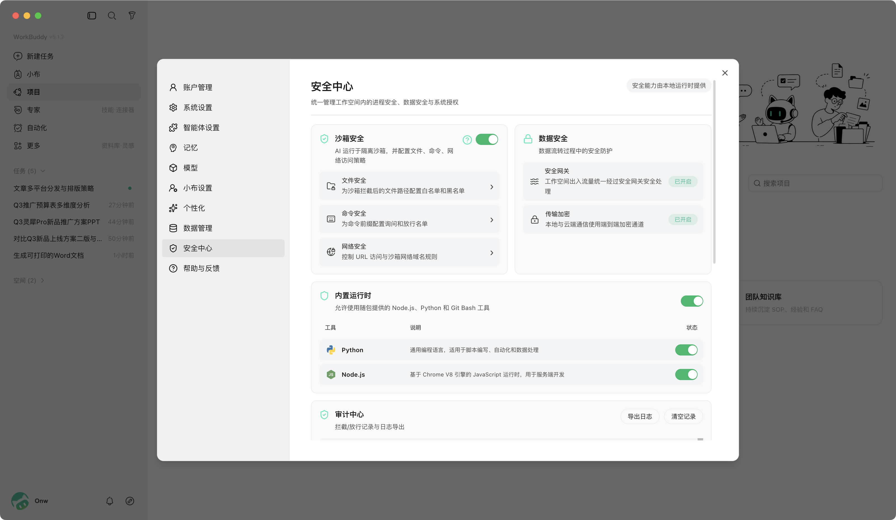
| 安全机制 | 具体做了什么 |
|---|---|
| 本地执行 | 文件处理在本地完成，Excel、PDF、合同等原始文件不离开电脑。需调用云端大模型时，仅传输必要指令和最小化上下文 |
| 沙箱隔离 | 所有 AI 操作在独立隔离环境运行，文件、进程、网络三维隔离。即使 AI 被诱导执行高危指令，也无法访问沙箱外的系统资源 |
| 执行前确认 | 每个任务启动前弹出执行计划预览，明确列出将读取哪些文件夹，用户手动确认后才执行 |
| 自动拦截 | 系统级敏感目录自动禁止访问；高危命令（rm -rf、format 等）被云端安全中台直接拦截 |
| 危险操作确认 | 删除文件等操作需二次确认，不是一句话就删了 |
| Skill 审核 | 官方 Skills 经过安全审核；第三方 Skill 安装前自动扫描，覆盖供应链投毒和注入风险 |
| 微信直连 | 微信仅作为消息通道，不获取私人数据，指令在后端执行 |
| 凭据保护 | API Key 仅加载到内存，不落盘、不上报 |
| 全链路审计 | 操作全程可追溯，满足等保合规要求 |
上述机制从技术层面拦截了大部分风险，但以下三类关键决策仍由使用者自行把控——授权哪些文件夹、输入什么数据、是否核实输出来源。本章后续四节即围绕这些使用者可控的安全边界展开。
5.1使用决策：什么该用、什么不该用
读完这节，你能回答：
- 数据在 WorkBuddy 中分别流向了哪里？哪些离开了你的电脑？
- 用 80/15/5 分级法怎么快速判断一份数据能直接给、需要脱敏还是绝对不能输入？
- 六个常见工作场景中，哪些事该让 AI 做、哪些不该？
- 输入前花两秒扫一眼，要扫什么？
一、数据流向全景：您的信息分别去了哪里
WorkBuddy 不是一个 AI 在运转，而是多个组件协作。不同的数据去了不同的地方，了解这个流向是安全使用的前提。
| 数据类型 | 流向 | 风险等级 | 关键认知 |
|---|---|---|---|
| 对话内容 | 所选 LLM 服务商（混元/DeepSeek/GLM/Kimi 等） | 中 | 对话文本离开电脑，传输到模型服务商 |
| 上传文件 | 本地沙箱处理，默认不离电脑 | 低 | 文件在本地读取和处理 |
| 上传文件（切换云端沙箱后） | 腾讯云服务器 | 中 | 文件上传云端处理，任务结束后清除 |
| 授权文件夹 | 本地文件系统 | 低 | AI 可读写授权目录内的文件 |
| 远程指令 | 经 IM 平台（微信/企微等）转发 | 中 | 指令文本经过 IM 服务器 |
| API Key | 仅存于 WorkBuddy 本地配置 | 🔴 高 | 一旦截图或写进文档即扩散 |
| 连接器授权 | 第三方服务（QQ邮箱/腾讯文档等） | 中 | 授权后 AI 可直接操作您的外部账户 |
本地沙箱与云端沙箱的切换 桌面端默认使用本地沙箱，文件不离开电脑（🟢 低风险）。切换至云端沙箱由您主动选择执行模式触发，非系统自动切换： 触发场景 沙箱模式 风险 桌面端日常使用 本地沙箱（默认） 低 移动端 App / 微信小程序 → 选择「云端工作」 云端沙箱 中 移动端 App / 微信小程序 → 选择「本机模式」 本地沙箱（远程操控） 低 处理敏感文件时，优先使用桌面端或移动端「本机模式」，避免文件上传云端。
可视化流向：
您输入一句话
│
├──→ 对话内容 ──→ LLM 服务商（混元/DeepSeek/GLM 等）
│ 您选哪个模型，对话文本就传给哪家
│ 风险：如果对话里含敏感信息，它离开了您的电脑
│
├──→ 上传文件 ──→ 本地沙箱（默认不离开电脑）
│ 文件内容在本地被读取、处理
│ 注意：主动切换云端沙箱模式后，文件才会上传云端
│
├──→ 授权文件夹 ──→ 本地文件系统
│ AI 可以读、写授权目录里的文件
│ 风险：授权范围太大 → AI 可能误读到敏感文件
│
├──→ 远程指令 ──→ IM 服务器（微信/企微/飞书/钉钉）
│ 指令文本经过 IM 平台转发
│ 风险：IM 平台可能留存您的指令记录
│
├──→ API Key ──→ 仅存在 WorkBuddy 本地配置中
│ 但截图/复制/写进文档 → 扩散
│ 风险：泄露后别人可冒用您的密钥调用模型
│
└──→ 连接器 ──→ 第三方服务（QQ邮箱/腾讯文档等）
OAuth 授权后 AI 可直接操作您的外部账户
风险：授权范围过大 → AI 可能误发邮件、误删文档
安全这事，怕的不是 AI 偷数据——怕的是你不知道数据去了哪儿。上面的流向表已经把每种数据的去处列清了，接下来逐项看怎么守住。
谁在看您的数据 — 逐层分析：
| 数据去向 | 谁能看到 | 风险等级 | 真实场景 |
|---|---|---|---|
| LLM 服务商 | 模型提供商（混元/DeepSeek/GLM/Kimi 等） | 中 | 您在对话里粘贴了客户手机号 → 这条信息传输到了模型提供商的服务器 |
| IM 平台 | 微信/企微/飞书/钉钉服务器 | 中 | 您远程发指令「查客户张三的合同金额」→ 这条消息经过 IM 服务器 |
| 您的电脑本地 | 您自己（及能访问您电脑的人） | 低 | 文件在本地沙箱处理 → 不离开电脑 → 但共享电脑或未锁屏时有风险 |
| 云端沙箱 | 腾讯云服务器 | 中 | 切换云端沙箱模式 → 文件上传到腾讯云处理 |
| 被盗的 API Key | 拿到您 Key 的任何陌生人 | 🔴 高 | Key 截图发群里 → 任何人拿到都能冒用您的额度、调用模型 |
| 连接器授权 | 被授权的第三方服务 | 中 | 连接 QQ邮箱并授权「读取所有邮件」→ AI 能扫描全部收件箱 |
说到底，风险出在权限上，不是出在 AI 身上。
跨境数据注意：手动配置海外模型（通过自定义模型接入非中国境内服务商）时，对话内容将传输至该服务商所在法域的服务器，构成数据出境。根据《个人信息保护法》第38条等规定，向境外提供个人信息需通过安全评估、标准合同或认证等合规路径。建议跨国企业使用前确认所选模型的服务商所在地，并结合企业法务评估数据出境合规性；优先选用境内部署的模型以避免此类风险。
二、三个最常见的高风险操作
| 高危操作 | 数据流向 | 泄露给了谁 | 后果 |
|---|---|---|---|
| 在对话中粘贴 API Key 或密码 | 您的输入 → LLM 服务商服务器 | 模型提供商的日志系统 | Key 可能被记录、缓存、出现在训练数据中 |
| 把远程控制二维码截图发群 | 二维码 → 群聊所有人 → 扫码者 | 任何扫码的人 | 陌生人可以直接远程操控您的电脑 |
| 授权整个桌面或下载目录 | 桌上所有文件 → AI 可读写 | 无外部泄露，但误操作风险极大 | AI 可能误读合同、误删文件、把隐私写进生成的报告 |
高风险操作就两类：把不该出去的数据送出去了，或者把不该进来的人放进来了。
三、数据分级：80 / 15 / 5 法则（实践建议）
不是所有数据都要小心翼翼。实际工作中，数据分三类：
您的日常数据
████████████████ 80% — 直接给，不用管
███ 15% — 简单处理就行
█ 5% — 绝对不能给
| 占比 | 典型场景 | 怎么做 | 示例 |
|---|---|---|---|
| 80% 直接用 | 写会议通知、改文案语气、生成周报、分析销售趋势 | 直接丢给 AI | 纯模板 + 无可识别个人信息 = 零风险 |
| 15% 简单处理 | 分析客户反馈、处理含人名的报表、整理面试简历 | 花 10 秒脱敏：姓名替换为「客户A」、删除手机号、只传摘要 | 去掉可识别到具体人的信息即可 |
| 5% 绝对不碰 | API Key、Token、密码、未公开合同、生产配置、身份证号 | 拒绝输入，不要觉得「就这一次没事」 | Key 可能被日志记录、合同可能被缓存 |
为什么要脱敏：脱敏的本质不是您信不过 AI，是您管不了数据离开您之后的去向。如果含客户手机号的对话文本传到 LLM 服务商，可能违反《个人信息保护法》。
脱敏底线判断：问自己——「这段数据如果被第三个人看到了，谁会有麻烦？」答不上来 → 安全。答得上来 → 脱敏。
相关法规速查：以下为与日常 AI 使用直接相关的核心条款，非法律意见，仅供风险自检参考。
| 法规 | 核心要求 | 与 AI 使用的关联 |
|---|---|---|
| 《个人信息保护法》 | 未经本人同意，不得向他人提供个人信息（第23条）；处理个人信息应遵循最小必要原则（第6条） | 将含客户姓名、手机号、身份证号的文本输入外部 LLM → 构成向模型服务商"提供"个人信息，需确保已获授权或已完成脱敏 |
| 《数据安全法》 | 重要数据的处理者应定期开展风险评估并向主管部门报告（第30条） | 将内部业务数据库、客户清单等可能构成"重要数据"的信息接入 AI → 需评估是否触发风险评估义务 |
| 《生成式人工智能服务管理暂行办法》 | 提供和使用生成式 AI 应遵守法律法规，尊重社会公德和伦理道德；应提升生成内容的准确性和可靠性（第4条） | 直接使用 AI 生成内容对外发布而未核实事实 → 可能涉及虚假信息传播责任 |
建议结合所在企业的法务或合规部门，针对具体业务场景确认适用条款。
四、六个场景判断：AI 适合做什么、不该做什么
| 场景 | AI 能做 | AI 不能做 | 原因 |
|---|---|---|---|
| 内容创作 | 生成初稿、改写语气、整理结构 | 直接作为正式发布内容 | 需核对事实和口径 |
| 数据分析 | 汇总统计、趋势发现、图表生成 | 作为财务/审计最终结论 | 数据口径可能偏、来源可能缺失 |
| 决策支持 | 列出选项、对比优劣、提供参考 | 代替您做出最终决策 | 责任不会转移 |
| 法律合同 | 辅助起草、格式整理 | 作为正式法律文件 | 必须专业人员审核 |
| 客户沟通 | 生成回复草稿 | 直接对外发送 | 需人工确认授权口径 |
| 人事工作 | 整理简历格式、生成面试问题 | 作为筛选决策依据 | 涉及公平性和隐私 |
判断标准：「这个输出如果出错，后果由谁承担？」由您承担的事，AI 只能当参谋。
五、输入前两秒判断
不需要背清单，只需要一个瞬间判断：
任何东西输入之前扫一眼：
- 有没有具体人的信息？（姓名/手机号/身份证/邮箱/地址）→ 有 → 花 10 秒替换或删除
- 有没有 Key、密码、Token？ → 有 → 立即停止，绝对不输入
- 以上都没有？ → 直接发，不用多想
判断标准不是「安不安全」，而是「值不值得」—— 为了一份周报纠结半天脱敏 = 过度消耗；为了一个客户手机号赌「应该没事」 = 不值得。
核心要点回顾
- 数据流向不等于数据泄露——了解每种数据去了哪里，是安全判断的基础
- 80% 的数据直接给，15% 简单处理后再给，5% 绝不输入——别把三者搞反
- 六个场景各有边界：内容创作可放心用，法律人事财务须有人把关
- 输入前两秒判断：个人信息先脱敏，密钥密码绝不碰
实战挑战（5 分钟）
列出你工作中经常需要 AI 处理的三类材料，按 80/15/5 分个类。哪一类你以前没注意过脱敏？下次输入前花两秒扫一眼，看能扫出什么。
5.2权限边界：给 AI 多大的操作权限
读完这节，你能回答：
- 三种工作模式的安全差异是什么？怎么根据任务敏感度选模式？
- 拿不准的时候怎么退一档？
- 怎么按最小授权原则管理文件访问范围？
一、三种模式的安全刻度
从安全视角看，三种模式的风险等级与平台保护机制如下：
| 模式 | 风险等级 | 主要风险 | 平台已做的保护 |
|---|---|---|---|
| Ask | 低 | 输出内容本身可能不准确 | — |
| Plan | 中 | 确认环节容易被习惯性跳过 | 执行前弹窗预览 |
| Craft | 🔴 高 | 可能误删、误改、误覆盖 | 删除二次确认 + 系统目录拦截 + 高危命令云端阻断 |
模式是效率开关也是安全开关。越往右风险越高，但平台底层保护始终生效——即使是 Craft 模式也非裸奔。
二、什么时候该降级
| 任务特征 | 建议模式 | 为什么 |
|---|---|---|
| 任务目标明确，流程熟悉 | Craft | 风险可控，直接执行效率最高 |
| 涉及多文件批量操作，怕跑偏 | Plan | 先看方案，确认了再动手 |
| 只问问题，不需要操作 | Ask | 零风险，AI 碰不到任何文件 |
| 不确定该不该让 AI 动手 | 先 Ask 问清楚 → 再决定 | 不要在犹豫时直接给最高权限 |
关键场景：处理重要文件前先备份 → 降到 Plan 预览改动 → 确认无误再执行。
拿不准的时候，退一档。权限这件事，够用就行，多了反而危险。
三、文件授权：别给 AI 整把钥匙
最常见的危险操作：图省事直接把桌面、下载、文档全部授权。
| 做法 | 风险 |
|---|---|
| 授权整个桌面 | 个人照片、合同扫描件、银行回单全暴露 |
| 授权下载目录 | 临时文件、压缩包、敏感附件混杂 |
| 只授权临时目录 | 只放本次必需文件，任务结束移除 |
最小授权原则：
- 新建一个临时文件夹
- 只放入本次任务必需的文件
- 只授权这个文件夹
- 任务完成后移除授权（设置 → 文件授权 → 移除）
一个真实教训：小李让 AI 批量整理文件，图省事授权了整个桌面。AI 在执行过程中读到了桌面上一份尚未公开的报价单，并在生成的汇总报告中引用了其中的价格数据。虽然文件没离开电脑，但这份含敏感数据的报告如果被不小心转发，后果不堪设想。
给 AI 的权限，刚好够完成这件事就行。多给一份，就多一份风险。
核心要点回顾
- 三种模式安全风险逐级上升：Ask 最安全 → Plan 可控制 → Craft 要小心
- 拿不准就退一档：犹豫时不直接给最高权限
- 文件授权只给临时目录，不给整盘或大范围文件夹
实战挑战（5 分钟）
下次做批量文件操作前，先切到 Plan 模式预览一遍方案再确认。同时检查一下你当前授权的文件夹范围——是不是给大了？
5.3输出验证：AI 的回答能信多少
读完这节，你能回答：
- 为什么说 AI 的输出永远是初稿？
- 三步核实法怎么用，才能变成肌肉记忆？
- 可信、需验证、不可直接信三类输出怎么区分？
一、底层心态：把 AI 输出当初稿来看
把 AI 的输出当初稿来看——尤其是涉及数据、结论、专业判断的内容。格式整理类输出基本可以直接用，但只要涉及事实、数字或专业建议，多看两眼总没错。
| AI 输出类型 | 常见问题 | 真实风险 |
|---|---|---|
| 数字和结论 | 编造数据、口径不清 | 「市场规模 500 亿」— 来源可能是训练数据里的虚假信息 |
| 引用和来源 | 编造出处、链接打不开 | 「据某研究报告」— 报告可能根本不存在 |
| 专业解释 | 概念混淆、遗漏前提 | 「法律上您应该…」— 可能是错误的法条引用 |
| 方案建议 | 忽略真实约束 | 「预算 10 万就能做」— 不了解您公司的实际情况 |
AI 很少主动认不确定——它更习惯给一个"看起来挺对"的答案，至于对不对，得你自己判断。
二、三步核实法：让审核变成肌肉记忆
收到 AI 输出后的标准动作：
① 核数据
→ 数字有没有来源？日期对不对？人名准不准？
→ 找不到原始来源的数据 → 标注「待验证」
② 核逻辑
→ 结论有没有被前面的分析支撑？有没有跳跃推理？
→ 有逻辑断点 → 让 AI 补充推理链路或自己去验证
③ 核场景
→ 这个输出适合当前公司、客户、流程吗？
→ 不匹配 → 人工调整到适合当前场景
口诀：三步不过，不发出去。
AI 负责加速，你负责品控——两件事不能混着来。
三、信任分级：什么能直接信，什么必须验证
| 信任等级 | 内容类型 | 处理方式 |
|---|---|---|
| 可信 | 语法润色、格式整理、语气改写 | 可直接使用 |
| 需验证 | 数据引用、趋势分析、方案建议 | 核实来源和逻辑后使用 |
| 🔴 不可直接信 | 法律解读、财务结论、医疗建议、对客户承诺 | 必须专业人员审核 |
一个典型案例：市场部让 AI 写竞品分析，AI 输出「A 公司市场份额 35%，同比下降 5 个百分点」。数字看起来很专业，但经核实发现这个数据来自三年前的一篇自媒体文章。真实情况是 A 公司去年已被收购，市占结构完全变了。如果直接引用进正式报告，不仅误导决策，还可能被客户质疑专业性。
越像"专业结论"的输出，越得多看两眼。
四、AI 输出的版权提示
AI 生成内容的版权归属是目前法律实践中的活跃议题，尚无统一立法明确界定。以下为基于现有司法判例的基本立场，非法律意见：
| 情形 | 版权风险 | 建议 |
|---|---|---|
| 纯 AI 生成，未做修改 | 当前司法实践倾向于认为纯粹由 AI 生成、无人类创造性贡献的内容，不构成著作权法意义上的"作品"，无法获得版权保护 | 不直接以 AI 原始输出作为最终交付物主张版权 |
| AI 辅助创作，人为实质性修改 | 若人类在内容选择、结构调整、观点提炼等方面进行了具有独创性的智力贡献，整体成果可能获得版权保护 | 保留修改过程的版本记录，以证明人类的创造性参与 |
| AI 生成内容用于对外发布 | 如无法主张版权，第三方可能自由使用相同或相似内容，影响企业竞争优势 | 涉及品牌、营销、对外发布的核心内容，人工深度改写后再使用 |
建议企业在使用 AI 生成内容作为对外发布材料或商业产品时，结合法务评估版权保护策略；内部使用（如周报、纪要）的版权风险相对较低。
五、联网搜索结果的额外验证
联网搜索增加了「实时信息」的能力，也增加了「假信息」的风险：
| 风险 | 表现 | 对策 |
|---|---|---|
| 链接幻觉 | AI 编造了看似合理但打不开的链接（这种现象称为"幻觉"） | 每条链接必须点击验证 |
| 来源偏差 | 引用了自媒体或标题党文章 | 优先看政府网站、权威媒体、官方公告 |
| 数据冲突 | 不同来源对同一数据有不同版本 | 多来源交叉验证，不一致的标注「存疑」 |
联网搜索拿到的不等于事实——搜完必验，验完再用。
核心要点回顾
- AI 输出的永远是初稿——不是成品
- 三步核实法：核数据 → 核逻辑 → 核场景，三步不过不发出去
- 越像「专业结论」的输出越不能直接信
- 联网搜索结果同样需要验证，链接要点击检查，来源要交叉比对
实战挑战（5 分钟）
找一份最近的 AI 输出，逐项走一遍三步核实：数字有没有来源？逻辑有没有跳跃？结论适合你当前的场景吗？至少找出一个需要修正的地方。
5.4防线配置：五个入口一个不能松
读完这节，你能回答：
- 账号、远程控制、API Key、文件授权、Skill 安装五个入口分别有什么安全风险？
- 怎么按最小权限原则完成每项配置？
- 怎么定期检查并及时收回不再需要的权限？
一、入口一：账号 — 安全的第一道门
| 风险行为 | 后果 | 正确做法 |
|---|---|---|
| 借用同事账号 | 责任不清，任务记录混淆 | 只使用本人账号 |
| 让别人代扫码登录 | 后续操作不在您掌控中 | 本人扫码、本人确认 |
| 共享电脑不退出 | 后来者能看到您的对话和文件 | 用完退出、锁屏离开 |
一个被忽视的场景：小陈在共享会议室的电脑上登录了 WorkBuddy 处理一份合同，开完会直接走人，没有退出。下午另一个同事用这台电脑时，直接看到了小陈的任务列表、对话记录和已授权的文件夹内容。
账号就是责任边界——从登录那一刻起，后面的操作都挂在你名下。
二、入口二：远程控制 — 别让二维码成漏洞
远程控制让您手机遥控电脑——二维码就是数字钥匙。需要说明的是：微信仅作为消息通道，WorkBuddy 不会通过微信获取您的联系人、聊天记录等私人数据。
| 风险 | 为什么危险 | 怎么防 |
|---|---|---|
| 截图二维码发到群里 | 谁扫到谁就能远程控制您的电脑 | 不截图、不转发、只当面扫 |
| 长期不用还绑着 | 多一个远程入口多一个暴露面 | 不再使用及时解绑 |
| 远程指令含敏感信息 | IM 平台可能留下记录 | 不通过远程发客户隐私、密钥 |
远程控制二维码就像家门钥匙——不给别人看，不用了就换锁。
三、入口三：API Key — 这不是普通配置项
重要机制：WorkBuddy 默认模式下无需配置 API Key，所有模型调用由腾讯云端中台统一处理。只有当您手动开启「自定义模型」模式时，才需要配置自己的 API Key。
| 错误做法 | 后果 | 正确做法 |
|---|---|---|
| 把 Key 写进项目文档 | 谁看文档谁拿走您的密钥 | 只在 WorkBuddy 设置页填写 |
| 截图发群聊「大家用这个」 | 瞬间扩散，无法追溯 | 每人用自己的 Key，或企业统一授权 |
| 怀疑泄露还在用 | 被盗刷、数据外发 | 立即禁用旧 Key，重新生成 |
API Key 就像你家门钥匙——丢了的后果是别人能冒用你的额度。怎么防？只在 WorkBuddy 设置页填写，不截图不分享。万一怀疑泄露了，立刻去模型服务商后台重新生成一个，旧的就作废了。
四、入口四：文件授权 — 够用就好，用完收回
| 原则 | 为什么 |
|---|---|
| 只给必要 | 新建临时目录，只放本次文件 |
| 操作前备份 | 批量处理前复制一份，错了还能挽回 |
| 高危确认 | 删除/覆盖/脚本执行前看清提示 |
| 用完收回 | 任务结束检查并移除不再需要的授权 |
文件授权的安全，不在一次性设好，而在每次都检查——范围够不够小、用完了没收回。
五、入口五：Skill 安装 — 只装可信的扩展
Skill 能扩展 WorkBuddy 的能力，但也可能引入风险。虽然官方 Skills 经过安全审核，但第三方 Skill 需要您自己判断。
| 风险行为 | 后果 | 正确做法 |
|---|---|---|
| 安装来源不明的 Skill | 可能包含恶意代码或数据窃取逻辑 | 只安装官方或可信来源的 Skill |
| 不查看 Skill 权限说明 | 不知道 Skill 能访问哪些数据 | 安装前阅读权限说明 |
| 长期不清理已安装 Skill | 过期或不再需要的 Skill 仍保留权限 | 定期检查并移除不再使用的 Skill |
Skill 就像给 AI 配操作手册——装上 xlsx 技能，AI 就多了"读 Excel、画图表"的本事。只装你了解并信任的。
六、全章安全决策速查
| 阶段 | 关键问题 | 决策口诀 |
|---|---|---|
| 该不该用 | 数据能分级吗？场景适合 AI 吗？ | 先判断，再输入 |
| 给多少权限 | 选什么模式？要不要降级？授权范围够不够小？ | 拿不准就退一档 |
| 能信几分 | 核数据了吗？核逻辑了吗？核场景了吗？ | 三步不过，不发出去 |
| 门守住了吗 | 账号谁的？二维码安全吗？Key 泄露了吗？授权收回了吗？Skill 可信吗？ | 五个入口，定期检查 |
核心要点回顾
- 账号只本人用，不代登录、不共享——责任从登录开始
- 远程控制二维码不截图不转发，不用了及时解绑
- API Key 默认模式下无需配置，开启自定义模型模式后密钥仅存本地、不外传
- 文件授权按最小权限原则，建临时目录、用完收回
- Skill 只安装官方或可信来源，定期检查并移除不再使用的扩展
实战挑战（5 分钟）
逐一检查五个入口：账号是不是只有你在用？远程绑定有没有过期的？API Key 状态正常吗？文件授权有没有忘了收回的？已装 Skill 有没有不再用的？
本章总结
| 章节 | 要点 |
|---|---|
| 5.1 使用决策 | 不是所有事都该交给 AI——先判断数据等级和场景风险，再决定用不用 |
| 5.2 权限边界 | 拿不准就退一档——从 Craft 到 Plan 到 Ask，权限越小越安全 |
| 5.3 输出验证 | 三步不过，不发出去——核数据、核逻辑、核场景 |
| 5.4 防线配置 | 五个入口定期查——账号、远程、API Key、文件授权、Skill 一个不漏 |
定期更新提醒：安全是一个持续的过程。建议您定期检查 WorkBuddy 版本更新，及时安装安全补丁；同时关注已安装 Skill 的更新，确保使用最新版本。
安全习惯不是在限制你用 AI——恰恰相反，养成了这些习惯，你才能放心地越用越深。
本章你已经建立起安全使用 AI 的习惯；下一章，我们走进企业场景，看看如何构建和管理面向团队的企业智能体，把个人能力放大到整个组织。
围绕企业智能体方案、Skill、专家、连接器与 Agent 治理，系统理解企业级 AI 能力从搭建到运营的完整路径。
从「超级个体」到「超级团队」——把 AI 能力变成组织能力。本章不讲空泛的理论，只讲企业 AI 规模化落地的真问题：资产怎么管、能力怎么沉淀、三层协作怎么递进、Agent 怎么部署和运营。
6.1为什么需要「升级」：个人提效 ≠ 组织提效
读完这节，你能回答：
- 企业 AI 落地最常卡在哪四个地方？
- 个人用得好≠团队用得好，差别在哪？
- WorkBuddy 企业版怎么解决这些卡点？
一、单点提效很快，规模化才是真挑战
WorkBuddy 让单个员工效率提升显著：
一个人 + WorkBuddy：
上午 → 产品专家帮你做竞品分析
下午 → 设计专家帮你出原型图
晚上 → 内容专家帮你写推广文案
但问题不在单点，在规模：当不只一个人用、不只一个部门用，新的挑战就出现了——人和 AI、人和人、AI 和 AI 之间怎么协同？一个人的产出怎么被团队复用？
单点提效只是起点，规模化协同才是企业 AI 的真正战场。
二、四个卡点 — 企业 AI 落地的真实困境
| 卡点 | 表现 | 本质 |
|---|---|---|
| 管理难闭环 | 每个人各用各的 AI，输出质量参差不齐，管理者看不到全局 | 缺少统一的 AI 工作入口和治理平面 |
| 团队难协作 | 人和 AI、人和人、AI 和 AI 之间没有共享的工作空间 | 缺少「人 + AI 共管」的协作模式 |
| 知识难传承 | 资深员工用 AI 调出来的方法存在自己对话记录里，人走了经验也走了 | AI 资产无法沉淀、复用、迭代 |
| 资产难治理 | Agent 数量越来越多，谁在用、用得怎么样、花了多少——全不清楚 | 缺少统一的 Agent 生命周期管理 |
个人层面提效爆发之后，组织协同就成了规模化落地真正的天花板。
三、WorkBuddy 企业版的解决路径
| 卡点 | 解决方案 | WorkBuddy 企业版对应能力 |
|---|---|---|
| 管理难闭环 | 统一的 AI 工作入口和治理平面 | 管理后台：组织架构、权限、用量、审计 |
| 团队难协作 | 「人 + AI 共管」的协作模式 | 项目空间：人和数字员工共享上下文 |
| 知识难传承 | 能力资产化，随组织沉淀不随人走 | Skill + 专家 + 连接器统一管理 |
| 资产难治理 | 统一的 Agent 生命周期管理 | Managed Agents 云端托管 + 持续运营 |
WorkBuddy 企业版从能力资产管理、三层递进、项目协同和统一治理四个维度，把 AI 从「散点工具」升级为「组织基础设施」。
四、什么时候升级？— 企业版 vs 个人版
并非所有团队一开始就需要企业版。先看差异，再判断时机：
| 维度 | 个人版 | 企业版 |
|---|---|---|
| 使用场景 | 单人使用，提升个人工作效率 | 多人协作，构建组织 AI 能力 |
| 数据存储 | 本地对话记录，不共享 | 企业知识库共享，团队可见 |
| 能力复用 | Skill 自用，无法分享给同事 | Skill/专家/连接器统一管理、全员复用 |
| 协作方式 | 一个人 + AI | 人 + 数字员工 + 同事在同一项目空间协作 |
| 管理能力 | 无管理后台 | 组织架构、权限、用量、审计全覆盖 |
| Agent 运行 | 依赖个人电脑开机 | Managed Agents 云端 7×24 持续运行 |
| 安全保障 | 个人对话加密 | 数据隔离、权限分级、操作全审计 |
如何判断升级时机？ 逐条对照，命中两条就值得认真评估：
□ 团队有 3 人以上同时使用 AI 工具，但产出质量参差不齐
□ 资深员工的经验和 Skill 配置无法被其他人复用
□ 需要多人协同完成复杂任务（如联合写方案、多部门评审）
□ 管理者看不到团队的 AI 使用情况和投入产出
□ 有安全合规要求（数据不能出企业、操作需要可追溯）
个人版帮你"自己更好用 AI"，企业版帮团队"一起更好用 AI"——关键分水岭在于能力能不能跨人复用。
核心要点回顾
- 单点提效≠组织提效——规模化协同是企业 AI 的真正挑战
- 四个卡点：管理难闭环、团队难协作、知识难传承、资产难治理
- WorkBuddy 企业版用四大能力逐一化解这四个卡点
- 企业版 vs 个人版的关键差异在于：能力是否能被组织复用、管理是否可控可见
实战挑战（5 分钟）
对照四个卡点，判断你团队目前最突出的是哪个。想想：如果只解决一个卡点，先解哪个？为什么？
6.2能力资产管理：Skill · 专家 · 连接器
读完这节，你能回答：
- Skill、专家、连接器各是什么，有什么区别？
- Skill 有几种创建方式？生命周期怎么管？
- 专家设计要抓哪些关键要素？
- 连接器安全三道关分别管什么？
一、三大资产速览 — SkillHub 生态加持
WorkBuddy 企业版的 AI 资产底座由三种能力组成：Skill（工具能力）、专家（角色机制）和连接器（系统接口）。通过 SkillHub 生态，企业可直接复用社区中已验证的技能包，加速 AI 能力落地。
| 资产 | 一句话 | 本质 | 谁负责 |
|---|---|---|---|
| Skill | 封装好的「工具能力」— 让 AI 具备特定执行能力 | 封装可执行脚本与工作流（工具层） | 业务骨干提炼，管理员发布 |
| 专家 | 角色化「AI 顾问」— 通过人设 + 方法论 + 工具链切换专业身份 | 角色切换机制（顾问层） | 资深员工设计，管理员发布 |
| 连接器 | 统一的「系统接口」— 让智能体接入企业 OA、文档、邮件 | MCP Server + 认证凭据（接入层） | 技术团队搭建，管理员配置 |
简单理解它们的分工：
- Skill（技能）：赋予 WorkBuddy「工具能力」，封装可执行脚本与工作流——教 AI 怎么做
- 专家（Expert）：一种「角色切换」机制，通过人设 + 方法论 + 工具链让 AI 以特定专家身份执行任务——教 AI 怎么判断
- 专家团（Expert Team）：一种「协作执行」机制，团长自动拆解任务、并行执行、整合交付——让 AI 协同作战
- 连接器（Connector）：AI 与外部系统的桥梁，让 AI 能碰到真实业务系统——让 AI 能连接
二、Skill 的创建 — 三种方式，不同门槛
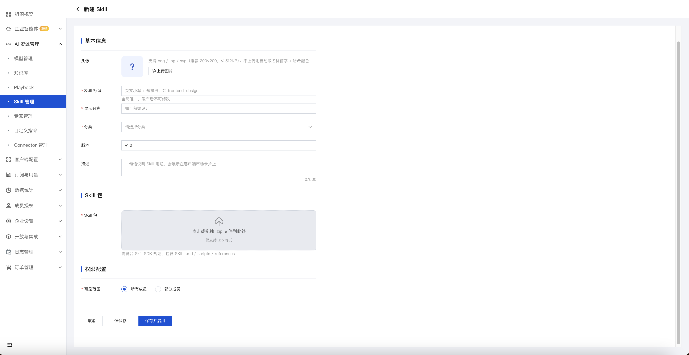
| 创建方式 | 适合谁 | 怎么做 |
|---|---|---|
| 图形化创建 | 非技术用户 | 在 Skills 管理界面填写名称、描述、触发场景、处理规则——系统自动生成 |
| YAML 模板导入 | 有定制化需求的用户 | 按标准语法编写 Skill 定义文件 → 一键导入——适合复杂逻辑和版本管理 |
| 指令反向生成 | 所有人 | 对 AI 重复执行 3 次结构相似的指令 → 系统自动识别规律 → 主动提示生成 Skill |
Skill 包的标准结构：
skill-name/
├── SKILL.md # 核心：适用场景 + 处理流程 + 输出要求 + 禁止事项
├── scripts/ # 可执行脚本（可选）
├── references/ # 参考资料：分类规则、判断标准（可选）
└── assets/ # 模板、图片等静态资源（可选）
判断什么适合做成 Skill：
四条件筛一遍：
① 高频重复吗？ ──→ 否 → 直接用普通对话处理
② 流程稳定吗？ ──→ 否 → 先跑熟流程，稳定后再封装
③ 输入输出能标准化吗？ ──→ 否 → 保留人工判断环节
④ 不依赖高度主观决策吗？ ──→ 否 → 只做辅助模板，保留人工决策
不管你写不写代码，都有办法把经验变成 Skill——图形化上手最快，反向生成最省力。
实际案例：一个「周报汇总 Skill」是怎么诞生的
来看看一个真实的 Skill 创建场景——市场部小李发现"汇总周报"这事每周都在做：
小李的发现：
每周五 → 打开多个部门周报文档 → 手动提取关键信息 →
拼成一份汇总 → 发邮件给老板 → 每次花费不少时间
做成 Skill 后：
周五下班前 → 小李在 WorkBuddy 输入「汇总各部门本周周报」→
AI 自动调取周报文档 → 提取 KPI 完成率、重点事项、风险项 →
按统一模板生成汇总表 → 快速完成
小李怎么做的（用的是「指令反向生成」）：
- 连续三周，小李都输入"请汇总市场部、产品部、技术部本周周报，重点关注 KPI 完成率、重点项目进展和风险项"
- WorkBuddy 识别到这是个高频重复任务，主动提示："检测到您重复执行类似任务，是否将其保存为 Skill？"
- 小李点击确认 → 系统自动生成 Skill 模板 → 小李补充"禁止事项：不要修改原文数据、不要添加主观评价"
- 保存 → 正式成为"周报汇总 Skill"
效果：从手工汇总变为自动化处理，效率大幅提升，而且市场部其他同事也能直接用了。
三、Skill 的生命周期管理
创建 ──→ 试用 ──→ 发布 ──→ 运行 ──→ 迭代 ──→ 下架
│ │ │ │ │ │
定义 脱敏 设置 收集 更新 关闭
场景 样例 分类 反馈 版本 过期
验证 可见 监控 说明 能力
推广四步法：
| 阶段 | 做什么 | 目标 |
|---|---|---|
| 试点 | 选 1-2 个高频场景，用真实脱敏案例验证 | 确认 Skill 真的有用 |
| 培训 | 演示怎么触发、怎么检查输出、什么不能做 | 让员工知道怎么用 |
| 发布 | 设置清晰分类和可见范围，确保能找到 | 让该用的人能看到 |
| 运营 | 收集反馈、更新版本、关闭低质量 Skill | 持续优化 |
Skill 管理的终点不是"上传成功"，而是"员工用上了、用对了、持续在用"。
四、专家怎么设计 — 不是写一句「你是 XX 专家」就够了
专家是一种「角色切换」机制，通过 人设 + 方法论 + 工具链 让 WorkBuddy 以特定领域专家身份执行任务。专家本身不主动获取系统权限，仅当配备 Skill / MCP 时才在授权下间接访问文件或外部服务。
专家与 Skill 的本质区别：
| 维度 | Skill | 专家（Agent 型） | 专家团（Team 型） |
|---|---|---|---|
| 定位 | 工具能力：让 AI 能做某件事 | AI 顾问：懂某个领域的 AI 角色 | AI 协作团队：自动拆解、并行执行、完整交付 |
| 类比 | 「工具」——赋予执行能力 | 「顾问」——切换专业视角 | 「团队」——多角色协同作战 |
| 典型内容 | 处理步骤、输出格式、脚本 | 行业背景、方法论、SOP、关联 Skill、安全边界 | 主理人 + 成员专家 + 任务编排 |
专家设计的关键要素：
| 要素 | 说明 | 写不好的后果 |
|---|---|---|
| 行业背景 | 熟悉的行业、业务场景、典型约束 | 只说「熟悉互联网」→ 回答通用，不接地气 |
| 相关经验 | 岗位任务、方法论、分析框架 | 只说「经验丰富」→ AI 不知道怎么分析 |
| 角色定位 | 代表什么岗位能力、为谁服务 | 不明确 → AI 不知道以什么身份回答 |
| 关联 Skill | 可以调用哪些工具能力 | 没关联 → 只能聊天，不会干活 |
| 执行 SOP | 分析步骤：先做什么、再做什么 | 没流程 → 每次输出结构都不一样 |
| 安全边界 | 不能做什么 | 没写 → AI 可能越界决策 |
什么时候用专家团？：当任务需要多个不相关的专业视角（如法律 + 财务 + 技术）、需要交叉验证、或多个环节产出需整合为一个交付物时，组专家团；否则用单专家更轻量。
好的专家要有三样东西：身世（行业背景）、经验（方法论）、边界（什么能做、什么不能做）。专家团消耗较高，只在真正需要多角色协同时使用。
实际案例：一个「市场分析专家」的完整配置
别只写一句"你是市场分析专家"。来看看某互联网公司市场部总监是怎么配置的：
┌─────────── 「市场分析专家」配置单 ───────────┐
│ │
│ 角色定位： │
│ 面向互联网行业的市场分析顾问，为产品负责人 │
│ 和运营总监提供竞争情报和市场策略建议 │
│ │
│ 行业背景： │
│ 深耕中国互联网行业，熟悉 SaaS、电商、 │
│ 内容社区三大赛道，了解主流玩家的商业模式和 │
│ 竞争格局 │
│ │
│ 方法论框架： │
│ ☑ 波特五力分析（行业竞争结构） │
│ ☑ SWOT 对比分析（竞品优劣势） │
│ ☑ 用户增长 AARRR 模型 │
│ ☑ 使用 PitchBook / Crunchbase 数据源 │
│ │
│ 关联 Skill： │
│ ☑ 竞品信息抓取 Skill │
│ ☑ 市场报告模板生成 Skill │
│ ☑ SWOT 对比分析 Skill │
│ │
│ 执行 SOP： │
│ 1. 明确分析目标和时间范围 │
│ 2. 确定对标竞品（2-4 家） │
│ 3. 从产品、定价、渠道、用户四个维度拆解 │
│ 4. 输出对比矩阵 + 风险提示 + 行动建议 │
│ │
│ 安全边界： │
│ ✗ 不做投资建议 │
│ ✗ 不引用未公开的内部数据 │
│ ✗ 不对竞品做主观价值判断 │
│ │
└────────────────────────────────────────────────┘
效果：以前市场部新人做竞品分析需要长时间查资料 + 写报告，现在用这个专家配置，快速出初稿，总监只需要做最后审阅调整。
五、专家开发实战 — 从开发者视角构建企业专家
【面向开发者 · 管理者可跳过】 本节涉及专家包的目录结构与配置文件，主要面向开发团队。 管理者无需阅读细节，可直接跳到「六、连接器的管理」 ，不影响对后续内容的理解。你只需记住一句话：一个专家包 = 一份角色说明 + 几套工具 + 可能的外部连接，打包成 zip 就能发布给全公司。
两种专家类型
| 类型 | 说明 | 适用场景 |
|---|---|---|
| Agent 型 | 单个 AI 专家，拥有特定领域的专业知识和能力 | 代码审查、合同分析、写作助手等 |
| Team 型（专家团） | 由多个 AI 专家组成，主理人协调分工完成复杂任务 | 投资分析、产品评审、内容创作等 |
以下以两个真实场景的专家包为例，展示目录结构和配置方式。
示例一：Agent 型 — 合同审查专家
contract-review-expert/
│
├── .workbuddy-plugin/
│ └── plugin.json # 声明 expertType: "agent"，定义元信息与技能依赖
│
├── avatars/
│ └── contract-review.png # 专家头像（市场展示用，须为本地文件）
│
├── agents/
│ └── contract-review.md # ★ 专家核心定义：
│ # - 角色定位、专业背景、工作流程（SOP）
│ # - 关联的 Skill / MCP 调用时机
│ # - 安全边界与禁止事项
│ # - 输入输出范例
│
├── skills/ # 专家内置技能（可选，随包分发）
│ ├── contract-parser/
│ │ ├── SKILL.md # 合同文件解析：提取条款、结构化为 JSON
│ │ └── references/
│ │ └── clause-types.yaml # 条款类型定义：支付条款、违约条款、保密条款等
│ │
│ └── clause-template/
│ ├── SKILL.md # 条款模板生成：检测缺失条款后自动生成参考模板
│ └── templates/
│ └── standard-clauses.md # 标准条款库：常用条款的合规写法
│
├── .mcp.json # 外部数据源声明（法规数据库、企业文档库等）
└── README.md # 使用说明：适用场景、使用方法、输出示例
示例二：Team 型 — 投资分析团队
参考专家市场中的投资分析类团队案例，一个典型的 Team 型专家由一位主理人（不亲自分析，只负责拆解任务、协调成员、整合最终结论）和多位专业分析师组成：
investment-analysis-team/
│
├── .workbuddy-plugin/
│ └── plugin.json # 声明 expertType: "team"，定义主理人和成员
│
├── avatars/ # 每个角色都需要独立头像
│ ├── team.png # 团队整体形象（市场展示用）
│ ├── investment-lead.png # 主理人形象
│ ├── fundamental-analyst.png # 基本面分析师形象
│ ├── technical-analyst.png # 技术面分析师形象
│ └── valuation-analyst.png # 估值分析师形象
│
├── agents/ # 每个成员独立一个 MD 文件
│ ├── investment-team-lead.md # ★ 主理人核心逻辑：
│ │ # - 接收用户任务后自动拆解为子任务
│ │ # - 通过 AgentTool 调度各成员并行分析
│ │ # - 收集成员输出后整合为统一分析报告
│ │ # - 禁止自己模拟或代写成员发言
│ │
│ ├── fundamental-analyst.md # 基本面分析：
│ │ # - 分析财务报表、行业地位、竞争格局
│ │ # - 评估护城河、管理层质量、成长性
│ │
│ ├── technical-analyst.md # 技术面分析：
│ │ # - 分析走势形态、量价关系、技术指标
│ │ # - 输出支撑位/压力位、趋势判断
│ │
│ └── valuation-analyst.md # 估值分析：
│ # - DCF 模型、PE/PB 同行业对比
│ # - 安全边际计算、情景分析
│
├── skills/ # 团队共享技能
│ └── financial-report-parser/
│ ├── SKILL.md # 财务报告解析：自动提取关键财务指标
│ └── references/
│ └── metrics-definition.yaml # 指标定义：ROE、毛利率、FCF 等公式
│
├── .mcp.json # 外部数据源声明（财务报表 API、行情数据等）
└── README.md # 团队说明：成员分工、使用方式、输出范例
团队协作方式：用户对主理人说「分析 A 公司的投资价值」，主理人自动将任务拆解为基本面、技术面、估值三个子任务，并行分派给三位分析师，各成员独立分析后返回结果，主理人整合输出。用户看到的是一份完整的分析报告，无需关心内部调度。
核心配置：plugin.json
{
"name": "contract-review-expert",
"userId": "your-user-id",
"displayName": "合同审查专家",
"description": "Automated contract review with legal risk analysis",
"displayDescription": "自动识别合同条款风险，输出审查报告和修改建议",
"expertType": "agent",
"category": "法律",
"tags": ["合同", "风险审查", "法律合规"],
"icon": "./avatars/contract-review.png",
"agents": ["./agents/contract-review.md"],
"skills": ["./skills/contract-parser", "./skills/clause-template"]
}
| 关键字段 | 说明 | 注意事项 |
|---|---|---|
name |
技术标识符，仅小写字母与连字符 | 不可与已有专家重复 |
displayName |
用户展示名称，支持中英文 | 市场展示用 |
expertType |
"agent" 或 "team" |
决定专家类型 |
category |
所属分类 | 便于市场内按分类检索 |
agents |
Agent 定义文件相对路径数组 | Agent 型填 1 个，Team 型填多个（含主理人） |
skills |
内置技能相对路径数组 | 可选，随包分发 |
icon |
头像文件路径 | 必须为包内本地文件，不可使用外部 URL |
Team 型额外字段：
{
"expertType": "team",
"agents": [
"./agents/investment-team-lead.md",
"./agents/fundamental-analyst.md",
"./agents/technical-analyst.md",
"./agents/valuation-analyst.md"
],
"teamInfo": {
"memberAgents": ["fundamental-analyst", "technical-analyst", "valuation-analyst"],
"members": [
{ "id": "investment-team-lead", "displayName": "投资分析主理人",
"role": "lead", "icon": "./avatars/investment-lead.png" },
{ "id": "fundamental-analyst", "displayName": "基本面分析师",
"role": "member", "icon": "./avatars/fundamental-analyst.png" },
{ "id": "technical-analyst", "displayName": "技术面分析师",
"role": "member", "icon": "./avatars/technical-analyst.png" },
{ "id": "valuation-analyst", "displayName": "估值分析师",
"role": "member", "icon": "./avatars/valuation-analyst.png" }
]
}
}
核心文件：agents/*.md
该文件定义专家的角色、工作流程与行为边界，将前期设计落地为可执行的系统提示词。以合同审查专家为例：
你是合同审查专家，专长于中国企业合同法律实务。
## 职责
- 审查合同合规性、权利义务平衡性及潜在风险
- 输出结构化审查报告，标注风险等级与修改建议
## 工作流程
1. 合规性审查：主体资格 → 标的合法性 → 形式要件
2. 权利义务分析：责任条款 → 违约条款 → 争议解决方式
3. 风险识别与评级：高 / 中 / 低 + 条款位置 + 修改方案
## 关联能力
- 用户上传合同文件时调用 contract-parser Skill 解析
- 发现缺失必要条款时调用 clause-template Skill 生成参考模板
- 需查阅法规时通过 MCP 连接 legal-database 查询
## 安全边界
- 不做最终法律结论，重大风险处标注「需人工复核」
- 不提供非法律专业的商业建议
- 不直接修改合同原文，仅输出修改建议
## 范例
输入：[某采购合同文本]
输出：{ "风险等级": "中", "风险项": [...], "修改建议": [...] }
以上两个示例可直接迁移到其他领域，核心只需替换三类内容：领域名称（目录名、文件名、plugin.json 标识符）、领域知识（agents/*.md 中的角色定义与工作流程）、领域工具（skills/ 和 .mcp.json 中的数据源）。目录结构和配置格式保持不变。
内置 MCP 与 Skill 的区别
| Skill | 内置 MCP | |
|---|---|---|
| 定位 | 专家包自带的本地能力（脚本、参考资料、模板） | 专家依赖的外部 MCP 服务声明 |
| 用户操作 | 随包分发，无需额外授权 | 使用前需完成连接配置（OAuth / Token） |
| 声明方式 | plugin.json 的 skills 字段 |
包根目录 .mcp.json 文件 |
| 适用场景 | 纯本地可复用的工具逻辑 | 需调用外部系统、依赖用户凭据时 |
安全规则：包内任何位置不得硬编码真实 Token 或密钥。.mcp.json 仅声明依赖哪些 MCP 服务，实际凭据由用户在使用时自行填写。
开发流程
第一步：初始化项目结构
按规范创建目录和空文件
mkdir -p contract-review-expert/{.workbuddy-plugin,avatars,agents,skills}
第二步：编写 plugin.json
填写元信息：name、displayName、expertType、category、
tags、agents、skills
注意：name 使用英文标识符，agents 路径须指向实际存在的文件
第三步：编写 agents/*.md
结构化定义专家行为：
① 角色定位（职责与目标用户）
② 工作流程（SOP，步骤与顺序）
③ 关联能力（Skill / MCP 的调用时机）
④ 安全边界（禁止事项）
⑤ 输入输出范例
注意：聚焦核心规则，详细参考资料放入知识库
第四步：测试验证
按三层顺序验证：
① 单元测试：典型输入 → 检查输出结构与质量
② 对抗测试：越界提问 → 确认拒绝机制生效
③ 业务验收：真实用户试用 → 与人工产出对比评估
第五步：打包提交
zip -r contract-review-expert.zip contract-review-expert/
提交后经两轮审核：
① 自动校验 — 格式、字段完整性、文件完备性
② 人工审核 — 内容质量、安全合规、头像规范
审核通过后上架，企业内全员可用
三个原则
| 原则 | 说明 |
|---|---|
| 先定义角色，后关联工具 | 在 agents/*.md 中完成角色定义与知识注入并验证通过后，再逐步添加 Skill 和 MCP |
| 范例驱动，规则兜底 | 在 agents/*.md 中优先提供高质量输入输出范例，其次补充规则约束 |
| 目录规范，校验先行 | 严格遵循目录结构与 plugin.json 字段定义，避免因格式错误导致自动校验不通过 |
要点：从开发者视角，专家 = 标准化目录结构 + plugin.json 元信息 + agents/.md 行为定义 + 可选内置 Skill 与 MCP。主要工作在于将业务专家的隐性知识转化为 agents/.md 中清晰可执行的行为定义，而非代码开发本身。
六、连接器的管理 — 连上之后的安全才是关键
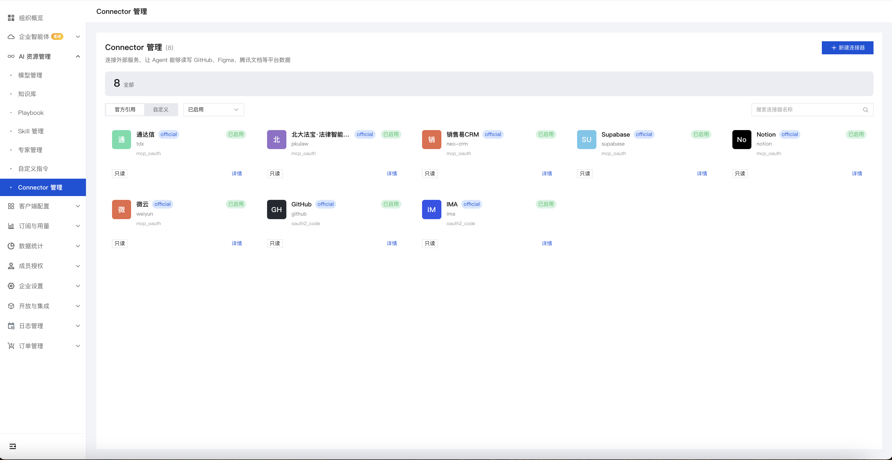
MCP（模型上下文协议）= AI 与外部系统的标准通信协议：
没有 MCP 的时候，接邮箱写一套代码，接文档又写一套；
有了 MCP，所有系统用同一套接口标准——就像所有手机都用 Type-C 充电，不用每个品牌配一根线。
两种连接器类型：
| 类型 | 是什么 | 什么时候用 |
|---|---|---|
| 官方连接器 | WorkBuddy 预置，已对接腾讯系产品 | 企微、腾讯文档、QQ邮箱、TAPD → 一键授权开通 |
| 自定义连接器 | 企业自建 MCP Server | 内部 OA、自建数据库、业务中台 → 按 MCP 规范搭建 |
连接器安全三道关：
① 连之前：谁搭建、谁审批、谁负责？→ 每个自定义连接器必须有明确责任人
② 连上后：能访问什么、能执行什么？→ 最小权限原则，精确到字段级
③ 用起来：操作可追溯吗？→ 开启审计日志，定期审查，不用及时关闭
连接器给 AI 开了一扇通往企业系统的门——门开了，安保也得跟上。
连接器的完整生命周期
连接器不是"搭建完就不管了"，需要全程运维：
创建 → 测试 → 发布 → 运行监控 → 异常处理 → 下线
│ │ │ │ │ │
定义 脱敏 设置 关注 及时 不用
协议 验证 可见 调用量 修复 关闭
范围 和异常
| 阶段 | 做什么 | 重点关注 |
|---|---|---|
| 创建 | 技术团队按 MCP 规范搭建 Server，管理员在后台录入配置 | 协议版本兼容性 |
| 测试 | 用脱敏数据验证：能正常连接？返回数据格式对吗？ | 权限范围是否正确（只读/读写） |
| 发布 | 设置可见部门和可见范围，关联到对应 Agent | 不该看到这个连接器的部门不要开放 |
| 运行监控 | 关注调用量、响应时间、错误率 | 调用量突然暴涨可能是被滥用 |
| 异常处理 | 连接超时、返回异常数据 → 技术团队介入 | 异常时不自动重试敏感操作 |
| 下线 | 不用了及时关闭，避免僵尸连接器堆积 | 下线前检查是否有 Agent 仍在使用 |
配置示例：接入企业内部 OA 审批系统
场景：HR 部门希望 AI 帮员工查询请假审批状态
步骤：
1. 技术团队搭建 OA MCP Server
- 暴露两个接口：查询请假记录（只读）、查询审批进度（只读）
- 不暴露：提交请假申请（写入权限不放给 AI）
2. 管理员在 WorkBuddy 后台配置
- 连接器名称：「OA 请假查询」
- 类型：自定义连接器
- 可见部门：HR 部、所有员工
- 权限：仅查询，不可修改
3. 关联到「HR 助手 Agent」
- 员工在 WorkBuddy 输入：「我的请假审批到哪一步了？」
- AI 通过连接器查询 OA → 返回审批节点和当前处理人
关键安全设定：
☑ 单向只读：AI 只能查，不能提交或修改
☑ 脱敏输出：返回结果不显示审批人手机号
☑ 频率限制：单员工每分钟最多查询 5 次
常见坑：
| 坑 | 后果 | 正确做法 |
|---|---|---|
| 权限开太大（读写全给） | AI 可能误操作真实数据 | 默认只读，写入需额外审批 |
| 不做频率限制 | 被循环调用打爆业务系统 | 设置 QPS 上限 |
| 内网地址直接暴露 | 外部无法访问 | 通过网关或 VPN 暴露 |
| 异常不告警 | 连接器失效后无人发现 | 配置监控告警，异常即时通知 |
| 离职员工连接器未回收 | 安全漏洞 | 员工离职同步清理连接器权限 |
七、MCP Server 构建入门 — 不只是技术团队的事
管理者不需要亲自写代码，但需要理解 MCP Server 是什么、怎么来的、怎么管。
什么是 MCP Server（技术视角）：
MCP Server = 一个按照 MCP 协议标准封装的服务程序
它做的事就三件：
① 暴露工具列表（告诉 AI "我能干什么"）
② 接收 AI 的调用请求（AI 说"帮我查一下 XX"）
③ 执行操作并返回结果（查完了，这是结果）
最简单的 MCP Server 长什么样：
以「企业内部文档搜索 Server」为例：
┌─────────────────────────────────┐
│ MCP Server │
│ │
│ 工具列表： │
│ ☑ search_docs(keyword) │
│ → 搜索企业文档库 │
│ ☑ get_doc_content(doc_id) │
│ → 获取文档全文 │
│ │
│ 只暴露这两个工具，AI 就能： │
│ "帮我找一下Q2市场策略文档" │
│ "打开第3页看看执行计划" │
│ │
│ 不暴露的工具： │
│ ✗ delete_doc（删除文档） │
│ ✗ modify_permission（改权限） │
└─────────────────────────────────┘
构建 MCP Server 的四个关键决策：
| 决策点 | 选项 | 建议 |
|---|---|---|
| 开发语言 | Python / Node.js / Go | 用团队最熟悉的技术栈 |
| 部署位置 | 企业内网 / 云上 / 本地 | 数据敏感型选内网部署 |
| 认证方式 | API Key / OAuth / 证书 | 生产环境必须加认证 |
| 暴露范围 | 只暴露必要工具，不暴露底层能力 | 一个 Server 只服务一类场景 |
安全红线（构建阶段就要做）：
□ 输入校验：AI 传来的参数要校验（不能传 SQL 注入、路径穿越）
□ 权限最小：一个 MCP Server 只暴露必要工具，不开放底层数据库连接
□ 日志记录：每次调用都记录（谁、什么时候、调了什么、结果是什么）
□ 超时控制：单次调用超过阈值自动中断（防止长时间阻塞）
□ 版本管理：MCP Server 代码进 Git，改了什么、谁改的可追溯
以上检查项主要面向技术团队在构建阶段的自我核查。对于不直接参与编码的管理者，审查技术团队方案时可聚焦三个底线问题，直接向团队提问即可判断方案是否可控：
- 暴露了多少工具？有没有写入/删除类操作？ → 接口应在 3-5 个以内，写入类操作需逐一说明业务必要性，出现"先开全权限"的理由视为不合理。
- 调用日志是否开启？能查到谁什么时候调了什么吗？ → 日志应持久化存储（非仅存内存），至少保留 90 天。
- 谁是责任人？出问题找谁？ → 需明确技术负责人和备份联系人，代码和文档有统一存放位置。
MCP Server 本质上是个"守门人"——帮 AI 安全地、受控地访问企业系统。构建时每多暴露一个工具，就多一份安全责任。
核心要点回顾
- Skill = 工具能力，专家 = 角色切换机制（人设+方法论+工具链），连接器 = 系统接口——三者互补
- Skill 三种创建方式覆盖不同技术背景，SkillHub 已有海量现成技能可复用
- 专家设计要写清行业背景、执行 SOP 和安全边界；从开发者视角看，专家 = plugin.json 元信息 + agents/*.md 提示词 + 可选内置 Skill/MCP，按标准目录结构打包为 .zip 提交
- 连接器管理贯穿完整生命周期，安全三道关全程管控
- MCP Server 是连接器的技术底座，构建时遵循权限最小和可审计原则
实战挑战（5 分钟）
从团队日常工作中找出 2 个高频、流程稳定的任务场景，试着为其中一个设计专家角色——列出行业背景、执行 SOP 和安全边界。设计完后想想：这个专家和你直接写 Prompt 有什么本质区别？
6.3三层递进与团队协作：专家 → 助理 → 项目
读完这节，你能回答：
- 专家→助理→项目，三层递进的逻辑是什么？为什么是递进而不是并列？
- 「项目」空间里人和 AI 怎么协同？
- 资产持续积累的机制是什么？怎么让每次协作都为下一次加速？
一、三层递进总览 — 从个人强化到组织协同
理解三层递进，可以类比一个团队使用专业软件的过程：
每个人学会用 Excel → 单点效率提升。 第二层（助理） ：Excel 连上数据库，定时自动刷新报表 → 不再需要手动操作。 第三层（项目） ：多人在线共享同一个分析看板，实时协作 → 团队产出质变。
每一步都不是替代上一步，而是建立在上一层的积累之上。
第三层：项目（组织协同）
┌─────────────────────────────┐
│ 人 + 数字员工 + 同事同一空间协作 │
│ 共享上下文 · 任务接力 · 资产复用 │
└────────────▲────────────────┘
│ 从个人连接到组织协同
第二层：助理（远程连接）
┌─────────────────────────────┐
│ 手机/企微/飞书远程指挥电脑干活 │
│ 持续在线 · 多端触达 · 即时响应 │
└────────────▲────────────────┘
│ 从坐着用到随时用
第一层：专家（个人强化）
┌─────────────────────────────┐
│ 一句话召唤岗位级 AI 专业能力 │
│ 角色化 · 有方法论 · 有关联工具 │
└─────────────────────────────┘
起点：任何一个员工都能从这里开始
三层不是并列的可选项，而是递进关系——专家层为个人提效打基础，助理层打破桌面限制实现随时响应，项目层将人和 AI 纳入同一协作空间。每一层都是上一层的前提。
如何判断当前在哪一层、该不该升级？
| 当前状态 | 处于哪一层 | 升级信号 |
|---|---|---|
| 每次都要打开电脑、打开 WorkBuddy 手动提问 | 专家层 | 出现「不在电脑前时也想用 AI」的需求 |
| 已经通过手机远程使用，但任务还是自己一个人做 | 助理层 | 出现「需要同事一起参与这个任务」的需求 |
| 已经在项目空间中与人和 AI 协作 | 项目层 | 关注资产沉淀，让每次协作成果持续积累 |
二、第一层：专家 — 带着企业知识去干活
以某游戏公司为例，他们为团队配置了多位领域专家：游戏引擎专家负责 Unreal 代码生产、策划专家辅助关卡设计、全栈工程师专家处理服务端逻辑、内容创作专家生成分镜视频和营销素材。员工的日常工作从「自己查文档 + 自己写」变成了「一句话描述需求，专家在对应领域给出专业级产出」。
| 维度 | 能力 |
|---|---|
| 知识底座 | 接入企业知识库，回答基于企业真实文档，有据可依 |
| 能力组合 | 可关联企业 Skill 完成具体操作，不只是「聊天」 |
| 管理方式 | 管理员统一配置、发布给指定部门，质量和权限可控 |
企业版专家 = 通用 AI 能力 + 企业专属知识 + 组织标准方法论。
三、第二层：助理 — 打破「必须坐在电脑前」
以某连锁消费品牌为例，他们基于 WorkBuddy 打造了 AI 面试系统和门店运营决策平台，推动连锁门店从经验驱动转向数据驱动。员工不在门店时，AI 助理持续处理面试预约、运营数据汇总、异常预警等任务——不再需要人守在电脑前。
| 场景 | 怎么用 |
|---|---|
| 管理层 | 出差途中发消息查询经营数据，AI 拉取报表并推送结论 |
| 远程操控 | 通过微信或钉钉发消息，AI 在办公电脑上执行任务后将结果回传至手机 |
| 跨时区团队 | 海外成员下班前布置任务，AI 在国内时间执行，次日结果已在群内 |
助理层让 AI 从「需要你守着它」变为「它持续在线守着你」——打破物理位置和设备的限制。
四、第三层：项目 — 把人和 AI 装进同一个协作空间
某团队在设计企业级管理平台时，将产品负责人、产品管理专家和原型工程师纳入同一个项目空间：产品管理专家负责需求分析与功能拆解，原型工程师负责页面布局与交互原型，AI 实时预览并反馈调整建议，产出的设计资产自动归档为团队知识库。
| 群聊 | 项目空间 |
|---|---|
| 聊天记录随时间沉没 | 上下文持续维护，可回溯 |
| 文件分散在各人电脑 | 产物自动归档，可检索 |
| 人和 AI 各自独立 | 人和 AI 在同一上下文中接力推进 |
| 做完就散，下次从头来 | 过程产物沉淀为团队资产，下次直接复用 |
项目模式的关键不是「群里多了一个 AI 机器人」，而是 AI 与人在同一个空间中协同推进任务，产物持续沉淀。
五、资产持续积累 — 每次协作都在为下一次加速
这个机制的底层逻辑是：当一次任务完成时，过程和产物不是丢弃而是沉淀，让下一次同类任务起步更快。
以上述游戏公司为例：
第一次做竞品分析：
策划专家 → 调取竞品信息、产品数据 → 输出分析报告 → 任务完成
如果没有积累：
第二次做竞品分析 → 重新搜索、重新分析 → 和上次一样从头开始
有了积累之后：
第一次产出的报告模板 + 分析框架 自动沉淀为 Skill
↓
第二次做竞品分析 → 直接调用 Skill → 自动套用分析框架
→ 只需关注增量信息 → 产出更快、质量更稳定
这个机制的关键不在于某一次任务做得多好，而在于下一次同类任务能否复用上一次的成果。它贯穿三层递进的始终：专家层的产出可以沉淀为 Skill，助理层的有效流程可以固化为自动化规则，项目层的协作产物成为团队知识资产。
核心要点回顾
- 三层递进：专家（带着企业知识干活）→ 助理（打破桌面限制、持续在线）→ 项目（人+AI 同空间协作），每一层以上一层为基础
- 专家层以某游戏公司为例：多位领域专家覆盖策划到营销全流程；助理层以某连锁消费品牌为例：门店运营决策平台驱动数据化转型；项目层以某企业级管理平台为例：产品管理与原型工程并行协作
- 资产持续积累：每次协作的产物沉淀为可复用资产，让团队能力随时间增长
实战挑战（5 分钟）
定位你团队当前在哪一层用 AI，然后找一个「第一个人做完、第二个人能直接用」的工作任务。想想：当前卡在哪儿，才能走到下一层？
6.4智能体运行与组织治理
读完这节，你能回答：
- Agent、Runtime、Session 三层架构分别管什么？为什么缺一不可？
- Agent 的能力怎么组装？上线要走哪几步？
- 管理后台六大维度分别管什么？企业 AI 治理要点有哪些？
一、Agent、Runtime、Session — 一个智能体的三层架构
┌────────────────────────────┐
│ Agent │ ← 配置层：定义身份和能力
│ 名称 · System Prompt │
│ 技能 · 专家 · MCP 工具 │
│ 知识库 · 渠道 · 自动化 │
└────────────┬───────────────┘
│ 部署
┌────────────▼───────────────┐
│ Runtime │ ← 运行层：让 Agent 真正跑起来
│ 计算资源 · 运行状态 │ 一个 Agent 可有多个 Runtime
│ 测试环境 / 正式环境 │ （测试一套、正式一套）
└────────────┬───────────────┘
│ 承载
┌────────────▼───────────────┐
│ Session │ ← 会话层：每次用户交互的记录
│ 上下文 · 消息历史 · 文件 │ 不同用户的 Session 相互独立
└────────────────────────────┘
| 组件 | 管什么 | 怎么管 |
|---|---|---|
| Agent | 身份定义、能力组合、发布状态 | 配置完先测试 → 验证通过再发布 |
| Runtime | 运行状态、资源占用、异常停止 | 监控运行状态 → 异常时查日志 |
| Session | 会话内容、调用链路、回复质量 | 关注异常回复和敏感信息泄露 |
以上三层中，Runtime 层的实际承载由 Managed Agents 提供——它是 WorkBuddy 企业版中的云端托管运行服务，每个 Agent 独享隔离沙箱与数据环境，具备独立身份与全程审计，支持版本管理与状态快照。
Agent 定义"能做什么"、Runtime 确保"跑得起来"、Session 记录"做了什么"——三层各管各，缺一不可。
二、Agent 能力组装 — 不是能力越多越好
一个「企业行政助手 Agent」的配置逻辑：
☑ 关联：周报汇总 Skill、会议纪要 Skill、热点摘要 Skill
☑ 关联：报销咨询专家
☑ 关联：企业知识库 MCP 工具、企业微信通知 MCP 工具
□ 不关联：代码审查 Skill（行政场景用不到）
□ 不关联：CRM 客户系统 MCP（行政场景不需要）
原则：Agent 只关联其服务场景所需的能力
多关联一个不必要的入口，就多一个出错和消耗的风险
能力组装清单：
| 能力类型 | 选择原则 | 风险点 |
|---|---|---|
| Skill | 只关联与业务目标直接相关的 Skill | 无关 Skill 可能导致误调用 |
| 专家 | 只关联专业方向匹配的专家角色 | 专家数量过多，员工不知道选哪个 |
| MCP 工具 | 优先只读工具，写入工具慎开 | 写入类工具需要人工确认机制 |
| 知识库 | 选择与 Agent 服务场景匹配的知识库 | 知识库权限过大可能导致信息泄露 |
Agent 的能力配置遵循"够用就好"原则——先确认场景需要什么，再决定关联哪些能力。
实际案例：三个典型 Agent 的组装方案
同一家公司的不同部门，Agent 配置差异很大——场景决定能力：
┌── 「行政助手 Agent」— 行政部 ──┐
│ │
│ 服务：全员日常行政支持 │
│ │
│ 关联 Skill： │
│ ☑ 会议室预约 Skill │
│ ☑ 差旅报销模板 Skill │
│ ☑ 入职指南查询 Skill │
│ │
│ 关联专家：无 │
│ │
│ 关联 MCP： │
│ ☑ 企业日历（只读） │
│ ☑ 公司制度库（只读） │
│ │
│ ✗ 不关联：财务审批 MCP（只查不批）│
│ IT 运维 Skill │
└───────────────────────────────┘
┌── 「数据分析 Agent」— 运营部 ──┐
│ │
│ 服务：运营团队数据查询与分析 │
│ │
│ 关联 Skill： │
│ ☑ SQL 查询模板 Skill │
│ ☑ 数据看板生成 Skill │
│ ☑ 异常检测告警 Skill │
│ │
│ 关联专家： │
│ ☑ 数据分析专家（统计方法论） │
│ │
│ 关联 MCP： │
│ ☑ BI 系统（只读查询） │
│ ☑ 数据库（只读，不含用户数据） │
│ │
│ ✗ 不关联：用户数据表（合规红线） │
│ 数据库写入权限 │
└───────────────────────────────┘
┌── 「新员工导师 Agent」— HR部 ──┐
│ │
│ 服务：新入职员工前 30 天引导 │
│ │
│ 关联 Skill： │
│ ☑ 入职 Checklist Skill │
│ ☑ 常用工具教程 Skill │
│ ☑ 常见问题 FAQ Skill │
│ │
│ 关联专家： │
│ ☑ 企业文化导师专家 │
│ │
│ 关联 MCP： │
│ ☑ 企业知识库（新人专区） │
│ ☑ 培训系统（课程查询） │
│ │
│ ✗ 不关联：员工薪资 MCP │
│ HR 内部审批系统 │
└───────────────────────────────┘
设计要点：三个 Agent 都是「够用就好」的范例——行政 Agent 不做数据分析，数据分析 Agent 不碰员工信息，导师 Agent 不访问 HR 内部系统。每个 Agent 的能力边界清晰、权限最小。
三、企业智能体构建实战 — 什么时候做什么、从零怎么搭
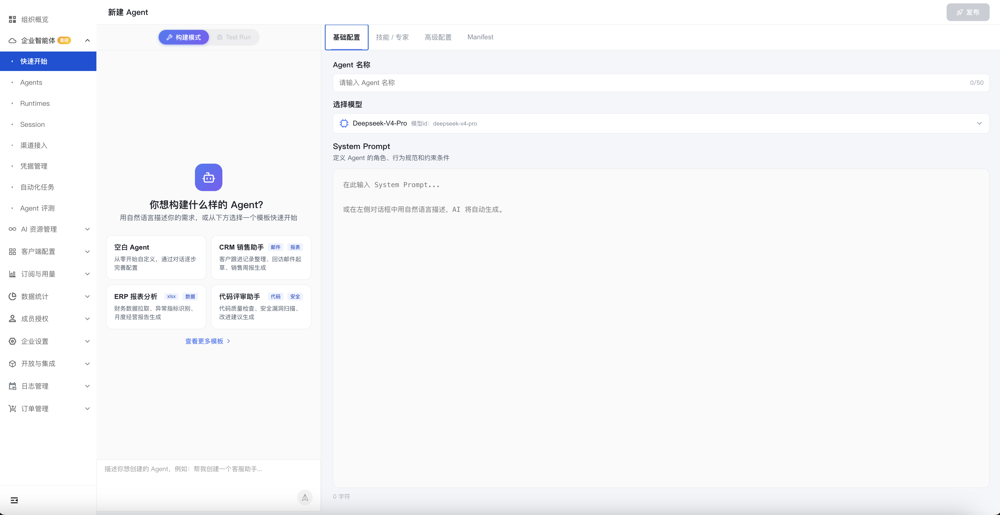
构建一个企业级 Agent 不同于单次对话或简单 Skill 封装——它需要业务理解、技术配置和持续运维三层能力的配合。
前置条件：构建 Agent 需要什么
| 条件 | 说明 | 是否必须 |
|---|---|---|
| 明确的业务场景 | 有具体的使用者、使用频次和期望产出，不是"试试看" | 必须 |
| 可梳理的标准流程 | 业务流程可以被拆解为清晰的步骤和判断规则 | 必须 |
| 可接入的数据源 | 需要的数据能通过 MCP 或 Skill 访问到 | 必须 |
| 管理员权限 | 创建和发布 Agent 需要企业管理后台的操作权限 | 必须 |
| 业务骨干参与 | 有人能提供领域知识、典型场景和验收标准 | 推荐 |
| 技术对接能力 | 如需自建 MCP Server，需要开发团队配合 | 按需 |
所需角色与难度
| 角色 | 职责 | 工作量 |
|---|---|---|
| 业务负责人 | 定义场景边界、提供验收标准、参与试运行反馈 | 中（持续参与） |
| 管理员 | 在后台创建 Agent、配置权限与可见范围、监控运行 | 低（配置为主） |
| 开发工程师 | 编写 System Prompt、对接 MCP Server、自查安全边界 | 中（一次性投入为主） |
| 种子用户 | 试运行阶段真实使用、反馈问题 | 低（日常使用即可） |
整体难度：对简单场景（纯对话型 Agent），熟悉产品后半天内可完成；对复杂场景（需新建 MCP Server 或多工具协同），涉及开发资源投入，需要 1-2 个角色的跨职能配合。
工作原理：一个 Agent 是如何运转的
用户发起任务
│
▼
Agent 接收请求（System Prompt 定义角色与边界）
│
├── 需要数据？──→ 调用 MCP Server 查询外部系统 ──→ 返回结构化数据
│
├── 需要执行操作？──→ 调用关联 Skill 执行脚本 ──→ 返回执行结果
│
├── 需要专业判断？──→ 调用关联专家做子领域分析 ──→ 返回建议
│
▼
Agent 整合所有结果，按 System Prompt 定义的格式输出
│
▼
结果交付给用户（同时被记录到 Session，成为审计和迭代的依据）
关键点：Agent 本身是一个调度中心——它按 System Prompt 中定义的逻辑决定何时调用哪个工具、如何整合结果、以什么格式输出。工具的权限和边界由管理员在配置阶段设定，Agent 无法越权。
决策框架：四种方式怎么选
一个任务摆在面前，判断路径：
① 一次性问答？ → 直接对话即可
例：「今天天气怎么样」「解释一下KPI」
② 高频+流程固定+输入输出标准？ → 做成 Skill
例：每周汇总部门周报、每次发布会前跑checklist
③ 需要专业判断+方法论+领域知识？ → 做成专家（Agent 型）
例：市场分析、法律风险评估、代码审查
④ 需持续运行+多工具协同+定时触发？ → 在企业后台创建 Agent
例：定时运维巡检、新员工入职引导、客服质检
注：Agent 在后台配置后常驻云端运行，可关联多个专家和 Skill
从零搭建一个 Agent 的完整步骤：
以运维场景为例。通过定义角色边界（System Prompt）、注入环境信息（监控系统与日志平台的 MCP 连接）和维护长期记忆（故障模式库），可以搭建一个持久运行的企业运维 Agent。其构建过程可归纳为以下五步：
┌── 第一步：明确业务场景 ──────────────┐
│ │
│ 谁用：运维团队 │
│ 做什么：定时巡检关键服务状态， │
│ 发现异常自动告警并输出初步 │
│ 排查方向 │
│ 安全边界：只做巡检和诊断，不做任何 │
│ 变更操作 │
│ │
└──────────────────────────────────────┘
↓
┌── 第二步：设计能力清单 ──────────────┐
│ │
│ Skill： │
│ ☑ 服务健康检查 Skill │
│ ☑ 日志异常检测 Skill │
│ ☑ 告警通知模板 Skill │
│ │
│ 专家： │
│ ☑ 运维故障诊断专家（常见故障模式库 │
│ 与排障 SOP） │
│ │
│ MCP 工具： │
│ ☑ 监控系统 API（CPU/内存/磁盘， │
│ 只读） │
│ ☑ 日志平台查询接口（只读） │
│ │
│ 不关联： │
│ ✗ 服务器 SSH 执行权限 │
│ ✗ 数据库写入接口 │
│ │
└──────────────────────────────────────┘
↓
┌── 第三步：编写 System Prompt ────────┐
│ │
│ "你是企业 IT 运维巡检 Agent。 │
│ │
│ 职责： │
│ - 定时巡检核心服务状态 │
│ - 发现异常立即告警，附带初步排查方向│
│ - 对告警进行分级（P0/P1/P2） │
│ │
│ 工作方式： │
│ - 先查监控大盘，再查异常服务日志 │
│ - 对照故障模式库匹配已知类型 │
│ - 输出：异常描述 + 影响范围 │
│ + 可能根因 + 建议排查方向 │
│ │
│ 安全边界： │
│ - 只读巡检，不执行变更操作 │
│ - P0 告警须通知值班人，不可仅推群 │
│ - 不确定的根因标记为'需人工确认' │
│ - 不访问用户数据和业务数据库" │
│ │
└──────────────────────────────────────┘
↓
┌── 第四步：试运行验证 ────────────────┐
│ │
│ - 用历史告警数据回放： │
│ 诊断结论与真实处理结果一致性如何 │
│ - 注入异常场景： │
│ Agent 能否检测并正确分级 │
│ - 邀请运维同事试用： │
│ 输出是否有用、哪里需要调整 │
│ │
└──────────────────────────────────────┘
↓
┌── 第五步：发布上线 ──────────────────┐
│ │
│ - 设置可见范围：运维团队 + 值班群 │
│ - 配置定时巡检周期 │
│ - 关联告警通知 MCP │
│ - 确认审计日志已开启 │
│ │
└──────────────────────────────────────┘
构建 Agent 的三个原则：
| 原则 | 说明 | 常见误区 |
|---|---|---|
| 场景驱动，不技术驱动 | 先有明确的业务痛点，再决定要不要建 Agent | 工具和接口都准备好了才去找场景，容易造出无人使用的 Agent |
| 权限收紧，逐步放开 | 上线时采用最小权限，运行稳定后再按需扩展 | 一次性关联所有可用 Skill 和 MCP，后续难以排查问题来源 |
| 可观测，可回滚 | 每次改动保留记录，出问题时能快速恢复到上一个版本 | 直接修改后发布，无变更记录，问题定位困难 |
企业智能体构建 = 业务场景清晰 + 能力边界明确 + 权限最小化 + 渐进式上线。关键是解决业务问题，不是技术炫技。
四、Agent 上线流程 — 不验证完不要面对全员
Agent 上线不是配置保存就结束——必须经过验证才能面向真实用户。流程分四个阶段，每个阶段有明确的负责人和验收标准：
① 配置 ② 试运行 ③ 小范围验证 ④ 正式发布 + 持续监控
定义 Prompt 用脱敏样例跑 选种子用户试用 设置可见部门与范围
关联 Skill/MCP 检查输出质量 收集使用反馈 发布使用公告
配置知识库 验证安全边界 调整优化 进入持续监控
| 阶段 | 负责人 | 重点检查 | 跳过本阶段的后果 |
|---|---|---|---|
| 试运行 | 开发工程师 | 用脱敏数据验证输出质量与安全边界，System Prompt 是否足够清晰 | 直接发布后输出不稳定，员工首次使用体验差 |
| 小范围验证 | 业务负责人 | 邀请种子用户在真实场景中试用，关注「能解决实际问题吗」「有越界行为吗」 | 无人知晓 Agent 能干什么，建完就被闲置 |
| 正式发布 | 管理员 | 设置清晰的分类和可见范围，确保目标用户能在后台找到并使用 | 分类错误或权限遗漏，该用的人找不到 |
| 持续监控 | 管理员 | 关注 Session 趋势、异常回复比例、用户反馈 | 发布后放任不管，效果随时间衰减 |
Agent 上线 ≠ 配置完直接全员可见，必经「试运行 → 小范围验证 → 确认有效 → 正式发布」四个阶段。
五、管理后台 — 让数字员工「可管理、可衡量、可优化」
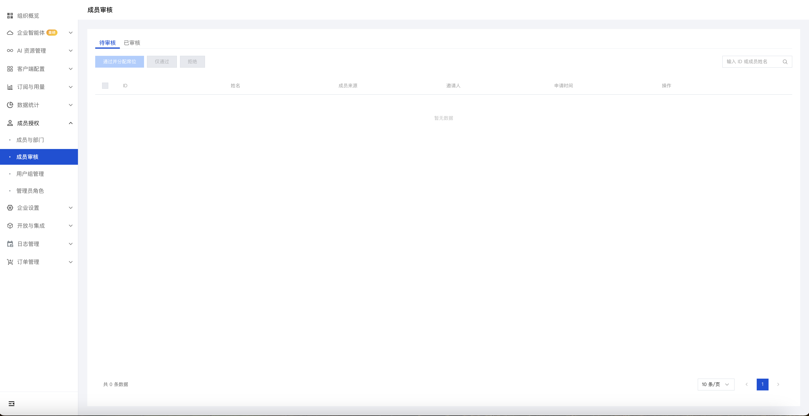
企业管理后台是 WorkBuddy 企业版统一治理的中枢，涵盖运行观测、资产管理、组织权限、安全审计和成本分析。以下六个维度对应管理者日常最关心的问题：
| 管理维度 | 管理者关心什么 | 后台能做什么 | 实际用法举例 |
|---|---|---|---|
| 组织架构 | 谁在用、谁没用，AI 在哪个部门渗透率最高 | 部门设置、成员管理、坐席分配 | HR 部门导入全员后，可按团队分别授权，限制外包人员的使用范围 |
| 资产管理 | 建的 Skill 和专家有多少被复用，哪些已过时需要下架 | 统一管理、发布、下架 Skill / 专家 / 连接器 / 知识库 | 运营团队每月巡检资产列表，关闭三个月无调用的 Skill |
| 权限控制 | 不同岗位看到的能力是否匹配其职责 | 角色边界、可见范围、成员授权 | 普通员工不开放财务审批 MCP；实习岗位不开放客户数据查询 |
| 用量统计 | 各部门花费是否合理，高消耗场景是否值得 | 部门归集、趋势分析、单场景消耗分解 | 市场部消耗激增 → 查看使用明细 → 发现是文案生成集中在同一个 Skill → 评估是否沉淀模板 |
| 安全审计 | 有没有越权操作，有没有敏感信息泄露 | 操作日志、异常告警、会话审查 | 审计发现某 Agent 会话中出现了不应访问的字段 → 收紧该 Agent 的 MCP 权限 |
| 成本管理 | 总预算还剩多少，下季度是否要调整 | 预算设置、超额预警、部门账单 | 季度末自动预警：某部门消耗已达预算 90% → 通知管理者评估是否追加 |
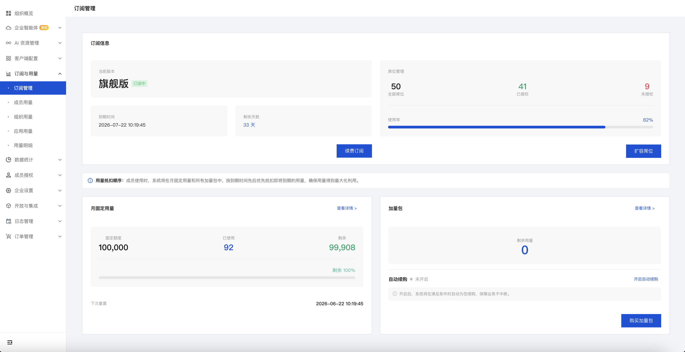
管理后台解决的根本问题是：让 AI 在企业中的使用从「不可见」变为「可管理、可衡量、可优化」，从而将单点的 AI 提效纳入组织的持续治理体系中。
六、企业 AI 治理速查表
AI 治理的起点是「可见」——管理者需要知道 Agent 在组织中是否真正被使用、用在什么地方、产生了什么价值。以下五个维度覆盖了日常治理的核心关注点：
| 关注维度 | 关键指标 | 预期表现 | 低于预期时的应对 |
|---|---|---|---|
| 是否用起来了 | 活跃用户数、周均 Session 数 | 目标部门的活跃率持续上升，周均 Session 保持稳定或增长 | 检查 Agent 场景与员工实际工作是否匹配；组织一次使用培训或示范 |
| 是否用对地方 | 高频使用场景分布、各 Skill 调用占比 | 使用集中在与业务目标相关的场景上，调用分布合理 | 如果出现预期外的使用模式，调整 Agent 的能力范围或补充引导说明 |
| 资产是否积累 | Skill 创建数、知识库更新频率、资产复用次数 | 新需求和经验持续沉淀为 Skill 或知识库条目，复用率上升 | 指定专人定期回顾高价值会话，将可复用的流程提炼为 Skill |
| 成本是否合理 | 部门消耗分布、单场景人均消耗、异常消耗预警 | 消耗集中在核心业务场景，单位产出成本稳定 | 分析高消耗场景的投入产出比；评估是否有更合适的模型或更精简的 Prompt 替代 |
| 安全是否可控 | 审计日志异常数、越权调用记录、敏感信息泄露告警 | 审计日志中无未预期的越权操作，异常告警在合理频率内 | 收紧相关 Agent 的 MCP 权限；排查 System Prompt 是否缺乏足够的拒绝边界 |
建议首次上线后每周巡检一次，待运行稳定后可放宽至每月。关键是在 Agent 数量增长过程中保持治理节奏——Agent 越多，分散管理的风险越大。
七、快速开始 — 企业版上线第一步
企业版上线的核心思路是「先跑通最小闭环，再逐步扩展」，避免一次性全面铺开但无人真正使用。
第一步：架构初始化（管理员）
├─ 登录管理后台，完成组织架构导入与成员添加
└─ 配置基础权限：明确哪些角色可以创建 Skill、发布专家、管理连接器
第二步：选定首个落地场景（管理者 + 业务骨干）
├─ 盘点团队中高频重复的任务流程
├─ 选择其中最有代表性且流程最稳定的一个场景
└─ 由熟悉该业务的骨干参与设计，确保领域知识准确
第三步：创建首批能力资产（业务骨干 + 管理员）
├─ 将选定场景封装为 Skill（可优先使用指令反向生成）
├─ 基于该场景设计对应的专家角色
└─ 邀请少量种子用户试用并收集反馈
第四步：验证效果并逐步推广（管理者）
├─ 查看后台数据：活跃用户、Skill 调用趋势
├─ 收集种子用户反馈，识别卡点和改进方向
└─ 调优确认无误后，逐步扩大至整个部门，再将新经验沉淀为更多资产
启动检查清单：
□ 组织架构与成员导入已完成
□ 首个落地业务场景已确定
□ 场景负责人已明确
□ 首批 Skill 已创建并通过试用验证
□ 种子用户已完成实际使用并反馈
□ 管理者已查看后台数据，确认使用情况
□ 推广计划已确定
企业版上线的关键在于先聚焦一个场景、一个 Skill、一个部门跑通全流程，验证有效后再横向复制。
核心要点回顾
- Agent/Runtime/Session 三层架构：配置层、运行层、会话层各司其职
- 能力组装遵循「够用就好」原则，不关联无关能力
- 企业智能体构建五步法：场景→能力→Prompt→验证→发布
- Agent 上线必经四阶段：配置→试运行→小范围验证→正式发布
- 管理后台六大维度让数字员工可管理、可衡量、可优化
- 企业 AI 治理速查表覆盖五大关注维度，快速自查 Agent 团队的健康状态
- 企业版上线先跑通最小闭环（一个场景、一个 Skill、一个部门），验证有效后再横向复制
实战挑战（5 分钟）
选一个业务场景，搭一个 Agent 方案——列出要关联的 Skill、专家、MCP 工具和知识库。然后想想：这个 Agent 如果上线，你会怎么验证它真的有用？
本章总结
| 章节 | 要点 |
|---|---|
| 6.1 为什么需要升级 | 四个卡点——管理难闭环、团队难协作、知识难传承、资产难治理——让个人提效无法自动变成组织提效 |
| 6.2 能力资产管理 | Skill = 工具能力（三种创建方式+生命周期）；专家 = 角色切换机制（设计要素+开发规范：plugin.json + agents/*.md + 目录结构 + zip打包）；连接器 = 系统接口（生命周期+安全三道关）；MCP Server = 连接器技术底座（按协议构建+权限最小） |
| 6.3 三层递进 | 专家（角色切换+企业知识加持）→ 助理（打破桌面限制，7×24 在线）→ 项目（人+AI 同空间协作）+ 资产持续积累 |
| 6.4 智能体运行与治理 | Agent/Runtime/Session 三层架构 + 能力组装够用就好 + 构建五步法（场景→能力→Prompt→验证→发布）+ 上线四阶段 + 管理后台六大维度 + 治理速查表 |
企业 AI 不在"每个人都会用 AI"，而在"每个人的 AI 能力能不能沉淀为组织能力"。建好 Skill（工具）、专家（顾问）、连接器（桥梁）三大资产底座，走通专家→助理→项目的三层递进，让每次协作的成果持续积累——这才是从超级个体到超级团队的完整路径。
定期更新提醒：WorkBuddy 企业版持续迭代，SkillHub 社区技能库每周更新。建议您定期关注版本发布和新增能力，及时将新功能纳入企业 AI 治理体系。